CRMtree
CRMtree je sistem za prodajne ekipe in ekipe za upravljanje strank. Prodajalci vodijo leade od prvega stika do podpisanega posla, načrtujejo naloge in sestanke ter po zaključenem poslu skrbijo za partnerja. Vodje prodaje spremljajo rezultate ekipe in prodajo partnerjem v poročilih. Projekti, dokumenti, bogatenje potencialnih strank in analiza klicev dopolnjujejo celoto – vse na enem mestu, v brskalniku in v mobilni aplikaciji.
1 Uporabnik
Vsakodnevno delo prodajalcev in vodij: leadi, partnerji, koledar, poročila, projekti, dokumenti, potencialne stranke in analiza klicev.
Uvod
CRMtree je sistem za prodajne ekipe in ljudi, ki z njimi sodelujejo. Na enem mestu vodite leade od prvega stika do podpisane pogodbe, skrbite za svoje partnerje (stranke), načrtujete sestanke in naloge ter po zaključenem poslu vodite izvedbene projekte in poteke dokumentov. Vodje prodaje dobijo poročila o leadih in partnerjih, moduli z umetno inteligenco pa vam pomagajo najti in oceniti nova podjetja ter pregledati prodajne klice.
CRM
Leadi, kartica leada, aktivnosti in naloge, koledar aktivnosti, register partnerjev, uvajanje.
Poročanje za vodje
Prodajna nadzorna plošča, poročila o leadih, rezultati in analitika partnerjev, proračuni, tveganje odhoda.
Projekti
Naloge, Ganttov načrt, klepet, priloge in projektne finance.
Dokumenti
Register dokumentov, računi in poteki potrjevanja.
Potencialne stranke
Bogatenje podatkov o podjetjih z umetno inteligenco in ocenjevanje glede na vaš idealni profil stranke.
Analiza klicev
Pregled prodajnih klicev z umetno inteligenco in naloge po klicu.
Module za vaše podjetje vklopi ekipa CRMtree. Če kakšne postavke menija, opisane tukaj, ni, vaše podjetje tega modula ne uporablja ali nimate dostopa do njega.
Vloge
Kaj vidite v CRMtree, je odvisno od vaše vloge, ki jo dodeli administrator.
| Vloga | Primer v demo podatkih | Kaj vidi in počne |
|---|---|---|
| Prodajalec | Piotr Zieliński, Ewa Wiśniewska, Tomasz Wójcik | Svoje leade in partnerje, svoje naloge in sestanke, svojo nadzorno ploščo. Po prijavi pristane na nadzorni plošči CRM. Uporablja mobilno aplikacijo. |
| Vodja prodaje | Anna Nowicka, Karol Mazur | Vse, kar ima prodajalec, ter leade, partnerje in koledarje prodajalcev v svojih skupinah. Ima prodajna poročila, analitiko partnerjev in proračune (glejte Vodja prodaje). Uporablja mobilno aplikacijo. |
| Uporabnik brez vloge v CRM | Olga Kamińska (finance) | Brez menija CRM. Dela v Dokumentih in Projektih, na primer z računi in projektnimi financami. Po prijavi pristane na nadzorni plošči Dokumentov. |
| Zunanji račun | Marta Lis (podizvajalka) | Samo projekte, v katere je bila dodana, ter »Moje nastavitve«. |
| Administrator | Jan Kowalski | Nastavitve aplikacije, uporabniki, skupine in vloge, uvoz CSV, revizijski dnevniki. Vidi vse podatke CRM. Opisano v 2. delu. |
Brskalnik in mobilna aplikacija
CRMtree deluje v brskalniku in v aplikaciji za Android »CRMtree«, ki je na voljo v trgovini Google Play. Obe uporabljata iste podatke: lead, dodan na telefonu, se takoj prikaže na računalniku, naloga, načrtovana na računalniku, pa se prikaže na telefonu.
V celotnem priročniku je vsebina, ki velja samo za eno različico, označena: WEB za brskalniško aplikacijo in MOBILE za aplikacijo na telefonu. Vsebina brez oznake velja za obe.
Življenjski cikel leada
Lead je podjetje, ki mu želite prodajati. Ko stranka podpiše, lead z gumbom »Začni uvajanje« prenesete v uvajanje in od tedaj naprej z njim delate kot s partnerjem (glejte Partnerji).
Faze leada
Tabela navaja privzete faze. Administrator jih lahko preimenuje in preuredi, da ustrezajo vašemu prodajnemu procesu.
| V brskalniku | Na telefonu | Verjetnost | Kaj pomeni |
|---|---|---|---|
| Nov | Nov | 10% | Pravkar dodan. Dovolj sta naziv podjetja in davčna številka. |
| Kvalifikacija | Kvalifikacija | 25% | Preverjate potrebe in proračun stranke. Od te faze naprej mora imeti lead popolne podatke. |
| Predstavitev | Predstavitev | 50% | Predstavljate svojo rešitev. |
| Ponudba | Ponudba | 70% | Stranka ima vašo ponudbo. |
| Pogajanja | Pogajanja | 85% | Dogovarjate se o pogojih. |
| Dobljen | Dobljen | 100% | Posel dobljen. |
| Izgubljen | Izgubljen | 0% | Posel izgubljen, vedno z razlogom, na primer »Wysoka cena« (previsoka cena). |
| V uvajanju / Uveden | — | 100% | Lead je prešel v uvajanje ali je že aktiven partner. Kartica leada je takrat samo za branje. |
| Arhiv | Arhiviran | 0% | Odložen. Skrit v seznamih, nadzornih ploščah in poročilih. |
Lead se premika po eno fazo naprej ali nazaj. Iz katere koli faze lijaka ga lahko označite tudi kot Izgubljen. Izgubljen ali arhiviran lead se lahko vrne samo v fazo Nov. Glejte Spreminjanje faze.
Začetek dela
WEBPrijava v spletni aplikaciji
Odprite naslov CRMtree vašega podjetja (dobite ga od administratorja) in se prijavite s službenim e-poštnim naslovom in geslom. Prodajalci in vodje prodaje pristanejo neposredno na »Nadzorni plošči« v razdelku CRM. Če sledite povezavi iz e-pošte, na primer opomniku za nalogo, vas CRMtree po prijavi pelje neposredno na ta lead.
WEBMeni
Meni na levi je razdeljen na razdelke. Vidite samo postavke, do katerih imate dostop.
- »Dokumenti«: nadzorna plošča dokumentov, »Dokumenti«, »Potek dela«, »Skupine in vloge«.
- »Projekti«: seznam projektov.
- »CRM«: »Nadzorna plošča«, »Leadi«, »Koledar aktivnosti«, »Prodajna poročila«, »Potencialne stranke«, »Analiza klicev«.
- »Partnerji«: »Uvajanje«, »Register partnerjev«, »Skupine partnerjev«, za vodje pa tudi poročila o partnerjih.
- Na dnu: »Moje nastavitve« (jezik, geslo, e-poštni podpis, nadomeščanja; glejte Moje nastavitve) in kartica z vašim imenom.
Puščica na vrhu menija (»Strni meni«) meni skrči na ikone. Brskalnik si vašo izbiro zapomni.
MOBILEAplikacija na telefonu
- Namestite aplikacijo »CRMtree« iz trgovine Google Play.
- Vnesite svoj »Službeni e-poštni naslov« in »Geslo«, enaka kot v spletni aplikaciji. Naslova podjetja ni treba vnašati: aplikacija ga določi sama.
- Tapnite »Prijava«. Če vaše geslo ustreza računom v več podjetjih, na zaslonu »Izberite podjetje« izberite enega. Če želite pozneje zamenjati podjetje, se odjavite in znova prijavite.
- Če vam je administrator dodelil začasno geslo, vas aplikacija prosi, da »Nastavite novo geslo« (vsaj 8 znakov).
- Po prvi prijavi aplikacija ponudi »Vklopiti biometrično prijavo?«. Če jo vklopite, ob vsakem odprtju aplikacije vidite »Odkleni CRMtree« in jo odklenete s prstnim odtisom ali obrazom. »Prijava z geslom« vam omogoča, da namesto tega uporabite geslo.
Brez biometrije si aplikacija zapomni samo vaš e-poštni naslov in po ponovnem zagonu telefona znova zahteva geslo. Ko ste v aplikaciji, ta zaprosi tudi za dovoljenje za pošiljanje obvestil, da opomniki za naloge in na novo dodeljene naloge prispejo na vaš telefon.
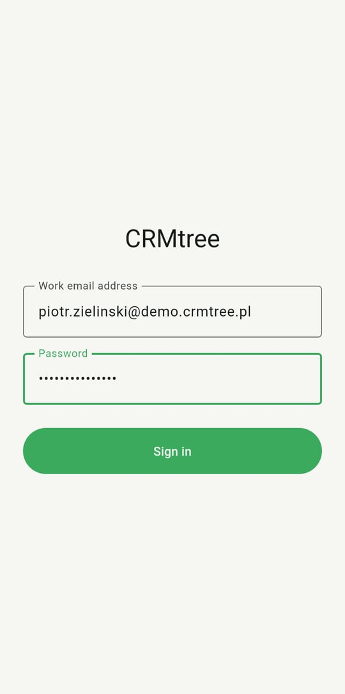
Spodnja vrstica vsebuje »Domov«, »Leadi«, »Partnerji«, »Koledar« in »Projekti« (Leadi, Partnerji in Projekti se prikažejo, če ima vaše podjetje te module). Ikona osebe v zgornjem levem kotu odpre vaš »Profil«: biometrija, temni način, jezik in odjava. Zeleni gumb »+« na prvem zaslonu Domov, Leadi, Partnerji in Koledar je bližnjica za dodajanje opombe, naloge, sestanka ali novega leada (glejte Hitro dodajanje).
Vaša nadzorna plošča
WEBNadzorna plošča CRM
CRM → »Nadzorna plošča« je domači zaslon prodajalca. Na vrhu vidite »Pozdravljeni, Piotr!«, števec današnjih telefonskih klicev glede na dnevni cilj (»Klici danes«) in tekoči teden.
- Ploščice KPI: »Novi leadi« in »Vrednost novih leadov« (vaši leadi, dodani ta teden, v primerjavi s prejšnjim tednom), »Nove priložnosti« (leadi v lijaku), »Vrednost priložnosti« (utežena z verjetnostjo) in »Dobljene priložnosti«. Klik na ploščico odpre seznam leadov z ustreznim filtrom.
- »Prodajni lijak«: en stolpec na fazo, preklopljiv med »Vrednost« in »Število«. Klik na stolpec prikaže leade v tej fazi. Zadržani leadi so izpuščeni.
- »Prodajni rezultati«: kumulativna vrednost prodaje v obdobju »Teden«, »Mesec« ali »Četrtletje«.
- »Naloge za danes«: do šest nalog, ki zapadejo danes, ter zapadle projektne naloge. S kljukico zaprete nalogo. CRMtree zahteva »Zaključni komentar« in ga doda nalogi. Ikona koledarja ob nalogi jo kopira v vaš lastni koledar.
- »Najnovejše priložnosti«, »Zadnja aktivnost« (zadnje opombe, klici in neprebrana e-pošta) ter »Tveganje odhoda« (partnerji, ki jim grozi izguba).
- »Moji telefonski klici«: dohodni in odhodni klici, sprejeti in zgrešeni, za izbrano obdobje.
Zavihek »Tveganje odhoda« na vrhu navaja vaše partnerje, ki jim grozi izguba. Opisan je v razdelku za vodje (Vodja prodaje).
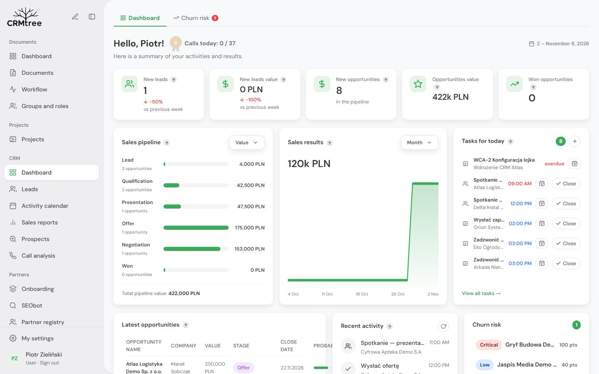
MOBILEDomov in Nadzorna plošča na telefonu
Zavihek »Domov« je vaš dan. Pod »Živjo, Piotr!« in današnjim datumom so tri ploščice: »Lijak« (vrednost odprtih priložnosti), »Leadi« (aktivni) in »Proračun« (koliko tega mesečnega proračuna ste že dobili). Pod njimi so trije seznami:
- »Zapadlo«: sestanki, klici in naloge, katerih čas je potekel, v rdeči barvi.
- »Današnji spored«: današnji sestanki, klici in naloge z urami, vključno z vašimi projektnimi nalogami.
- »Zahteva pozornost«: leadi z neprebrano e-pošto, SMS ali sporočili WhatsApp ali z zgrešenimi klici.
Tapnite element, da ga uredite; list vsebuje povezavo »Pojdi na lead«. Domov prikazuje samo vaše lastno delo, tudi za vodje.
Ikona grafikona v zgornjem desnem kotu ali dotik ploščic odpre »Nadzorno ploščo«: »Novi leadi« in »Vrednost novih leadov« v primerjavi s prejšnjim tednom, »Leadi«, »Lijak«, »Dobljene priložnosti« ta mesec, »Prodajni lijak« (tapnite fazo, da odprete njene leade), »Prodajni rezultati«, »Tveganje odhoda« in »Zadnja aktivnost«. Vodje tu vidijo številke svoje ekipe in jih lahko zožijo na enega prodajalca.
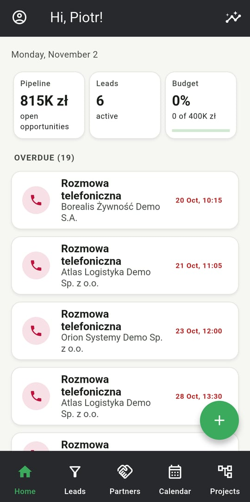
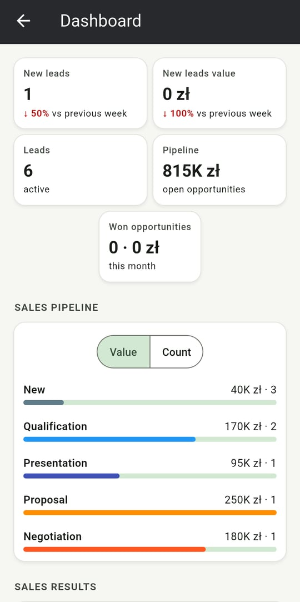
Seznam leadov
CRM → »Leadi« odpre »Prodajni leadi«. Prodajalci vidijo svoje leade, vodje prodaje pa leade prodajalcev v svojih skupinah. Nad seznamom so ploščice za »Prodajne priložnosti«, »Vroče«, »Prodajni lijak (PLN)«, »Dobljene« in »Izgubljene«.
WEBKanban
Privzeto so leadi razporejeni v stolpce po fazah. Glava vsakega stolpca prikazuje število leadov in njihovo skupno vrednost. Kartica leada prikazuje podjetje, kontakt, vrednost, verjetnost, vir, datum dodajanja in začetnici prodajalca. Plamen označuje vroč lead, »Zadržano« pa začasno ustavljenega. Zadnji stolpec, »Zaprto«, zbira dobljene in izgubljene leade. Klik na kartico odpre lead. Fazo spremenite na kartici leada.
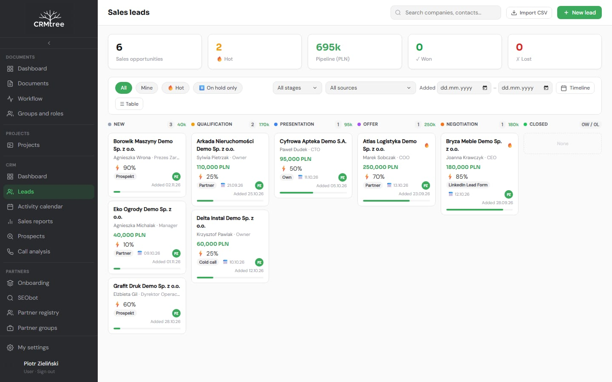
WEBTabela
Gumb »Tabela« preklopi na seznam s stolpci »Podjetje / Kontakt«, »Prvi stik«, »Faza«, »% verjetnosti«, »Letni promet«, »% Online«, »Prodajalec«, »Vir« in »Zaprtje« (pričakovani datum zaprtja). Klik na glavo stolpca razvrsti seznam. Ikone ob podjetju opozarjajo na zgrešene klice in neprebrana sporočila, lead, ki je prešel v uvajanje, pa prikazuje povezavo »Pretvorjeno → Partner«. »Kanban« vas vrne na tablo.
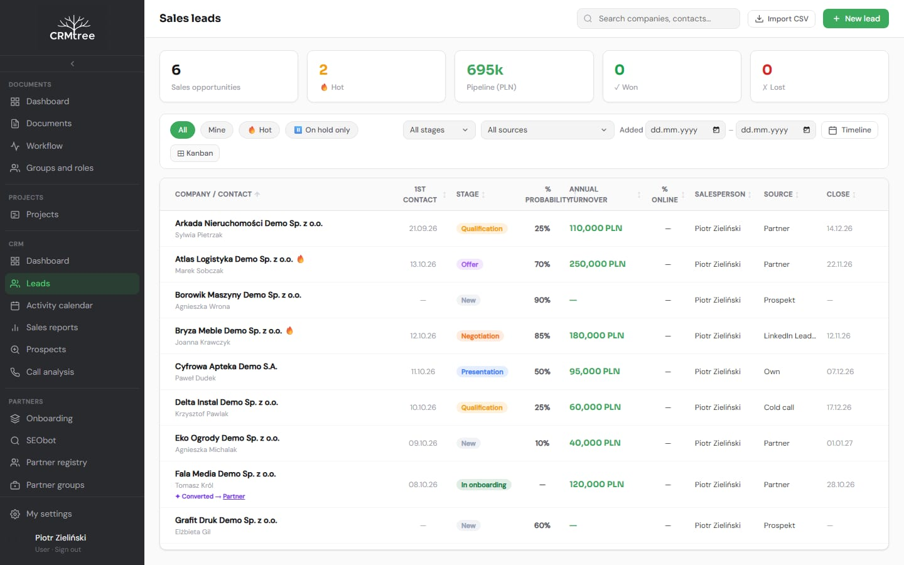
WEBIskanje in filtri
- »Išči podjetja, kontakte…« išče po nazivu podjetja, kontaktni osebi, e-pošti, davčni številki, telefonu, opombah in oznakah.
- Hitri filtri: »Vsi«, »Moji«, »Vroči«, »Samo zadržani«.
- »Vse faze« (tu najdete tudi »Arhiv«), »Vsi viri« in časovno obdobje »Dodano«.
- Vodje dobijo tudi »Vsi prodajalci«, kjer lahko izberejo enega prodajalca ali celotno skupino.
Če pridete s ploščice nadzorne plošče ali iz poročila, se nad filtri prikaže čip »Filter poročila«. Klik na njegov križec ga počisti.
WEBČasovnica
»Časovnica« odpre desno ploščo »Koledar aktivnosti«: vaše sestanke, klice in odprte naloge iz leadov, partnerjev in projektov po vrstnem redu datumov. Plošča se sama pomakne na danes (»DANES«). Klik na element odpre »Podrobnosti aktivnosti« s povezavama »Odpri lead« in »Uredi aktivnost«.
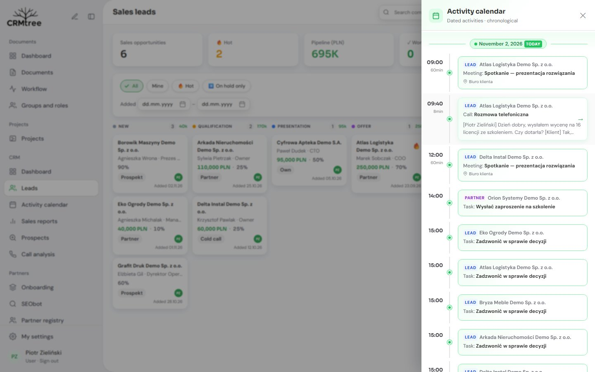
MOBILELeadi na telefonu
Zavihek »Leadi« ima polje »Išči podjetje, osebo, telefon…« ter čipe za »Vroči« in vsako fazo (»Nov«, »Kvalifikacija«, »Predstavitev« in tako naprej). Nedavno posodobljeni leadi so na vrhu. Vsaka ploščica prikazuje naslednjo aktivnost, na primer »Zapadlo: …« v rdeči barvi, nato kontakt, vrednost in verjetnost. Ikona lijaka v zgornjem desnem kotu odpre »Filtre«: »Faza« (vključno z Arhivirano), »Vir«, stikala za »Vroči«, »Samo zadržani« in »Samo moji«, za vodje pa »Prodajalec«. Zaključite z »Počisti« ali »Uporabi«.
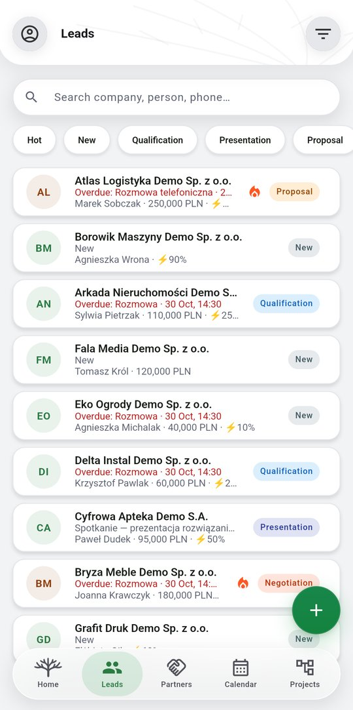
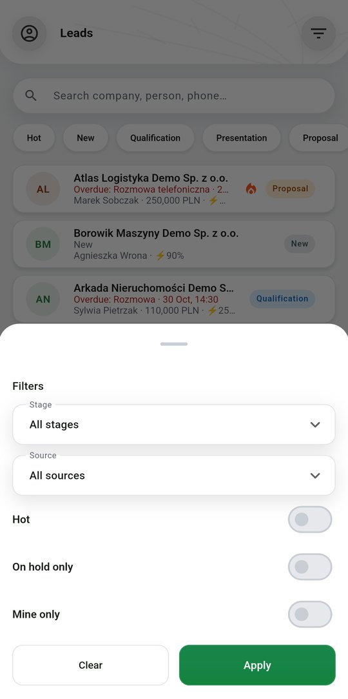
Kartica leada
Kartica leada vsebuje vse o podjetju: podatke, fazo, kontakte, aktivnosti, e-pošto, dokumente in zgodovino sprememb. Odprete jo s seznama leadov, nadzorne plošče, koledarja ali povezave v e-pošti.
WEBPostavitev kartice
- Glava: »← Leadi«, naziv podjetja, faza, »Vroč«, na desni pa »Zadržano«, »Arhiv«, gumb za telefon, »E-pošta«, »Uredi« in »Začni uvajanje«.
- Plošča »Informacije« na levi: »Podjetje« (naziv, davčna številka, panoga), »Kontakt«, »Dodatni kontakti«, »Prodaja« (faza, verjetnost, letni promet, vir, datumi, prodajalec), »Zapiski« z oznakami, »Dodatna polja« in »Trženjska soglasja«. Puščica »‹« ploščo strne.
- Sredina: vrstica faz, nato zavihki »Vse«, »Priloge«, »Naloge«, »Zapiski«, »E-pošta«, »WhatsApp«, »SMS«, »Klici« in »Sestanki«.
- Desni stolpec: »Komunikacija« (»Pokliči«, »Pošlji e-sporočilo«), »Dokumenti« (povezani dokumenti iz modula Dokumenti) in »Zgodovina sprememb« s povezavo »Pokaži vse«.
Če ima lead povezan projekt, zavihka »Vse« in »Naloge« prikažeta blok »Projektne naloge«: naloge projekta z roki, statusi in izvajalci ter prihodki, stroški in marža projekta. Člani projekta lahko nalogo odprejo z enim klikom.
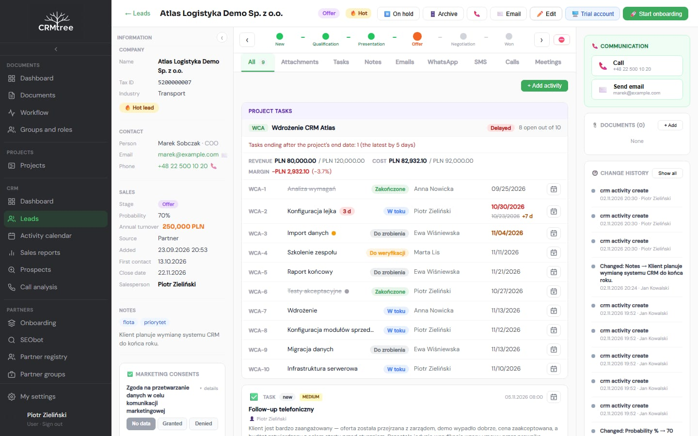
Spreminjanje faze
WEBVrstica faz prikazuje lijak od Nov do Dobljen. Zelene pike so končane faze, oranžna pika je trenutna. Puščici »‹« in »›« premakneta lead za eno fazo nazaj ali naprej, lahko pa kliknete tudi sosednjo piko. Rdeči gumb na desni lead označi kot Izgubljen: odpre se okno za urejanje z obveznim poljem »Razlog za izgubo«.
| Trenutna faza | Lahko preide v |
|---|---|
| Faza lijaka (Nov … Pogajanja) | prejšnjo fazo, naslednjo fazo (iz Pogajanj je to Dobljen) ali Izgubljen |
| Dobljen | samo nazaj v zadnjo fazo lijaka (Pogajanja) |
| Izgubljen, Arhiv | samo v Nov (»↩ Nazaj na Nov«) |
| V uvajanju, Uveden | brez sprememb; kartica je samo za branje |
Lead je v fazi Ponudba. Piotr lahko klikne Predstavitev (en korak nazaj) ali Pogajanja (en korak naprej); pika Dobljen je neaktivna. Stranka zaradi cene odstopi, zato Piotr klikne rdeči gumb, izbere razlog »Wysoka cena« in shrani.
Vrstica faz zdaj kaže »Izgubljen · Wysoka cena« z gumbom »↩ Nazaj na Nov«, lead pa preide v stolpec »Zaprto«.
MOBILENa telefonu tapnite »Spremeni fazo« na kartici leada. Navedene so samo dovoljene faze. Če izberete »Izgubljen«, aplikacija zahteva »Razlog za izgubo« s seznama vašega podjetja.
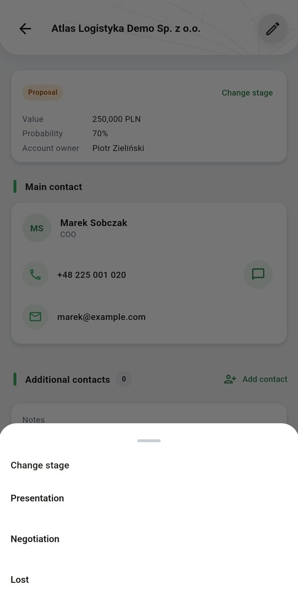
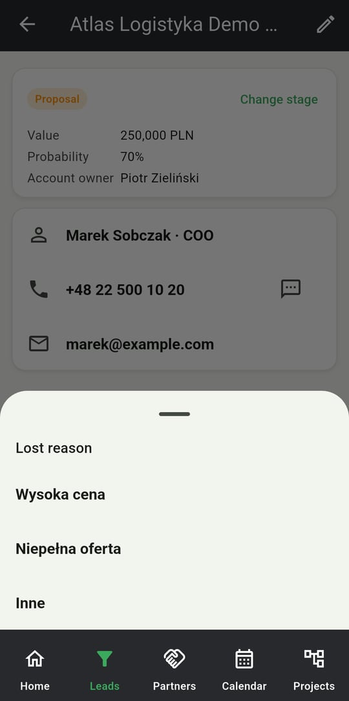
WEBZadržanje in arhiv
Zadržanje začasno ustavi lead, na primer ko stranka prosi, naj jo pokličete naslednji mesec. Gumb »Zadržano« je na voljo od druge faze lijaka naprej (po fazi Nov). V oknu »Nastavi zadržanje« izberite »Razlog« in datum »Aktivno do«. Do takrat je lead izpuščen iz lijaka in KPI, njegove faze pa ni mogoče spremeniti. CRMtree doda nalogo za končni datum z opomnikom dan prej. Zadržanje se po tem datumu samo odpravi, lahko pa ga predčasno končate z gumbom »Odstrani zadržanje«.
Lead v fazi Ponudba, razlog »Brak osób decyzyjnych« (ni odločevalcev), aktivno do 20.11.2026.
Glava prikazuje »Zadržano do 20.11.2026«. Za 20. november ob 9:00 se ustvari nadaljnja naloga z opomnikom 19. novembra. Po 20. novembru se zadržanje samodejno odstrani.
»Arhiv« skrije lead v seznamih, nadzornih ploščah in poročilih. Še vedno ga najdete, če v filtru faz izberete »Arhiv«. Če ga želite vrniti, odprite »Uredi« in nastavite fazo na Nov.
Urejanje podatkov
WEB»Uredi« odpre »Uredi lead« z razdelki »Osnovno«, »Spletna stran« (»Pridobi podatke« izpolni prazna polja in logotip s spletne strani podjetja), »Kontakt«, »Dodatni kontakti«, »Davčna številka«, »Prodajne podrobnosti« (letni promet in valuta, datumi, vir, panoga, prodajalec, % verjetnosti, oznake), »Zapiski« in »Dodatna polja«.
- Davčna številka je vedno obvezna: dvočrkovna koda države, ki ji sledi številka; za Poljsko 10 številk (na primer PL5200000007). V vašem podjetju lahko vsaka davčna številka pripada samo enemu leadu ali partnerju.
- Od faze Kvalifikacija naprej shranjevanje zahteva spletno stran, ime kontakta, vlogo v podjetju, e-pošto, telefon, letni promet, % online, prvi stik, datum zaprtja, vir, panogo, prodajalca in % verjetnosti. Rdeče sporočilo »Izpolnite obvezna polja za fazo…« navaja vse, kar manjka.
- Vodje lahko zamenjajo prodajalca. Novi lastnik prejme e-pošto in obvestilo na telefon.
Če je »Uredi« siv, lead pripada prodajalcu zunaj vaših skupin in ga lahko samo pregledujete.
MOBILESvinčnik v zgornjem desnem kotu odpre »Uredi podrobnosti«: podjetje, kontaktna oseba, delovno mesto, telefon, e-pošta, spletna stran, davčna številka, panoga, vrednost, verjetnost (%), opombe in stikalo »Vroč lead«.
WEBE-pošta, telefon, WhatsApp, SMS in priloge
- »E-pošta«: »+ Novo e-sporočilo« odpre obrazec za sestavljanje (Za, Kp, Zadeva, besedilo, priloge, predloga). Ob prvi uporabi vas CRMtree prosi, da v oknu vašega ponudnika e-pošte povežete svoj poštni predal. Odgovori strank se samodejno pojavijo pri leadu, če prihajajo z naslova leada ali enega od njegovih dodatnih kontaktov. Neprebrane niti so označene z rdečo barvo. Vaš podpis in predloge najdete v Moje nastavitve.
- Telefon: če vaše podjetje uporablja vgrajeni telefonski sistem, ikona slušalke ali »Pokliči« vzpostavi klic iz vašega brskalnika. Po klicu lahko dodate opombo, CRMtree pa pri leadu zabeleži aktivnost Klic.
- »WhatsApp« in »SMS«: pogovori prek skupne številke WhatsApp vašega podjetja in sporočila SMS, poslana prek telefonskega sistema, če ima vaše podjetje te module.
- »Priloge«: datoteke z leada, njegovih nalog in opomb ter vseh povezanih projektov, s filtri. »Dodaj datoteko« naloži datoteke do 50 MB.
- »Trženjska soglasja«: vsako soglasje nastavite na »Ni podatkov«, »Soglasje« ali »Ni soglasja« in kliknite »Shrani soglasja«.
MOBILEKartica leada na telefonu
Vrh kartice prikazuje fazo, »Spremeni fazo«, »Vrednost«, »Verjetnost« in »Skrbnik stranke«. Sledi kontakt: tapnite številko, da jo pokličete, ikono govornega mehurčka, da odprete aplikacijo za SMS, ali e-poštni naslov, da odprete poštno aplikacijo. Nižje so »Dodatni kontakti« (z »Dodaj kontakt«), »Zapiski«, »Projektne naloge« in »Aktivnosti«. Odprte naloge, klici in sestanki imajo krogec »Označi kot opravljeno«: en tap aktivnost zapre. Gumb »+« doda aktivnost temu leadu.
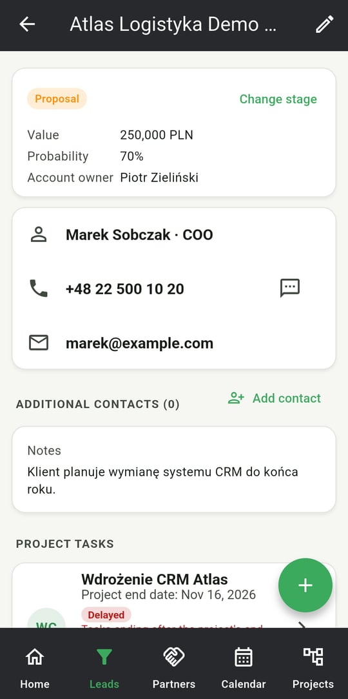
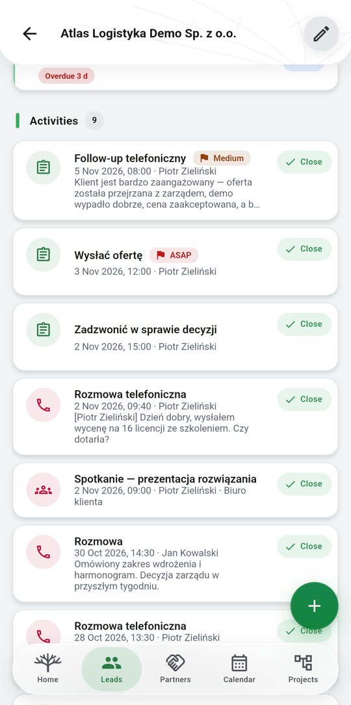
Dodajanje leada
WEBV brskalniku
- Na seznamu leadov kliknite »Nov lead«.
- Po želji vnesite »Spletna stran«. CRMtree vpraša »Želite pridobiti podatke podjetja s spletne strani?«; »Da, pridobi« izpolni prazna polja (naziv, e-pošta, telefon) in logotip. Preverite, kaj je našel.
- Vnesite »Naziv podjetja« in »Davčna številka« (polje se začne s PL). To sta edini obvezni polji za fazo Nov.
- Dodajte vse drugo, kar veste: kontakt, »Vloga v podjetju«, e-pošto, telefon, »Dodatni kontakti«, »Vrednost (PLN)«, »Vir«, »Prvi stik«, opombe. Označite »Vroč lead«, če je nujen.
- Kliknite »Ustvari lead«. Lead prodajalca je vedno dodeljen njemu samemu.
Vodje prodaje lahko takoj izberejo poznejšo »Fazo« in »Prodajalec«. Za vsako fazo, razen Nov, obrazec zahteva tudi kontakt, vlogo, e-pošto, telefon, vrednost, vir, prvi stik, spletno stran in prodajalca. Dodatna polja se izpolnijo pozneje, ko lead urejate.
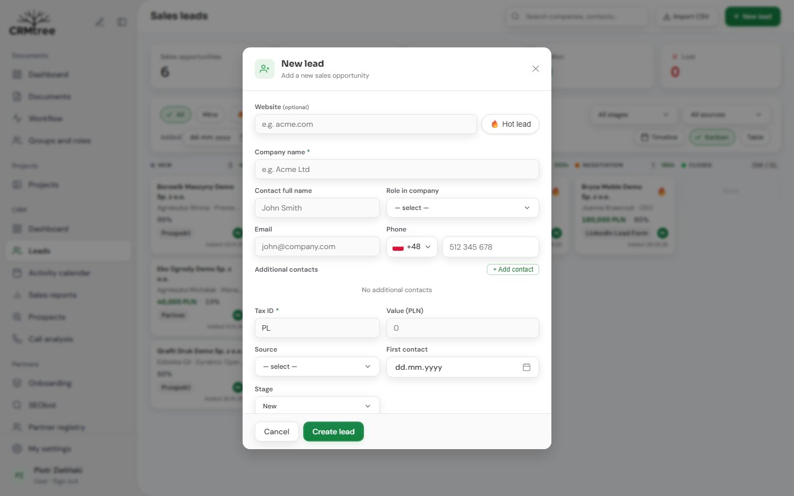
MOBILENa telefonu
Tapnite »+« → »Nov lead«. Obrazec vsebuje samo polja, ki jih je enostavno vnašati na telefonu: »Podjetje« (obvezno), »Kontaktna oseba«, »Telefon«, »E-pošta«, »Vrednost (PLN)«, »Zapiski« in »Vroč lead«. Po »Shrani« se odpre kartica novega leada. Preostalo, na primer davčno številko in vir, izpolnite z urejanjem leada ali v brskalniku.
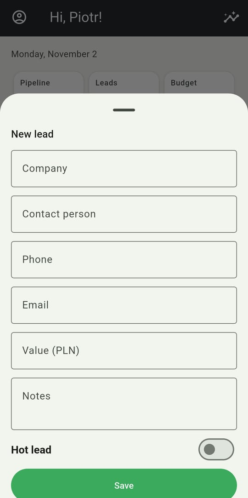
Aktivnosti, naloge in opomniki
Aktivnosti so vse, kar se dogaja z leadom: Naloge, Opombe, Klici in Sestanki. E-pošta, SMS in sporočila WhatsApp se na kartici beležijo samodejno. Kartice partnerjev delujejo enako.
WEBDodajanje aktivnosti na kartici leada
- Izberite zavihek za vrsto aktivnosti, ki jo želite: »Naloge« (ali »Vse«), »Zapiski«, »Klici« ali »Sestanki«.
- Kliknite »+ Dodaj aktivnost«. Zavihek določi vrsto aktivnosti.
- Nastavite »Datum«: »Danes«, »Jutri«, »Čez 2 delovna dneva«, »Čez 3 delovne dni«, »Čez en teden«, »Čez 2 tedna« ali »Datum po meri…«.
- Izberite »Opomnik« (na primer »1 uro prej«, »1 dan prej« ali »Ob roku naloge«), »Lastnika« (privzeto vi) in za naloge »Prioriteto« (ASAP, Pomembno, Srednje, Nizko).
- Za sestanek dodajte »Naslov sestanka«, »Trajanje (min)«, »Lokacijo« in »Udeležence« (e-poštni naslovi, s predlogi).
- Vnesite podrobnosti, po potrebi nalogi ali zapisku priložite datoteko in kliknite »Shrani«.
Ko shranite sestanek z datumom, brskalnik v novem zavihku odpre Google Calendar z izpolnjenim dogodkom. Shranite ga tam, če ga želite imeti v svojem koledarju. CRMtree naslove udeležencev doda med kontakte leada.
Kliknite aktivnost na kartici, da jo uredite. »Zapri nalogo« nalogo zapre, »Znova odpri« pa jo ponovno odpre. Zapadle naloge so označene.
MOBILEAktivnosti na telefonu
Na kartici leada ali partnerja tapnite »+«. V oknu »Nova aktivnost« izberite »Zapisek«, »Klic«, »Naloga« ali »Sestanek«. Naloge in sestanki imajo »Naslov«; zapiski in klici zahtevajo »Opis«. Gumb »Rok« nastavi datum in uro (privzeto naslednja polna ura). Nato nastavite »Opomnik«, »Lastnika«, za naloge »Prioriteto«, za sestanke pa »Lokacijo« in »Udeležence«. Ko shranite nalogo ali sestanek z datumom, aplikacija ponudi »Dodaj v koledar«.
Tapnite obstoječo aktivnost, da jo uredite: spremenite lahko njen status (»Odprto« / »Zaprto«), naslov, rok, opomnik, lastnika in prioriteto.
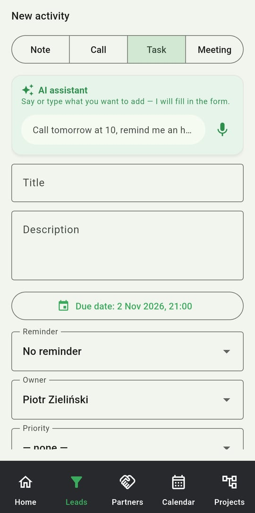
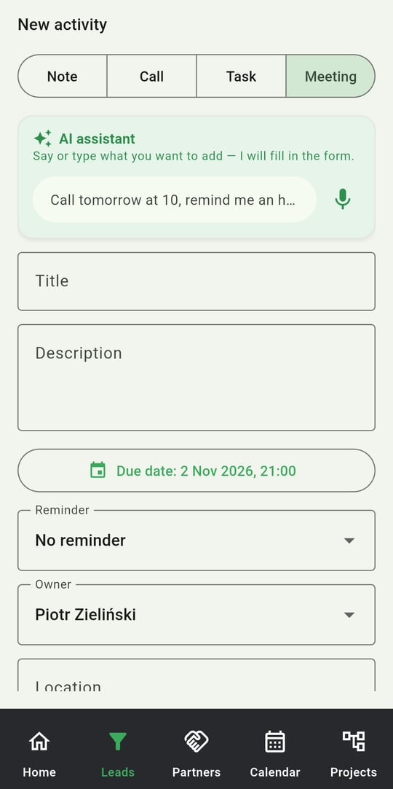
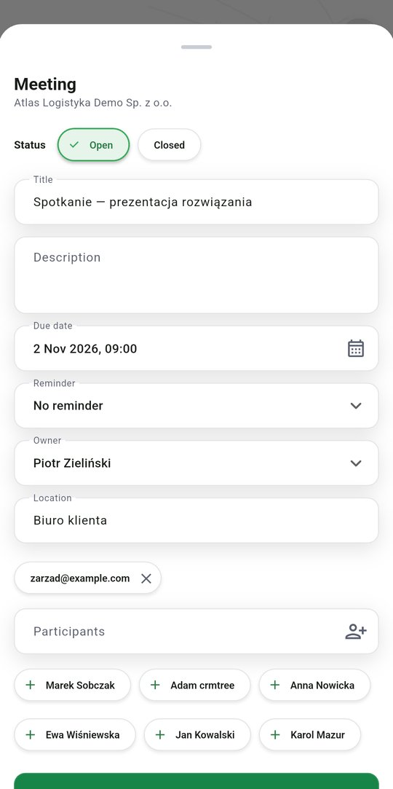
MOBILEHitro dodajanje (»+«)
Zeleni »+« na zaslonih Domov, Leadi, Partnerji in Koledar odpre meni: »Zapisek«, »Naloga«, »Sestanek«, »Nov lead«. Za zapisek, nalogo ali sestanek izberite lead pod »Izberite lead« ali pa pomočniku z umetno inteligenco povejte, za katero podjetje gre (glejte Pomočnik z umetno inteligenco).
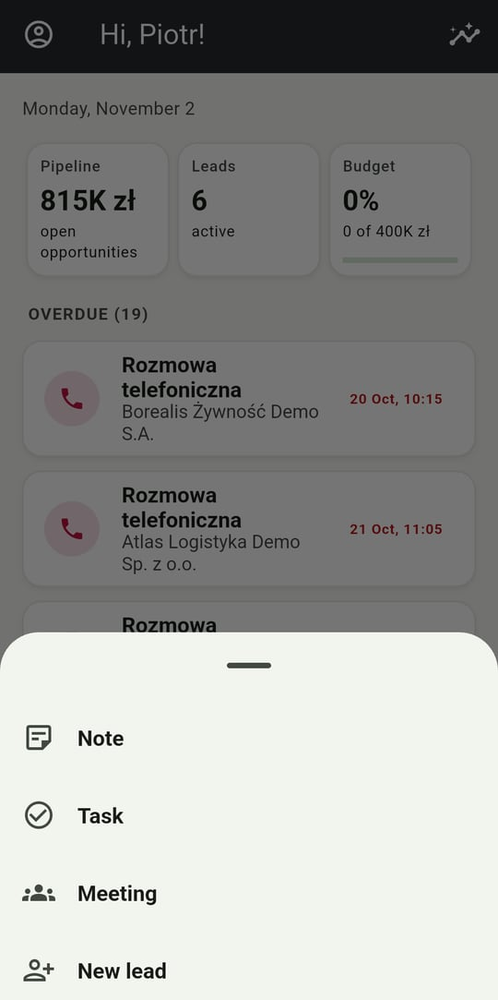
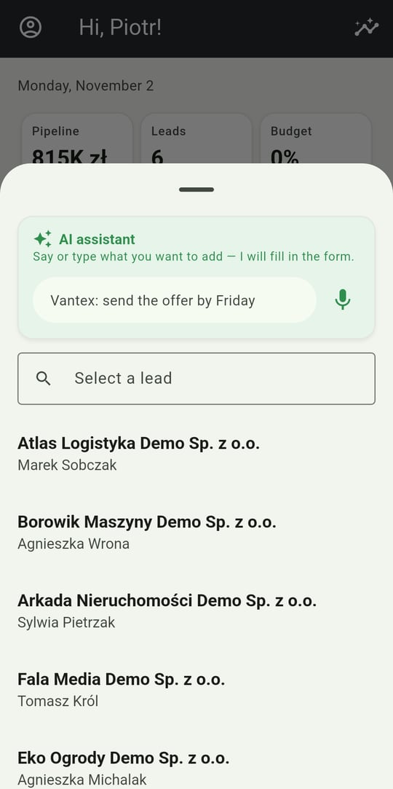
Opomniki in dnevni povzetek
- Opomnik prispe po e-pošti in kot obvestilo na telefonu, poslan pa je lastniku aktivnosti (ali njenemu avtorju, če lastnika ni). Potrebuje rok. Zaprte aktivnosti ne pošiljajo opomnikov, sprememba roka pa opomnik preračuna.
- Obvestilo na telefon prejmete tudi, ko vam nekdo dodeli nalogo ali lead. Ko tapnete nanj, se odpre kartica leada ali partnerja.
- Dnevni povzetek: ob delavnikih ob 9:00 vam CRMtree pošlje e-pošto »Vaše naloge« z razdelki »Zapadlo«, »Rok danes« in »Brez roka«. Zajema vaše naloge iz leadov, partnerjev, uvajanja, projektov in potekov dokumentov. Če nimate ničesar, e-pošta ni poslana.
Pri leadu Atlas Logistyka Demo ima Piotr nalogo »Wysłać ofertę« (poslati ponudbo) z rokom 3. novembra 2026 ob 12:00 in opomnikom »1 dan prej«.
2. novembra okoli 12:00 Piotr prejme e-pošto in obvestilo na telefon. Če nalogo zapre prej, opomnik ni poslan.
»Dodaj v koledar«
Ikona koledarja ob aktivnosti z datumom (v brskalniku) ali »Dodaj v koledar« (na telefonu) jo kopira v vaš lastni koledar: »Google Calendar«, »Outlook« ali »Datoteka .ics (Apple in drugi)«. Dogodek ima naslov »aktivnost — podjetje« in povezavo nazaj na kartico v CRMtree. Gre za enkratno kopijo: če pozneje spremenite datum v CRMtree, dogodek v koledarju ostane nespremenjen.
MOBILEPomočnik z umetno inteligenco na telefonu
Pomočnik z umetno inteligenco namesto vas izpolni obrazec za aktivnost. Kartico »Pomočnik z UI« (»Povejte ali napišite, kaj želite dodati – obrazec bom izpolnil jaz.«) najdete v obrazcu »Nova aktivnost« in v oknu »Izberite lead« ko tapnete »+«.
- Tapnite besedilno polje za tipkanje ali mikrofon za narekovanje. Narekovanje samo izpolni besedilo; pošljete ga s puščico.
- Povejte, kaj želite zabeležiti: o čem gre, kdaj je rok, opomnik, prioriteto in kdo naj to opravi. Iz menija »+« navedite tudi podjetje.
- Pomočnik vpraša o vsem, kar manjka, po eno stvar naenkrat, na primer »O čem gre?«. »Odpri obrazec z vsem, kar zdaj vem« vas zgodaj pelje v obrazec.
- Ko ima vse, prikaže »Povzetek«. Če se ujema več podjetij, izberite pravo (vsako je označeno kot Lead ali Partner).
- Tapnite »Premakni v obrazec«, preverite polja in tapnite »Shrani«. Pomočnik nikoli ničesar ne shrani sam.
Na kartici leada Piotr izbere »Sestanek« in napiše »Sestanek v četrtek ob 14. uri v pisarni stranke«. Pomočnik vpraša, o čem gre, Piotr pa odgovori, da gre za podpis pogodbe in da želi opomnik uro prej.
Povzetek: naslov »Podpis pogodbe«, rok četrtek, 5. november 2026, ob 14:00, lokacija »v pisarni stranke«, opomnik »1 uro prej«. Po »Premakni v obrazec« je vse izpolnjeno in Piotr sestanek shrani.
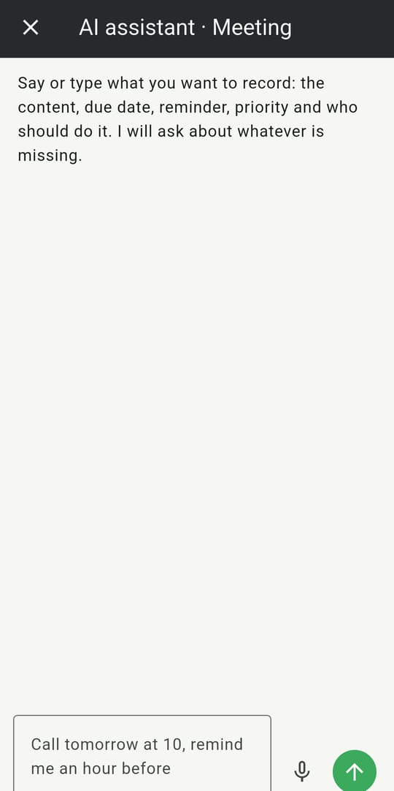
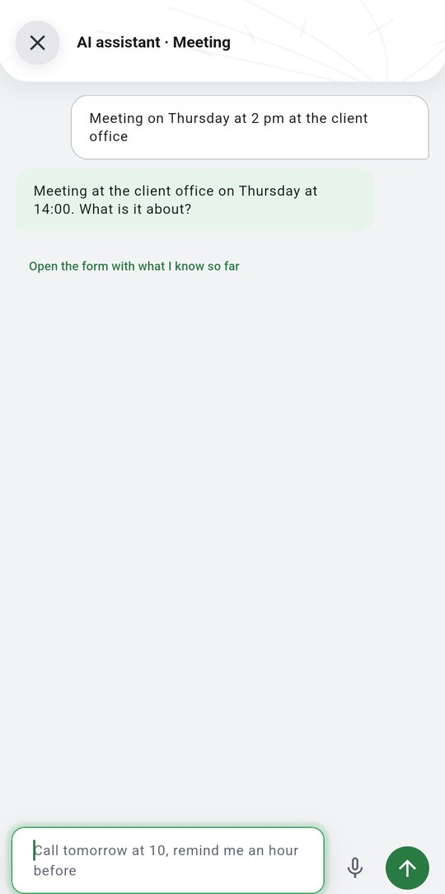
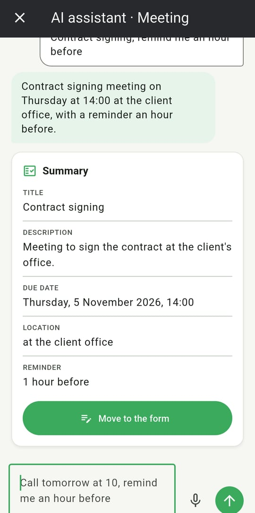
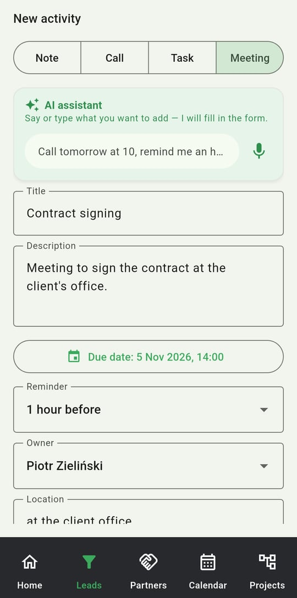
Koledar aktivnosti
WEBKoledar v brskalniku
CRM → »Koledar aktivnosti« se odpre v pogledu »Mesec«. Stikalo na vrhu ponuja »Naloge« (s številom novih nalog), »Dan«, »Teden« in »Mesec«. Puščici spremenita obdobje, »Danes« pa vas vrne nazaj.
- Koledar prikazuje sestanke, klice in odprte naloge iz leadov in partnerjev ter roke vaših projektnih nalog (označene z »rok«, na primer »WCA-10 Infrastruktura serwerowa«).
- V mesečnem pogledu vsak dan prikaže do tri elemente; »+N več« odpre dnevni pogled.
- Kliknite sestanek, da vidite njegov datum, trajanje, lokacijo, udeležence, zapiske in povezavo na podjetje. Tu ga lahko urejata njegov avtor in vodje.
- Vodje prodaje lahko iz »Vsi prodajalci« izberejo koledar posamezne osebe.
Nove aktivnosti dodajate na kartici leada ali partnerja; koledar je namenjen pregledovanju.
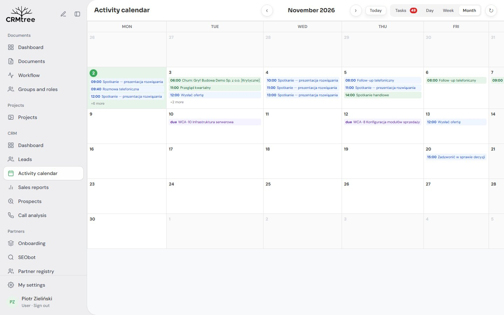
WEBPogled »Naloge«
»Naloge« navaja vaše aktivnosti po roku. Filtri: »Vse vrste«, »pokaži zaprte« in »pokaži brez datuma«. Naloge imajo gumba »Zapri« in »Znova odpri«. Kliknite vrstico, da jo uredite na mestu: naslov, datum, opis in »Dodeli«. Če želite počistiti zaostanek, kliknite »Izberi vse zapadle naloge« in nato »Zapri izbrane naloge«.
MOBILEKoledar na telefonu
Zavihek »Koledar« ima dva pogleda. »Teden« prikazuje od ponedeljka do nedelje vaše sestanke, klice, naloge in projektne naloge; puščici spremenita teden, »Danes« pa skoči nazaj na ta teden. »Naloge« združuje odprte elemente pod »Zapadlo«, »Danes«, »Jutri« in »Pozneje«. Vodje lahko koledar z ikono filtra zožijo na enega prodajalca. Nove elemente dodajate z »+«.
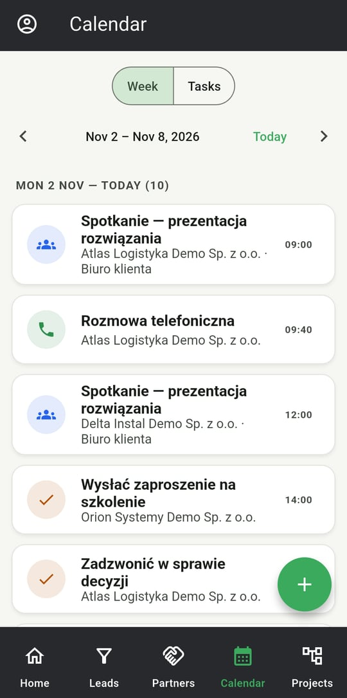
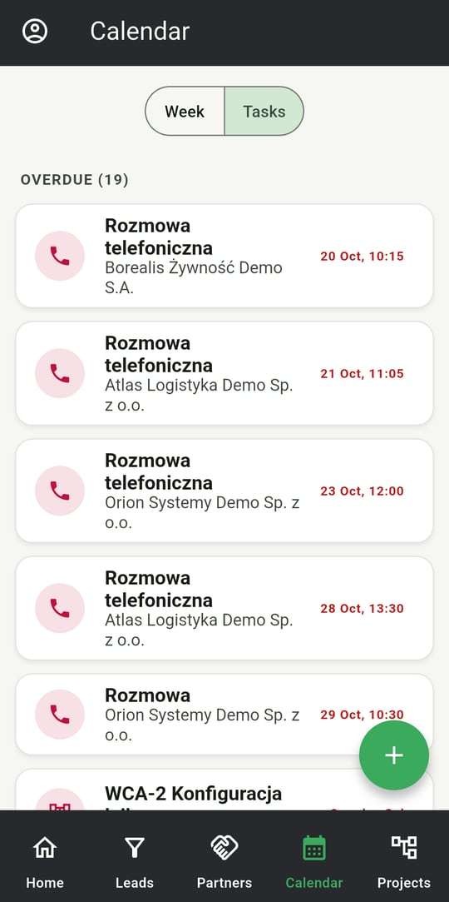
Vprašanja in odgovori
Zakaj ne morem premakniti leada za dve fazi naenkrat? To je zasnovano tako: faze se spreminjajo korak za korakom. Premikajte se skozi njih po vrsti ali pa lead označite kot Izgubljen.
Zakaj ne morem shraniti leada v fazi Kvalifikacija? Od te faze naprej mora imeti lead popolne podatke. Sporočilo nad obrazcem navaja, kaj manjka.
CRMtree ne sprejme davčne številke. Preverite obliko (PL, ki mu sledi 10 številk). Če je oblika pravilna, ima to davčno številko že drug lead ali partner v vašem podjetju; poiščite jo na seznamu leadov ali v registru partnerjev.
Lead je izginil z mojega seznama. Preverite filtre in čip »Filter poročila«. Lead je morda tudi arhiviran (izberite filter faze Arhiv) ali prenesen v uvajanje (poiščite ga med svojimi partnerji).
Gumb »Uredi« je siv. Lead pripada prodajalcu zunaj vaših skupin, zato ga lahko vidite, ne pa spreminjate. Če nadomeščate sodelavca, dobite njegov dostop samo za datume nadomeščanja.
Na telefonu ne dobivam opomnikov. Prijavite se v aplikacijo CRMtree in dovolite obvestila. Opomnik potrebuje rok in gre lastniku aktivnosti.
Ali se bo sestanek iz CRMtree samodejno prikazal v mojem koledarju Google ali Outlook? Ne. Uporabite »Dodaj v koledar« ali shranite dogodek, ki ga CRMtree odpre, ko dodate sestanek. Če se datum pozneje spremeni, koledar posodobite sami.
Ali lahko na telefonu dodam lead s popolnimi podatki? Telefon pokriva bistvo. Davčno številko, vir in druga polja dodajte z urejanjem leada ali v brskalniku.
Zakaj nadzorna plošča na telefonu kaže drugačne številke kot spletna? Različici nekoliko drugače izračunavata lijak in zmage (glejte Domov in Nadzorna plošča na telefonu).
Partnerji
Partner je stranka, s katero vaše podjetje že sodeluje. Register partnerjev združuje podatke CRM (skrbnik stranke, kontakti, pogodba, aktivnosti) in prodajne podatke iz podatkovnega skladišča (promet, marža, transakcije). Partnerji, povezani s skladiščem, imajo značko DWH.
Kot prodajalec vidite svoje partnerje ter partnerje vseh, ki jih trenutno nadomeščate. Vodja prodaje vidi partnerje svoje ekipe. Poročila o partnerjih in analitika za vodje so opisani v poglavju Vodja prodaje.
WEBRegister partnerjev
Pojdite na »Partnerji« → »Register partnerjev«. Partnerji so privzeto prikazani kot kartice; na vrhu preklapljate med »Kartice« in »Tabela«.
- Iskalno polje (»Išči podjetje, kontakt…«) išče po nazivih podjetij, e-poštnih naslovih, davčnih številkah, imenih kontaktov in telefonskih številkah.
- Filtri: »Vsi statusi«, »Vse skupine«, »Vse panoge«. Vodje dobijo tudi »Vsi prodajalci«. »Počisti« jih ponastavi.
- »Samo moji« omeji seznam na partnerje, ki jih imate v lasti.
Vsaka kartica prikazuje status, skupino in skrbnika stranke, pogodbeni promet ter vrstico YTD iz skladišča z bruto prometom in maržo od začetka leta. Rdeči števci opozarjajo na zgrešene klice in neprebrana sporočila. Ikona dokumenta z opozorilnim trikotnikom pomeni, da pogodba še ni povezana. Partnerji, ki jim grozi izguba, dobijo oznako »Tveganje odhoda« z ravnjo in točkami.
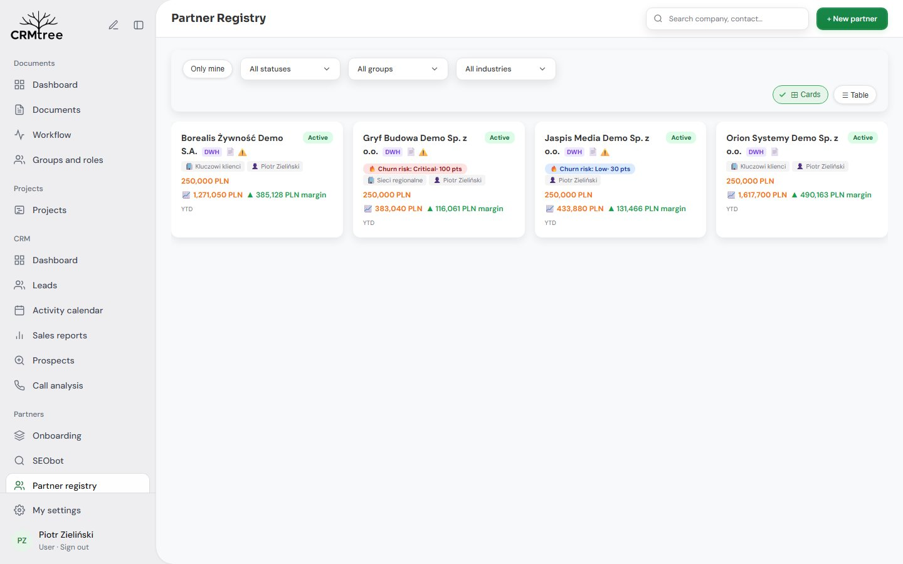
Pogled »Tabela« ima stolpce Podjetje, Status, Panoga, Skupina, Prodajalec, Promet CRM, Promet DWH, Marža DWH, Churn in »Pogodba do«. Kliknite glavo stolpca za razvrščanje. Datum konca pogodbe postane rdeč, ko je do njega manj kot 30 dni.
| Status partnerja | Pomen |
|---|---|
| Uvajanje | Partner je v uvajanju. Prikazan je na tabli Uvajanje, ne v registru. |
| Aktiven | Poteka odnos. Tveganje odhoda se izračuna samo za aktivne partnerje. |
| Neaktiven | Odnos je zadržan. |
| Izgubljen | Stranka je odšla. |
Novi partnerji pridejo v register, ko je uvajanje končano (glejte Uvajanje). Partnerja brez leada za njim doda vodja prodaje ali administrator z gumbom »+ Nov partner«.
WEBKartica partnerja
Kliknite partnerja na seznamu. Glava vsebuje naziv podjetja, datum »Aktiven od«, status, skupino, gumb za klic in »Uredi«. Pod njo ima kartica tri stolpce.
- »Informacije« (levo, zložljivo): ID CRMtree, davčna številka, panoga, spletna stran, skrbnik stranke, datumi pogodbe, letni promet, »Partner Admin«, »Kontakt za pogodbo«, »Dodatni kontakti«, naslov za obračun, »Kontakt za obračun«, »Finančni pogoji«, zapiski, dokumenti in prodajne priložnosti. Polja z oznako DWH prihajajo iz podatkovnega skladišča.
- Aktivnosti (sredina): zavihki »Vse«, »Priloge«, »Naloge«, »Zapiski«, »E-pošta«, »WhatsApp«, »SMS«, »Klici« in »Sestanki«. Na vrhu blok »Projektne naloge« navaja projekte, povezane s tem partnerjem.
- Gradniki (desno): »Prodajni podatki DWH«, »Tveganje odhoda«, »Razčlenitev po produktih«, »Zgodovina sprememb«, dokumenti in trženjska soglasja.
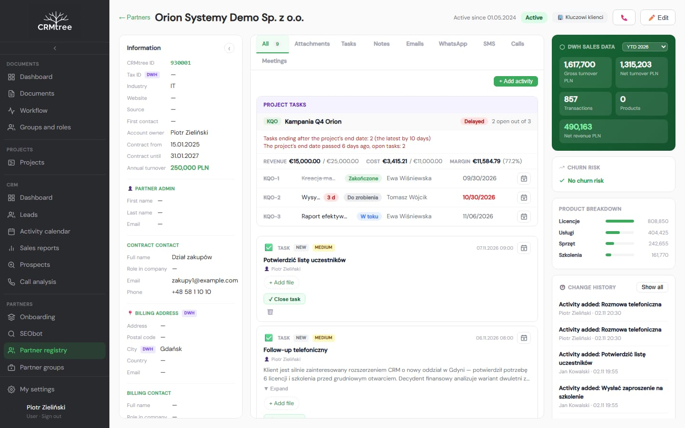
»+ Dodaj aktivnost« ustvari vnos vrste, ki ustreza zavihku, na katerem ste: nalogo na »Vse« in »Naloge«, zapisek na »Zapiski«, klic na »Klici«, sestanek na »Sestanki«. Obrazec deluje povsem enako kot na kartici leada: rok, opomnik, lastnik, prioriteta (za naloge) in opis. Nalogo zaprete z »Zapri nalogo«; ikona koledarja (»Dodaj v koledar«) kopira vnos v Google Calendar, Outlook ali datoteko .ics.
Prodajni podatki in tveganje odhoda
Gradnik »Prodajni podatki DWH« prikazuje številke partnerja iz podatkovnega skladišča. Obdobje izberite s seznama: tekoči mesec, zadnji 3, 6 ali 12 mesecev ali od začetka leta. Ploščice prikazujejo »Bruto promet PLN«, »Neto promet PLN«, »Transakcije«, »Produkte« in »Neto prihodek PLN«. »Razčlenitev po produktih« razdeli bruto promet po skupinah produktov.
Tveganje odhoda ocenjuje, ali se stranka oddaljuje. CRMtree točkuje dva signala:
| Signal | Točke |
|---|---|
| Dnevi od zadnjega naročila | 10–20 dni: 10 · 21–30 dni: 20 · več kot 30 dni: 50 |
| Padec prodaje od predzadnjega do zadnjega meseca | vsaj 30 %: 30 · vsaj 51 %: 50 |
| Raven | Nizko od 21 · Srednje od 51 · Visoko od 71 · Kritično od 91 točk |
Register oceno osveži enkrat na dan, zjutraj. Gradnik »Tveganje odhoda« na kartici jo izračuna ob odprtju kartice in prikaže dneve brez naročila ter padec. Brez tveganja boste videli »Ni tveganja odhoda«.
Gryf Budowa Demo ni naročil že več kot 30 dni (50 točk), njegova prodaja se je prejšnji mesec zmanjšala za več kot polovico (50 točk).
Skupaj 100 točk, raven »Kritično«. Piotr Zieliński, skrbnik stranke, prejme nalogo »Churn: Gryf Budowa Demo… [Krytyczne]« z rokom danes in e-pošto.
Urejanje partnerja
WEB »Uredi« odpre okno »Uredi partnerja« z razdelki za osnovne podatke, Partner Admin, kontakt za pogodbo, dodatne kontakte, kontakt za obračun, naslov za obračun, finančne pogoje, skrbnika stranke in skupino, prodajo in vir, pogodbo in finance, dodatne podatke ter oznake in zapiske. Urejate lahko partnerje, ki jih imate v lasti. Polja z oznako DWH se sinhronizirajo iz transakcijskega sistema in so samo za branje. Vsaka sprememba je zabeležena v »Zgodovini sprememb« kartice.
MOBILEPartnerji na telefonu
Tapnite »Partnerji« v spodnji vrstici. Privzeto seznam prikazuje aktivne partnerje. Vsaka ploščica prikazuje naslednjo aktivnost (rdeče kot »Zapadlo«, če zamuja), datum »Aktiven od«, tveganje odhoda s točkami, promet in maržo YTD ter oznako DWH. Ikona filtra odpre »Filtre«: Status, Skupina in Panoga, za vodje pa še Prodajalec. »Uporabi« jih vklopi, »Počisti« odstrani.
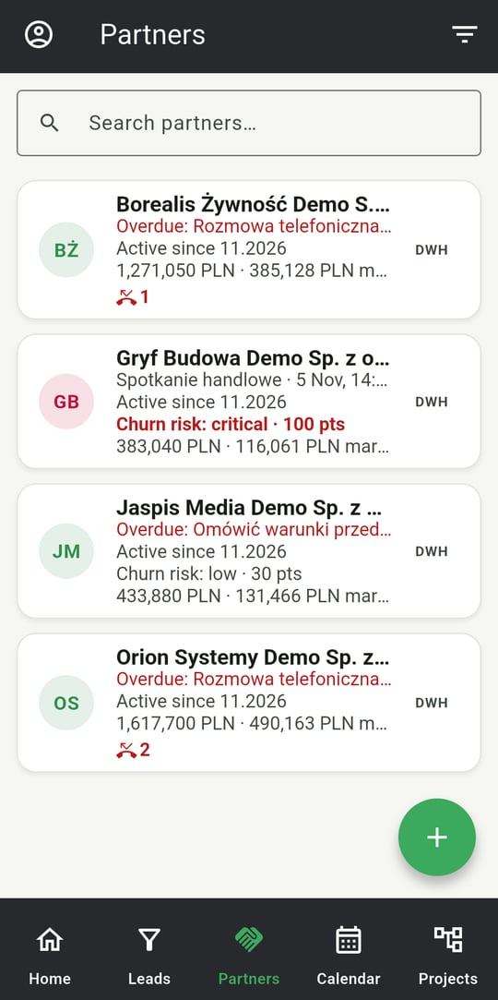
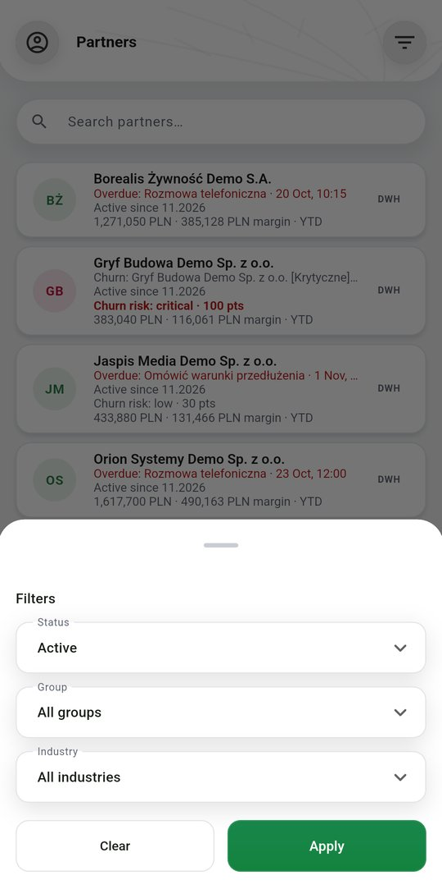
Kartica partnerja ima štiri zavihke:
- »Podrobnosti«: status, aktiven od, panoga, skrbnik stranke, kontakt (klic, SMS ali e-pošta z enim dotikom), dodatni kontakti, zapiski, obračun in dodatni podatki. S svinčnikom na vrhu popravite podatke o podjetju in kontaktu.
- »Finance«: prodaja iz skladišča z izbirnikom obdobja (»Od začetka leta«, tekoči mesec, zadnji 3, 6 ali 12 mesecev), bruto in neto promet, marža, transakcije, razčlenitev »Po produktih« in »Finančni pogoji« z vrednostjo in datumi pogodbe. Ta zavihek je samo za branje.
- »Aktivnosti«: aktivnosti partnerja, ki delujejo enako kot na kartici leada. Gumb »+« doda aktivnost iz katerega koli zavihka.
- »Projekti«: projekti, povezani s partnerjem (če ima vaše podjetje modul Projekti).
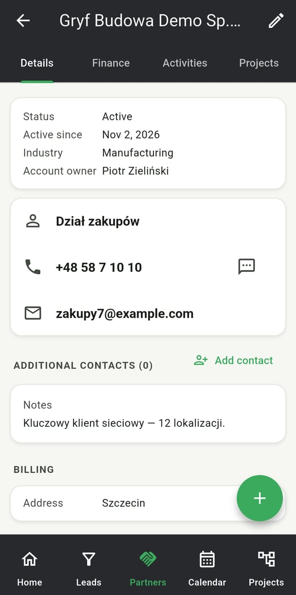
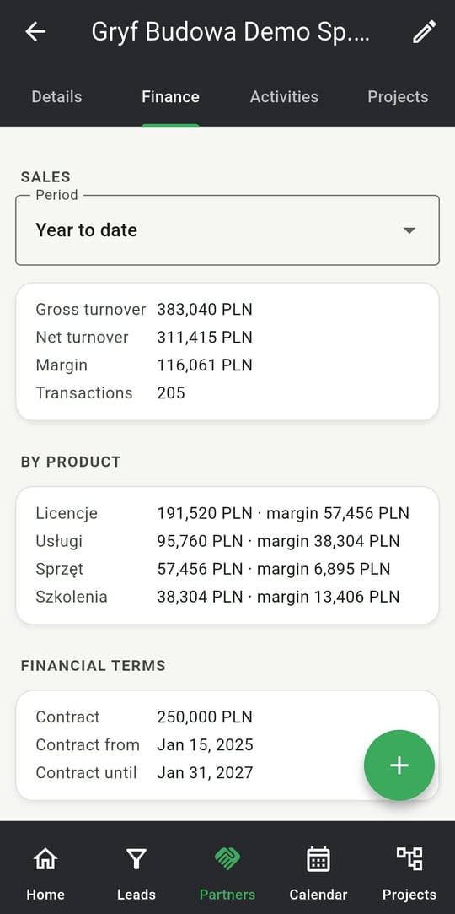
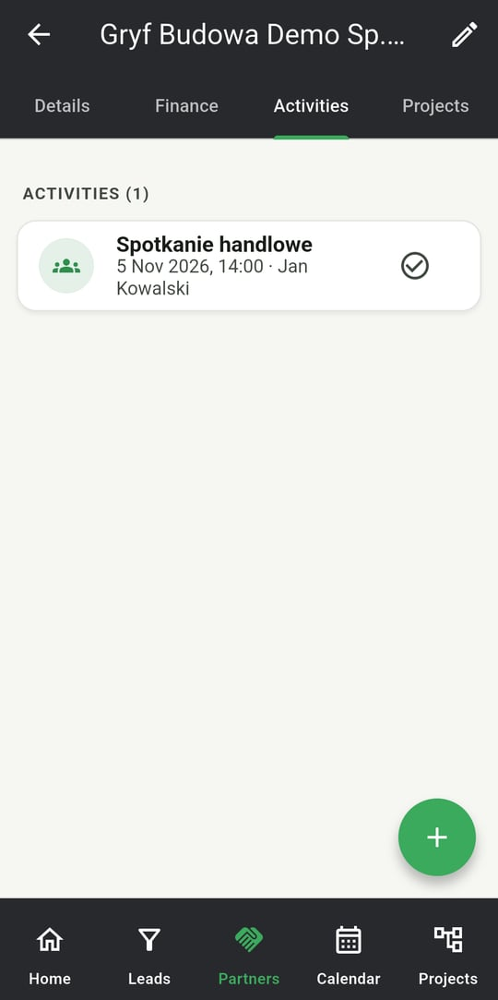
Od leada do partnerja: uvajanje
Ko stranka podpiše, lead prenesite v uvajanje. Lead postane partner s statusom »Uvajanje«, ekipa pa ga vodi skozi štiri korake. Po zadnjem koraku partner postane aktiven in se prikaže v registru partnerjev.
WEBZačetek uvajanja
- Na kartici leada kliknite »Začni uvajanje«.
- Po želji vnesite »Vrednost pogodbe (PLN)« in »Datum podpisa pogodbe«.
- Potrdite. Lead preide v fazo »V uvajanju« in je zaklenjen za urejanje. Partner se prikaže na tabli Uvajanje.
- Če vaše podjetje uporablja predlogo nalog za uvajanje, CRMtree naloge ustvari takoj. Naloge za prvi korak gredo lastniku leada.
WEBTabla »Uvajanje partnerjev«
Pojdite na »Partnerji« → »Uvajanje«. Pogled zožite z iskalnim poljem (»Išči partnerja, davčno številko…«) in seznamom »Vsi partnerji«. Pogledi:
- »Partnerji«: kartica ali vrstica tabele za vsakega partnerja v uvajanju s korakom (npr. »Korak 1/4«), mini vrstico korakov, napredkom nalog in skrbnikom stranke.
- »Kanban«: naloge uvajanja v stolpcih po korakih. Kliknite kartico partnerja, da vidite samo njegove naloge, nove pa dodate z »+ Dodaj nalogo«.
- »Časovnica« in »Koledar«: iste naloge na časovnici in v koledarju.
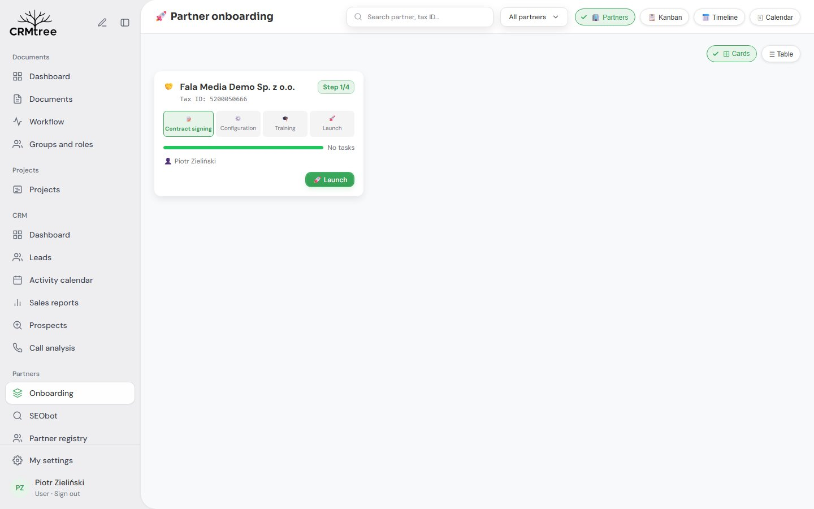
Gumb »Zagon« postane na voljo, ko so vse naloge partnerja opravljene (ali ko jih ni). Do takrat prikazuje ključavnico in število opravljenih nalog. Ko potrdite, partner postane »Aktiven« in preide v register partnerjev; povezava »Profil partnerja« odpre njegovo kartico.
Uvajanje na kartici partnerja
Partner v uvajanju ima na vrhu kartice ploščo s štirimi koraki, vsak pa prikazuje, koliko njegovih nalog je opravljenih. Kliknite korak, da vidite njegove naloge. Nalogo odkljukate s krogcem ob njej; CRMtree zabeleži, kdo jo je opravil in kdaj. Zamujene naloge dobijo rdečo oznako »Zapadlo«.
Ko so vse naloge koraka opravljene, vodja prodaje nadaljuje z »Naslednji korak →«, pri zadnjem koraku pa z »Zaključi uvajanje ✓«. Partner nato postane aktiven, lead pa preide v fazo »Uveden«.
Piotr Zieliński je lead Fala Media Demo prenesel v uvajanje. Partner še nima nalog uvajanja, zato tabla kaže »Korak 1/4« in »Ni nalog«.
»Zagon« je na voljo takoj. Če ekipa doda naloge (recimo usposabljanje), se gumb zaklene, dokler niso opravljene. Po zagonu se Fala Media Demo v registru partnerjev prikaže kot »Aktiven«.
Moje nastavitve in obvestila
WEB Kliknite ikono zobnika, »Moje nastavitve«, na dnu menija. Stran je sestavljena iz kartic:
| Kartica | Za kaj je |
|---|---|
| »Jezik vmesnika« | Jezik aplikacije ali privzeti jezik organizacije. V tem jeziku se pošiljajo tudi e-pošta in opomniki. Sprememba ponovno naloži stran. |
| »Spremeni geslo« | Trenutno geslo, novo geslo (vsaj 8 znakov) in potrditev. S spremembo se vaš račun odjavi iz mobilne aplikacije. |
| »Moj e-poštni podpis« | Podpis prilepite kot HTML in preverite »Predogled«. Doda se vsaki e-pošti, ki jo pošljete s kartic leadov in partnerjev. |
| »E-poštne predloge« | Vaša lastna pripravljena sporočila (»+ Nova predloga«), ki jih vstavite pri pisanju leadu ali partnerju. |
| »Prijavljeni telefoni« | Telefoni, prijavljeni v aplikacijo CRMtree z vašim računom. »Odjava« enega odklopi, na primer izgubljenega. |
| »Softphone – žeton PBX« | Če vaše podjetje uporablja telefonski sistem: prilepite svoj osebni dostopni žeton (Personal Access Token) s plošče ip-pbx.eu in vklopite obvestila o klicih. Nato lahko kličete s kartic leadov in partnerjev v brskalniku. |
| »Obvestila o rokih projektov« | Z modulom Projekti: e-pošta o zapadlih nalogah, spremenjenih rokih in zamujajočih projektih. |
| »Nadomeščanje med odsotnostjo« | Vaš dopust ali druga odsotnost in kdo vas nadomešča. Glejte spodaj. |
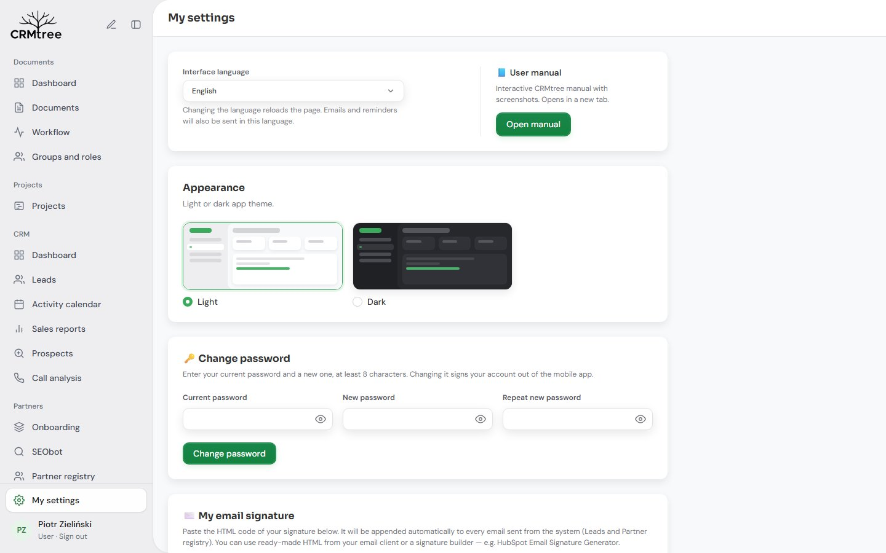
Povezava poštnega predala
WEB Poštni predal povežete s kartice leada ali partnerja, ne v nastavitvah. Odprite zavihek »E-pošta« in kliknite »+ Novo e-sporočilo«. Ob prvi uporabi se odpre okno za prijavo v službeno pošto (ponudnika izbere vaše podjetje). Ko se strinjate, vidite potrditev in obrazec za sporočilo z vašim naslovom kot pošiljateljem. Od tedaj se odgovori strank prikazujejo na karticah leadov in partnerjev, kadar se pošiljatelj ujema z e-poštnim naslovom podjetja ali kontakta. Povezava »Prekini povezavo« v obrazcu poštni predal odklopi.
Nadomeščanje med odsotnostjo
Preden greste na dopust, določite nekoga, ki vas bo nadomeščal. Za čas vaše odsotnosti ima namestnik poln dostop do vaših leadov in partnerjev, z enakimi pravicami, kot jih imate vi.
- V »Moje nastavitve« se pomaknite do »Nadomeščanje med odsotnostjo«.
- Izberite »Razlog«: »Dopust«, »Bolniška odsotnost« ali »Druga odsotnost«.
- Nastavite »Datum od« in »Datum do« (cele dni) ter izberite »Namestnika«. Dodate lahko opombo, npr. »nujne zadeve naj gredo k…«.
- Kliknite »Shrani nadomeščanje«. Namestnik o tem prejme e-pošto.
Tabela odsotnosti prikazuje status: »Prihajajoče«, »Poteka«, »Končano« ali »Preklicano«. »Prekliči« nadomeščanje predčasno konča. »Osebe, ki jih nadomeščam« navaja sodelavce, ki jih nadomeščate. Vodje prodaje lahko registrirajo odsotnosti tudi za člane svoje ekipe.
Piotr Zieliński vpiše odsotnost od 2. do 6. novembra, za namestnico pa določi Ewo Wiśniewsko.
V teh dneh Ewa vidi Piotrove leade in partnerje (med drugim Orion Systemy Demo) in dela z njimi, kot da bi bili njeni. 7. novembra njen dostop samodejno preneha. Opomniki za Piotrove naloge še vedno gredo Piotru, zapisi pa ga ohranijo kot lastnika.
Opomniki in dnevni povzetek
- Opomniki se nastavijo pri aktivnosti (npr. »1 uro prej«). Lastniku aktivnosti pridejo po e-pošti in kot obvestilo v mobilni aplikaciji.
- Naloge od sodelavcev: ko vam nekdo dodeli aktivnost, prejmete e-pošto in obvestilo na telefon.
- Dnevni povzetek: ob delavnikih ob 9:00 prejmete »Vaše naloge«, e-pošto z razdelki »Zapadlo«, »Rok danes«, »Neprebrana e-pošta« in »Brez roka«. Če nimate ničesar na urniku, e-pošta ni poslana.
MOBILEVaš profil v aplikaciji
Okrogla ikona osebe zgoraj levo na vsakem zavihku odpre »Profil«. Na vrhu vidite svoje ime, e-pošto in podjetje. Spodaj:
- »Biometrična prijava«: aplikacijo odklenite s prstnim odtisom ali obrazom namesto z geslom. Aplikacija to ponudi po vaši prvi prijavi. Ko je biometrija vklopljena, se aplikacija odpre na zaslonu »Odkleni CRMtree«; »Prijava z geslom« vam omogoča, da namesto tega uporabite geslo.
- »E-pošta o rokih v projektih«: ista nastavitev kot v spletni aplikaciji (samo z modulom Projekti).
- »Temni način«: temen videz aplikacije. Dokler ga ne spremenite, aplikacija sledi nastavitvi vašega telefona.
- »Jezik«: »Jezik telefona« ali eden od 10 jezikov. Izbira velja samo za ta telefon.
- »Odjava«: odjavi vas iz aplikacije.
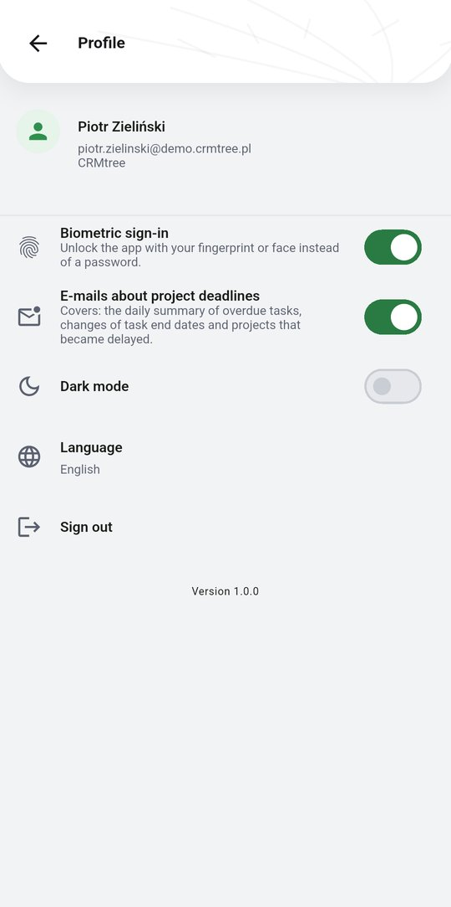
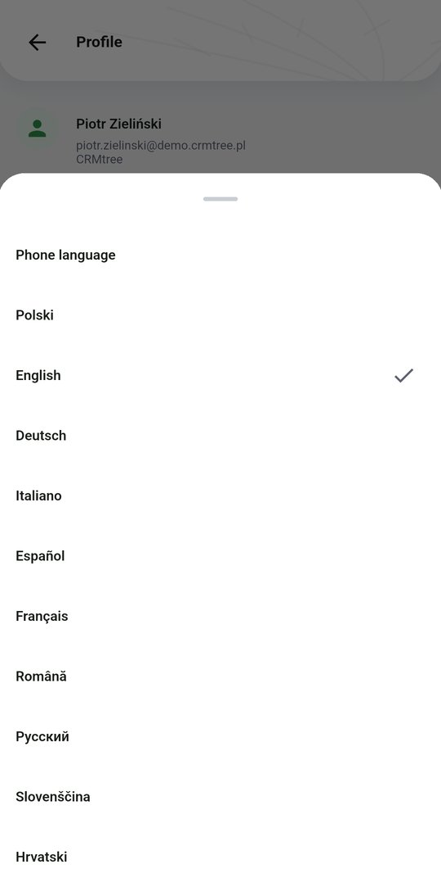
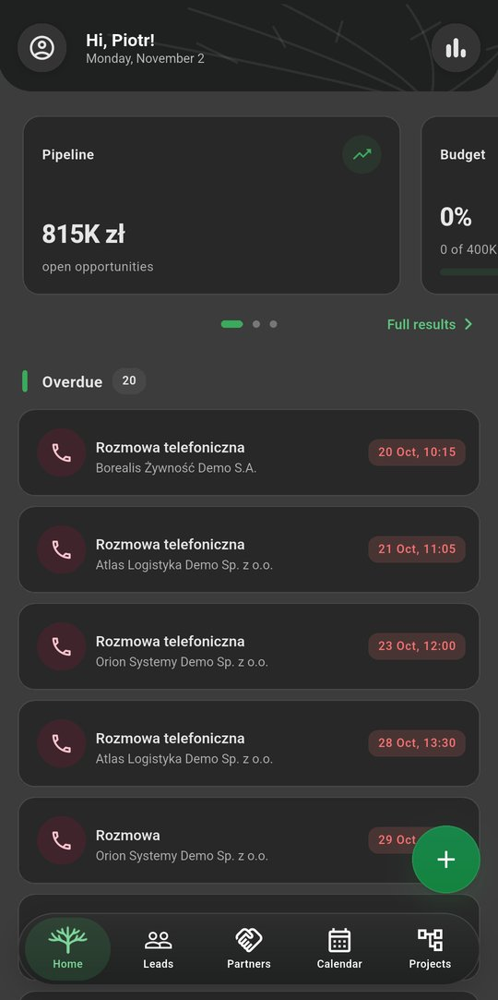
Telefon vas obvešča o opomnikih, nalogah, ki so vam jih dodelili drugi, ter o leadih ali partnerjih, dodeljenih vam. Tapnite obvestilo, da odprete kartico. Ko je aplikacija odprta, se obvestila prikažejo na dnu zaslona z gumbom »Odpri«. Prispejo v jeziku, nastavljenem za vaš račun v spletni aplikaciji.
Vprašanja in odgovori: partnerji in nastavitve
Novega kupca ne najdem v registru partnerjev. Partnerji v uvajanju so prikazani samo na tabli Uvajanje. V register preidejo po zagonu s statusom »Aktiven«.
Zakaj ta partner nima prodajnih podatkov? Prodajni podatki in tveganje odhoda so na voljo samo za partnerje, povezane s podatkovnim skladiščem (značka DWH). Na telefonu boste videli »Ta partner ni povezan s podatkovnim skladiščem.«
Ne morem spremeniti polja z oznako DWH. Ta polja se sinhronizirajo iz transakcijskega sistema. Popravite jih pri viru.
Dobil sem nalogo »Churn: …«. Kaj zdaj? Stopite v stik s stranko, pogovor zabeležite na kartici partnerja in nalogo zaprite. Ocena tveganja odhoda pade, ko partner spet začne naročati.
Register kaže tveganje, kartica pa pravi »Ni tveganja odhoda«. Register oceno osveži enkrat na dan zjutraj, kartica pa jo izračuna sproti. Ujemali se bosta po naslednjem osveževanju.
Ali bo moj namestnik videl moje naloge v svojem koledarju? Ne. Namestnik lahko odpre vaše leade in partnerje (ter aktivnosti na njihovih karticah), toda opomniki in dnevni povzetek še vedno prihajajo vam.
Izgubil sem telefon. V »Moje nastavitve« → »Prijavljeni telefoni« kliknite »Odjava« ob tej napravi. Aplikacija izgubi dostop najpozneje v približno petnajstih minutah.
Ali lahko jezik spremenim samo na telefonu? Da: Profil → »Jezik« v aplikaciji. Jezik e-pošte in obvestil je nastavljen v »Moje nastavitve« v spletni aplikaciji.
Vodja prodaje: kaj vidite in kje poiskati odgovore
Vodja prodaje (vloga v CRM »Vodja prodaje«) dela na istih zaslonih kot prodajalec, vendar s širšim pogledom. Ta del združuje vse, kar potrebujete za oceno rezultatov: nadzorno ploščo, poročila o leadih, uspešnost partnerjev, analitiko, tveganje odhoda in proračune.
| Prodajalec | Vodja prodaje | |
|---|---|---|
| Leadi na nadzorni plošči in v poročilih | samo lastni (in leadi oseb, ki jih nadomešča) | vsa ekipa: člani vseh skupin, v katerih ste |
| Izbirnik prodajalca v poročilih | ni | »Vsi prodajalci« zoži poročilo na eno osebo |
| Lestvica in aktivnost prodajalcev | ni prikazano | »Rezultati prodajalcev«, »Aktivnost prodajalcev« |
| Uspešnost partnerjev, tveganje odhoda | samo partnerji, ki jih ima v lasti | vsi partnerji podjetja |
| »Analitika partnerjev« | ni na voljo | na voljo |
| Proračuni prodajalcev | vidijo svoje v poročilu in na telefonu | proračune nastavljajo pod »Proračuni« |
| »Ustvari naloge« s seznama tveganja odhoda | ni na voljo | na voljo |
Vprašanje → kje poiskati
| Vprašanje | Kje |
|---|---|
| Koliko priložnosti ima moja ekipa in v katerih fazah? | WEB CRM → »Nadzorna plošča«, plošča »Prodajni lijak«; MOBILE Domov → ikona grafikona → »Nadzorna plošča« |
| Kdo ima največji lijak in najboljši delež uspeha? | CRM → »Prodajna poročila«, tabela »Rezultati prodajalcev« |
| Kdo v ekipi je aktiven (klici, sestanki, e-pošta)? | »Prodajna poročila« → »Aktivnost prodajalcev« |
| Od kod prihajajo naši najboljši leadi in zakaj izgubljamo? | »Prodajna poročila« → »Viri leadov«, »Razlogi za izgubo« |
| Ali smo na poti k proračunu? | »Prodajna poročila« → ploščica »Načrtovani proračun (PLN)« |
| Koliko naši partnerji kupujejo in s kakšno maržo? | Partnerji → »Rezultati« |
| Kako se to leto primerja z lanskim? | Partnerji → »Analitika partnerjev« (Obdobje A proti obdobju B) |
| Katere partnerje bi lahko izgubili? | CRM → »Nadzorna plošča« → zavihek »Tveganje odhoda«; kartica »Tveganje odhoda partnerjev« v »Rezultati«; »Tveganje odhoda« na telefonu |
| Kako izgledajo naše skupine partnerjev? | Partnerji → »Skupine partnerjev« |
Prodajna nadzorna plošča ekipe
WEB Meni CRM → »Nadzorna plošča«. Nadzorna plošča ima dva zavihka: »Nadzorna plošča« in »Tveganje odhoda« (rdeča značka šteje partnerje s kritičnim tveganjem). Postavitev je enaka kot pri prodajalcu, toda lijak, priložnosti, naloge in aktivnost zajemajo vso vašo ekipo.
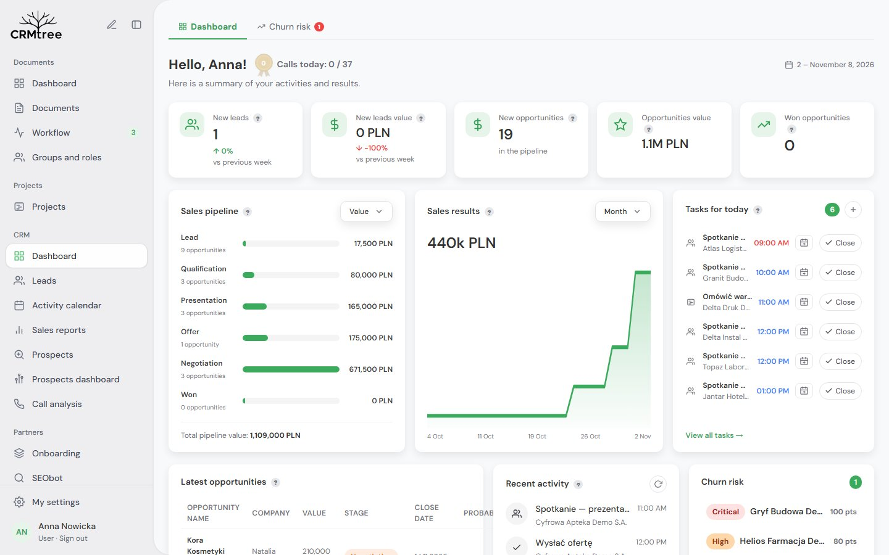
Ploščice na vrhu
| Ploščica | Kaj prikazuje | Čigavi podatki |
|---|---|---|
| »Novi leadi« | Leadi, ustvarjeni ta teden (pon–ned), in sprememba glede na prejšnji teden. | vaši lastni leadi |
| »Vrednost novih leadov« | Skupna vrednost teh leadov in sprememba glede na prejšnji teden. | vaši lastni leadi |
| »Nove priložnosti« | Odprte priložnosti »v prodajnem lijaku«, od faze Lead do faz uvajanja. | ekipa |
| »Vrednost priložnosti« | Njihova vrednost, utežena z verjetnostjo (100.000 PLN pri 70 % se šteje kot 70.000 PLN). | ekipa |
| »Dobljene priložnosti« | Število priložnosti v fazi dobljeno. | ekipa |
Klik na ploščico odpre seznam leadov z ustreznim filtrom. Ikona »?« ob nazivu prikaže kratek namig.
Plošče
- »Prodajni lijak«: ena vrstica na fazo s številom priložnosti in utežene vrednosti. Stikalo »Vrednost« / »Število« spremeni stolpce. Kliknite fazo, da odprete njene leade. Na dnu: »Skupna vrednost lijaka«.
- »Prodajni rezultati«: kumulativna vrednost leadov z datumom zaprtja v zadnjem tednu, mesecu ali četrtletju (»Teden« / »Mesec« / »Četrtletje«) s spremembo glede na prejšnje obdobje.
- »Naloge za danes«: odprti sestanki in naloge vaše ekipe za danes, do šest. Zaprtje naloge zahteva komentar.
- »Najnovejše priložnosti«: pet nazadnje posodobljenih leadov s fazo, datumom zaprtja in verjetnostjo.
- »Zadnja aktivnost«: zapiski, klici in sestanki pri leadih in partnerjih vaše ekipe.
- »Tveganje odhoda«: pet partnerjev z najvišjo oceno tveganja. Povezava odpre zavihek »Tveganje odhoda« (glejte spodaj).
- »Moji telefonski klici« in števec »Klici danes« zajemata samo vaše lastne klice.
MOBILE Nadzorna plošča na telefonu
Zaslon Domov vas pozdravi (»Živjo, Anna!«) in prikaže vaše osebne ploščice »Lijak«, »Leadi« in »Proračun« (odstotek proračuna za ta mesec ali »cilj ni nastavljen«). Te tri ploščice štejejo samo vaše lastne leade. Ikona grafikona v zgornjem desnem kotu (ali dotik ploščic) odpre ekipno »Nadzorno ploščo«:
- »Novi leadi« in »Vrednost novih leadov« ta teden s spremembo glede na prejšnji teden;
- »Leadi« (aktivni) in »Lijak« (odprte priložnosti v polni vrednosti, v PLN);
- »Dobljene priložnosti«: število in vrednost, dobljena ta mesec;
- »Prodajni lijak« s stikalom »Vrednost« / »Število«. Tapnite fazo, da odprete leade v njej;
- »Prodajni rezultati«: dobljena vrednost v obdobju »Teden«, »Mesec« ali »Četrtletje«;
- »Tveganje odhoda«: partnerji z ravnjo in točkami, filter ravni, dotik odpre kartico partnerja;
- »Zadnja aktivnost« z gumbom »Pokaži več«.
Ikona filtra v zgornjem desnem kotu (samo za vodje) odpre izbirnik »Prodajalec«. Izberite osebo in tapnite »Uporabi«: celotna nadzorna plošča preklopi na njene podatke, pika na ikoni pa vas opomni, da je zožena. Izbira se ne ohrani, ko zapustite zaslon.
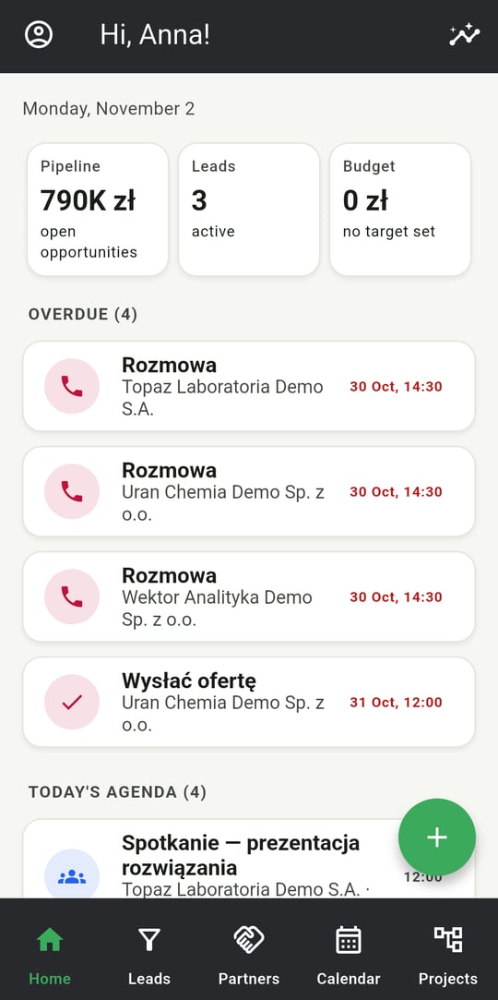
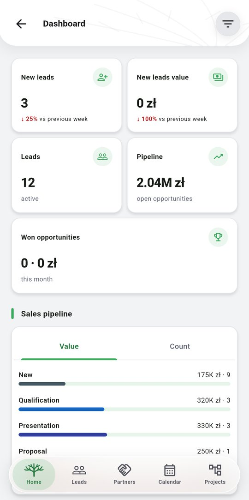
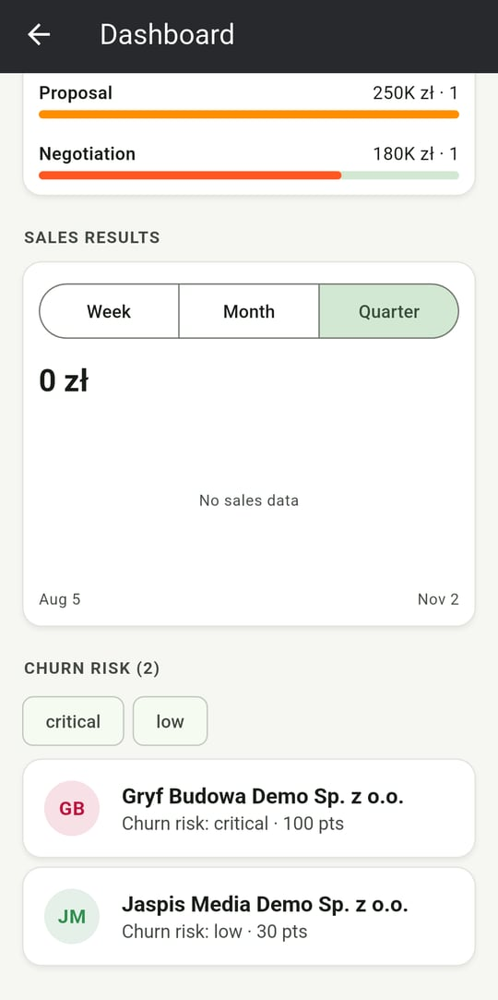
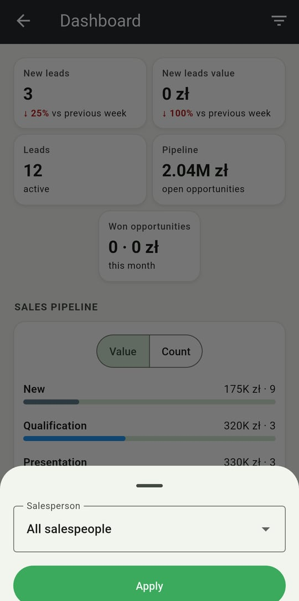
Prodajna poročila (leadi)
WEB Meni CRM → »Prodajna poročila«. Poročilo prikazuje lijak, delež uspeha, lestvico prodajalcev, vire leadov in razloge za izgubo. Na vrhu izberite obdobje in prodajalca; »↻ Osveži« znova naloži podatke.
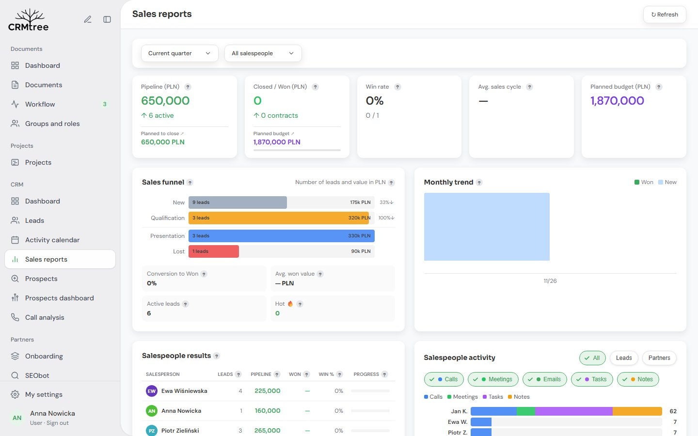
Obdobje in prodajalec
- Obdobje: »Tekoči mesec«, »Tekoče četrtletje« (privzeto), »Zadnji 3 meseci«, »Zadnjih 6 mesecev«, »Tekoče leto (YTD)«.
- Prodajalec: »Vsi prodajalci« ali ena oseba. Izbrana oseba se prikaže kot čip »× Ime«; kliknite ga, da se vrnete na celotno ekipo. Izbira velja tudi za seznam leadov in poročilo o partnerjih, dokler je ne počistite.
Ploščice
| Ploščica | Definicija |
|---|---|
| »Prodajni lijak (PLN)« | Skupna vrednost aktivnih leadov (od Kvalifikacije do faz uvajanja, brez zadržanih leadov), preračunana v PLN po tečaju NBP. Spodaj: število aktivnih leadov in »Načrtovano za realizacijo«, vrednost aktivnih leadov z datumom zaprtja v obdobju. |
| »Zaprto / Won (PLN)« | Vrednost dobljenih leadov in število pogodb. Spodaj: »Načrtovani proračun« z indikatorjem napredka. |
| »Delež uspeha« | Dobljeni ÷ (dobljeni + izgubljeni), v odstotkih, s števili pod njim, npr. »0 / 1«. |
| »Povp. prodajni cikel« | Povprečno število dni od vstopa v Kvalifikacijo (ali od prvega stika) do zmage. »—«, kadar ni dobljeno nič. |
| »Načrtovani proračun (PLN)« | Vsota proračunov prodajalcev za mesece ali četrtletja, ki se prekrivajo z obdobjem. Ko so zmage, se prikaže »% doseženo« (zeleno, ko je proračun dosežen). |
Klik na vrednost ploščice odpre seznam leadov z istim filtrom in čipom, ki pove, od kod je prišel (npr. »Prodajni lijak – vsi aktivni«).
Razdelki poročila
| Razdelek | Kaj prikazuje | Klik |
|---|---|---|
| »Prodajni lijak« | Število leadov in vrednost po fazah z deležem, ki preide v naslednjo fazo. Spodaj: »Konverzija v Dobljen«, »Povp. vrednost dobljenega«, »Aktivni leadi«, »Vroči«. | leadi v fazi |
| »Mesečni trend« | Do 12 mesecev, dva stolpca: »Dobljeni« (oranžen) in »Novi« (moder: leadi, ki so ta mesec dosegli Kvalifikacijo in so še aktivni). | – |
| »Rezultati prodajalcev« (vodja) | Lestvica po dobljeni vrednosti: »Leadi«, »Lijak«, »Dobljeni«, »Uspeh %«, »Napredek« (stolpec deleža uspeha: zelen od 50 %, oranžen od 30 %). | leadi te osebe |
| »Aktivnost prodajalcev« (vodja) | Aktivnosti po osebah v obdobju, razdeljene na klice, sestanke, e-pošto, naloge, zapiske, s stikalom »Vse / Leadi / Partnerji«. | – |
| »Viri leadov« | Krožni grafikon petih najpomembnejših virov ter »Kakovost po viru (win rate)«. | leadi iz vira |
| »Čas v fazi (povp. dni)« | Povprečna starost leadov v vsaki fazi, šteta od prvega stika. Rdeč stolpec označuje fazo, v kateri leadi najbolj zastarajo. | leadi v fazi |
| »Razlogi za izgubo« | Pet najpogostejših razlogov z namigom »Glavni razlog«. | izgubljeni leadi s tem razlogom |
Stolpec »Leadi« v lestvici izpušča leade v prvi fazi (Nov). Poročila ni mogoče izvoziti v datoteko.
Uspešnost partnerjev
WEB Meni Partnerji → »Rezultati«. To poročilo prikazuje, kaj kupujejo vaše obstoječe stranke (partnerji), na podlagi prodajnih podatkov podjetja, ki jih CRMtree bere iz podatkovnega skladišča (DWH). Prodajalci tu vidijo svoje partnerje, vodje pa vse partnerje v podjetju.
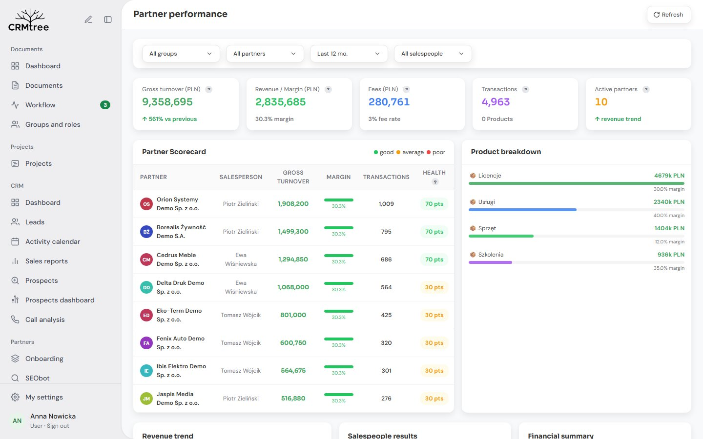
Filtri
- »Vse skupine«: skupina partnerjev (skupine).
- »Vsi partnerji«: en partner iz trenutnega rezultata.
- Obdobje: »Tekoči mesec«, »Zadnji 3 mes.«, »Zadnjih 6 mes.«, »Zadnjih 12 mes.« (privzeto), »YTD« ter »Prejšnji mesec«, »Prejšnje četrtletje«, »Prejšnje leto«.
- »Vsi prodajalci« (vodja): partnerji enega skrbnika stranke.
Ploščice in razdelki
| Element | Kaj prikazuje |
|---|---|
| »Bruto promet (PLN)« | Bruto prodaja v obdobju in sprememba »proti prejšnjemu«, tj. glede na enako število mesecev neposredno pred tem. |
| »Prihodek / Marža (PLN)« | Skupna marža in njen delež v prometu (»30,3 % marže«). |
| »Provizije (PLN)« | Skupne provizije in njihov delež v prometu (»stopnja provizije«). |
| »Transakcije« | Število prodanih artiklov. |
| »Aktivni partnerji« | Partnerji z vsaj eno prodajo v obdobju, s puščico trenda prometa. |
| »Scorecard partnerjev« | Osem partnerjev z najboljšim stanjem: promet, marža (zelena od 15 %), transakcije in »Stanje« v točkah (kako se izračuna). |
| »Razčlenitev po produktih« | Promet in marža po kategoriji produktov. |
| »Trend prihodkov« | Bruto promet v zadnjih 12 mesecih, zadnji mesec v oranžni barvi. |
| »Rezultati prodajalcev« (vodja) | Promet, število partnerjev in marža po skrbniku stranke. Klik odpre Register partnerjev, filtriran na tega prodajalca. |
| »Finančni povzetek« | Bruto promet, prihodek (marža), provizije, % marže in stopnja provizije. |
| »Tveganje odhoda partnerjev« | Pet partnerjev, ki jih bomo najverjetneje izgubili, ne glede na filtre poročila. |
| »Rezultati vseh partnerjev« | Celotna tabela: bruto in neto promet, provizije, prihodek, marža, transakcije, stanje in vrstica »SKUPAJ«. |
Klik na ploščico odpre Register partnerjev s filtri poročila. Klik na partnerja v tabeli odpre njegovo kartico.
Analitika partnerjev: primerjava obdobij
WEB Meni Partnerji → »Analitika partnerjev« (samo vodje in administratorji). »Analitična nadzorna plošča — Partnerji« primerja dve obdobji: Obdobje A (zeleno) in Obdobje B (modro).
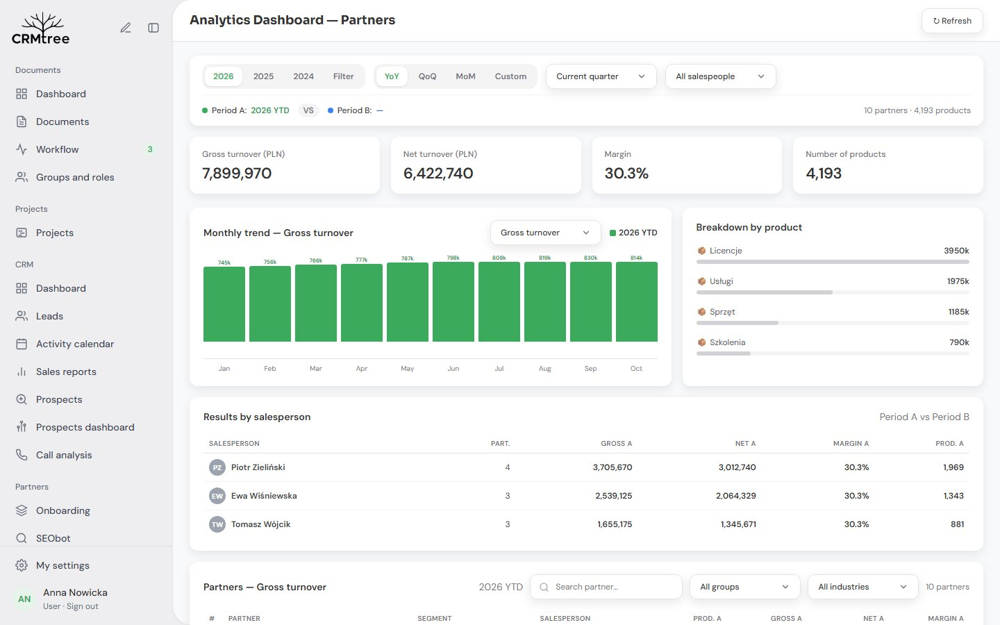
Izbira obdobij
- Cela leta: uporabite gumbe z leti (npr. 2026, 2025, 2024). Vklopite dva: poznejše postane Obdobje A, zgodnejše Obdobje B. Ko se zaslon odpre, je vklopljeno samo tekoče leto, zato primerjave še ni.
- Poljubno obdobje: kliknite »Filter« in s seznama izberite obdobje (npr. »Prejšnje četrtletje« ali »Obdobje po meri…«). To je Obdobje A.
- V načinu Filter izberite način primerjave: »YoY« (isto obdobje leto prej), »QoQ« (tri mesece prej), »MoM« (neposredno prejšnje obdobje enake dolžine) ali »Po meri« (Obdobje B vnesete sami, od–do).
- Po želji zožite na enega prodajalca in kliknite »↻ Osveži«.
Vrstica pod glavo prikazuje »Obdobje A … PROTI Obdobju B …« ter število partnerjev in produktov v Obdobju A.
Kaj boste videli
- Ploščice »Bruto promet (PLN)«, »Neto promet (PLN)«, »Marža«, »Število produktov«. S primerjavo vsaka ploščica prikaže vrednost Obdobja B in spremembo v odstotkih (marža v odstotnih točkah, »o. t.«).
- »Mesečni trend«: meseci A in B drug ob drugem. Mere: bruto promet, neto promet, marža (vrednost), število transakcij.
- »Struktura po produktih«: sedem največjih kategorij s spremembo glede na Obdobje B.
- »Rezultati po prodajalcih«: partnerji, bruto, neto, marža in produkti za A in B z razlikami (Δ).
- »Partnerji — bruto promet«: tabela partnerjev s segmentom (skupino) in prodajalcem, iskalnim poljem ter filtroma »Vse skupine« / »Vse panoge«. Prikazanih je dvajset vrstic; »Pokaži več« doda naslednje.
Tveganje odhoda in stanje partnerjev
CRMtree oceni vsakega aktivnega partnerja, povezanega s prodajnimi podatki, z dvema ocenama: tveganje odhoda (ali bo partner nehal kupovati?) in stanje (ali kupuje pogosto in vsak mesec več?).
Kako se točkuje tveganje odhoda
| Dejavnik | Točke |
|---|---|
| Dnevi od zadnjega naročila | 10–20 dni: +10; 21–30 dni: +20; več kot 30 dni: +50 |
| Padec prodaje od predzadnjega (M-2) do zadnjega polnega meseca (M-1) | padec za 30 % ali več: +30; 51 % ali več: +50 |
Vsota določa raven: Kritično od 91, Visoko od 71, Srednje od 51, Nizko od 21. Partnerji pod 21 točkami niso navedeni. Administrator lahko pragove spremeni.
Kako se točkuje stanje
| Dejavnik | Točke |
|---|---|
| Aktivnost: prodajni zapisi v zadnjih 20 dneh | več kot 5: +50; 2–5: +30; en sam zapis, star 5–10 dni: +20; en sam zapis ob drugem času: +10 |
| Rast prodaje v zadnjem mesecu glede na mesec prej | od 20 %: +20; od 30 %: +30; od 41 %: +40; od 51 %: +50 |
Stanje v razdelku »Rezultati« je zeleno od 61 točk, oranžno od 21, pod tem pa rdeče. Stanje in značke tveganja odhoda na seznamu partnerjev se preračunajo enkrat na dan (privzeto ob 6:00).
Zavihek »Tveganje odhoda«
WEB CRM → »Nadzorna plošča« → »Tveganje odhoda«. Vsaka vrstica prikazuje partnerja s skrbnikom stranke, »dni brez naročila«, »padec M-2→M-1«, raven in točke. Filtri: »Išči partnerja…«, »Vse ravni«, »Vsi prodajalci«. Kliknite vrstico, da odprete kartico partnerja.
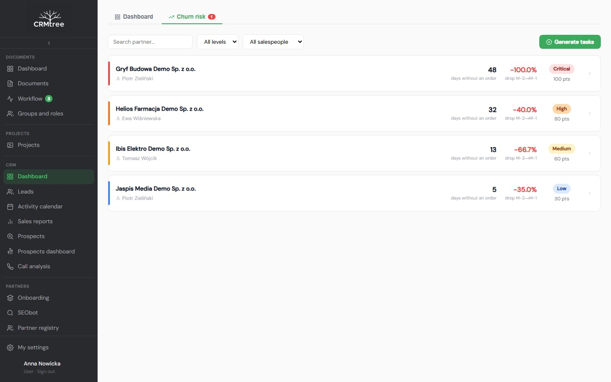
Gumb »Ustvari naloge« (vodje) ustvari nalogo »Churn« za vsakega skrbnika stranke:
| Raven | Rok naloge | E-pošta lastniku |
|---|---|---|
| Kritično | danes | da |
| Visoko | čez 3 dni | da |
| Srednje | čez 7 dni | ne |
Nova naloga ni ustvarjena, dokler ima partner že odprto nalogo »Churn«. Sporočilo povzame rezultat: »Ustvarjenih {n} nalog, preskočenih {m} (že obstajajo).« CRMtree enake naloge ustvari tudi samodejno vsako jutro.
MOBILE Razdelek »Tveganje odhoda« na nadzorni plošči telefona navaja iste partnerje z ravnjo in točkami (npr. »Tveganje odhoda: kritično · 100 točk«). Tapnite enega, da odprete kartico partnerja.
Skupine partnerjev in proračuni
Skupine partnerjev
WEB Meni Partnerji → »Skupine partnerjev«. Vsaka kartica prikazuje naziv, panogo, število partnerjev, skupno vrednost pogodb (PLN ARR), lastnika skupine in prvih nekaj partnerjev. Kliknite kartico, da odprete ploščo s celotnim seznamom partnerjev. Skupine z oznako DWH izvirajo iz prodajnih podatkov.
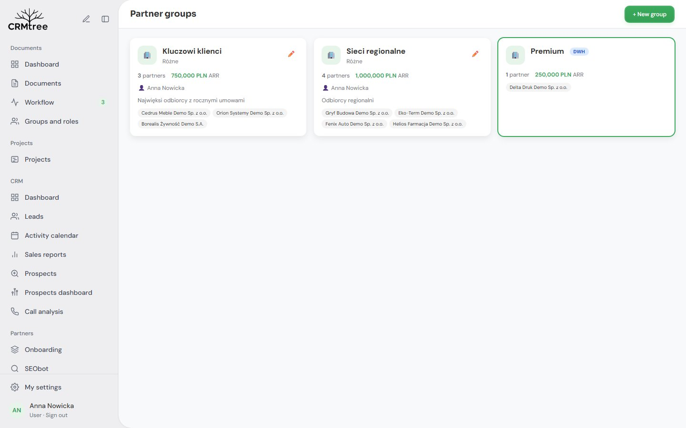
- Vodje skupino ustvarijo z gumbom »+ Nova skupina« (naziv, panoga, opis) in jo urejajo z ikono svinčnika.
- Če želite partnerja uvrstiti v skupino, odprite kartico partnerja: »Uredi« → »Skupina partnerjev«.
- V poročilih je skupina filter »Vse skupine« v razdelku »Rezultati« in stolpec »Segment« v »Analitiki partnerjev«. Če ima partner skupino v prodajnih podatkih (DWH), poročila uporabijo to skupino.
Proračuni prodajalcev
WEB Meni Partnerji → »Proračuni« odpre seznam uporabnikov. Kliknite prodajalca, da v stranski plošči vidite razdelek »Načrtovani prodajni proračuni«.
- Izberite »Leto« in »Vrsto obdobja«: »Mesečno« (12 polj) ali »Četrtletno« (4 polja).
- Vnesite zneske in izberite »Valuto«. »Letna vsota« se posodablja med tipkanjem.
- Kliknite »Shrani proračun«.
Proračuni se primerjajo z vrednostjo dobljenih leadov: v »Prodajnih poročilih« (ploščica »Načrtovani proračun (PLN)« in »% doseženo«) ter na telefonu (ploščica »Proračun« na zaslonu Domov, za tekoči mesec).
Praktični primeri
Anna Nowicka odpre »Prodajna poročila« s »Tekoče četrtletje« in »Vsi prodajalci«. Tabela »Rezultati prodajalcev« prikazuje Piotra Zielińskega s 3 leadi in lijakom 265.000, Ewo Wiśniewsko s 4 leadi in 225.000 ter Anno z 1 leadom in 160.000. Skupaj je to 650.000 PLN, kar se ujema s ploščico »Prodajni lijak (PLN)«.
Piotr ima največ za zaključiti, Ewa največ leadov. Nihče v tem četrtletju še ni ničesar dobil (»Dobljeni« = —). Klik na Piotrovo vrstico odpre njegove leade, »Aktivnost prodajalcev« pa pokaže, koliko klicev in sestankov stoji za temi številkami.
Ewa ima četrtletni proračun 250.000 PLN. Anna v poročilu izbere »Ewa Wiśniewska« s »Tekoče četrtletje«.
Ploščica »Načrtovani proračun (PLN)« prikaže 250.000 (proračun za Q4). »% doseženo« se prikaže, ko Ewa dobi prvi lead, ustvarjen v tem četrtletju. Brez izbranega prodajalca ploščica sešteje proračune vseh prodajalcev.
Ibis Elektro Demo (lastnik Tomasz Wójcik): zadnje naročilo pred 13 dnevi, oktobrska prodaja 66,7 % pod septembrsko.
13 dni = +10 točk, padec nad 51 % = +50 točk. Skupaj 60, raven »Srednje«. Po »Ustvari naloge« Tomasz dobi nalogo Churn za Ibis Elektro z rokom čez 7 dni, brez e-pošte. Gryf Budowa (48 dni, 100-odstotni padec) doseže 100: »Kritično«, naloga z rokom danes in e-pošta Piotru.
V »Scorecard partnerjev« ima Orion Systemy Demo 70 točk, Delta Druk Demo pa 30.
Orion: več kot pet prodajnih zapisov v zadnjih 20 dneh (+50) in rast mesec na mesec nad 20 % (+20) = 70, zeleno. Delta Druk: 2–5 zapisov (+30) in brez rasti (0) = 30, oranžno. Delti ne grozi odhod, vendar tudi ne raste: dobra tema za naslednji klic skrbnika stranke.
V »Analitiki partnerjev« Anna klikne »Filter«, izbere »Prejšnje četrtletje« in način »MoM«.
Obdobje A je »Q3 2026«, Obdobje B pa »Q2 2026«. Ploščice prikazujejo obe vrednosti in spremembo v odstotkih, »Rezultati po prodajalcih« pa pokažejo, kdo je pridobil in kdo izgubil (stolpca Δ). »YoY« bi primerjal Q3 2026 s Q3 2025, kar je uporabno, ko prodajni podatki pokrivajo celotno prejšnje leto.
Vprašanja in odgovori: vodja prodaje
Zakaj »Novi leadi« na nadzorni plošči kaže manj leadov, kot jih ima moja ekipa? V brskalniku ploščici »Novi leadi« in »Vrednost novih leadov« štejeta vaše lastne leade. Leade vaše ekipe za ta teden najdete na nadzorni plošči telefona ali na seznamu leadov.
Zakaj je vrednost lijaka na telefonu drugačna kot v brskalniku? Brskalnik vrednost priložnosti uteži z verjetnostjo; telefon prikazuje polno vrednost odprtih priložnosti.
Lead, dobljen ta mesec, manjka med »Dobljenimi« v poročilu. Zakaj? Prodajno poročilo zajema leade, ustvarjene v izbranem obdobju. Izberite daljše obdobje, na primer »Tekoče leto«.
Ali lahko vidim poročilo za enega prodajalca? Da: uporabite »Vsi prodajalci« v »Prodajnih poročilih«, »Rezultatih« in »Analitiki partnerjev« ali filter »Prodajalec« na nadzorni plošči telefona.
Ali lahko poročilo izvozim v Excel? Ne. Prodajna poročila in poročila o partnerjih nimajo izvoza. Klik na ploščico ali vrstico odpre seznam leadov ali partnerjev z istim filtrom.
Od kod so številke v »Rezultatih« in »Analitiki partnerjev«? Iz prodajnih podatkov podjetja (DWH), povezanih s partnerji v CRMtree. Če je poročilo prazno, prosite administratorja, naj preveri integracijo.
Ali se naloge Churn ustvarjajo samodejno? Da, CRMtree jih ustvari vsako jutro. »Ustvari naloge« to naredi takoj. Dokler je prejšnja naloga še odprta, se podvojene ne ustvarijo.
V meniju ne vidim »Analitike partnerjev«. Na voljo je samo vodjem prodaje in administratorjem, v podjetjih z vklopljeno integracijo prodajnih podatkov.
Projekti
Modul »Projekti« vodi uvedbe in drugo delo po prodaji: naloge z roki, časovnico, klepet ekipe, datoteke in projektne finance. Projekt je lahko povezan z leadom ali partnerjem, tako da prodajalec napredek spremlja kar na kartici stranke. Modul vklopi ponudnik CRMtree; slovarje (statuse, vrste, prioritete) in finance nastavi administrator (glejte 2. del).
Primeri uporabljajo projekt »Wdrożenie CRM Atlas« (ključ WCA), povezan z leadom Atlas Logistyka Demo. Anna Nowicka in Olga Kamińska sta njegova PM, Karol Mazur je pregledovalec, Piotr Zieliński in Ewa Wiśniewska sta udeleženca, Marta Lis pa zunanja udeleženka.
WEBSeznam projektov
V meniju odprite »Projekti«. Na vrhu preklapljate med »Projekti«, »Moje naloge« in »Pregled projektov« (zadnje je na voljo PM, pregledovalcem in administratorjem). Na desni izberete »Odprti«, »Zaprti« ali »Vsi«. Gumb »+ Nov projekt« je prikazan administratorjem in uporabnikom, ki smejo ustvarjati projekte.
Vsaka kartica projekta prikazuje ključ, vašo vlogo, značko »V zamudi«, naziv, opis, datume in razlog za morebitno zamudo (rdeče). Spodaj so števci: opravljene naloge od vseh, število oseb, naloge »po roku« in »ogrožene« ter vaše lastne odprte naloge. PM, pregledovalci in administratorji dobijo tudi vrstico financ: »Prihodek«, »Strošek« in »Marža«, vsak kot realizacija proti načrtu.
Vrstica filtrov deluje kot vsak drug seznam v CRMtree: »Naziv ali ključ projekta«, »PM«, »Začetek projekta«, »Rok projekta«, »Napredek (%)«, »Naloge po roku«, »Ogrožene naloge«, »Zamuda«, »Razlog zamude«, »Moja vloga« ter razvrščanje. Če vidite finance vsaj enega projekta, dobite tudi »Nastale stroške« in »Prihodek«.
Ustvarjanje projekta
- Kliknite »+ Nov projekt«.
- Vnesite »Naziv« (npr. »Wdrożenie CRM Atlas«) ter po želji opis, »Začetek projekta« in »Rok projekta«.
- Kliknite »Ustvari projekt«. Postanete PM, CRMtree pa odpre zavihek »Kartica projekta«, kjer dodate osebe in povezavo s CRM.
Ključ projekta se ustvari iz naziva: začetnice pri več besedah (»Wdrożenie CRM Atlas« → WCA), prve tri črke pri eni besedi. Naloge so oštevilčene iz ključa, WCA-1, WCA-2 in tako naprej, ključ pa se nikoli ne spremeni.
Vloge v projektu
V projekt se lahko pridruži vsak uporabnik vašega podjetja, z vlogo v CRM ali brez nje. PM dodeli vlogo in raven dostopa na kartici projekta.
| Vloga | Kaj lahko počne |
|---|---|
| PM | Vse: naloge, osebe, datume projekta, zaprtje, povezavo s CRM, finance. Lahko nastavi poljuben status naloge. Projekt ima vedno vsaj enega PM. |
| Notranji udeleženec (»Poln« ali »Branje«) | Vidi celoten projekt. S polnim dostopom ureja naloge, dodeljene njemu, premika njihov status po dovoljenih prehodih in nalaga projektne datoteke. Udeleženci z dostopom za branje pregledujejo in klepetajo. |
| Zunanji udeleženec | Nekdo zunaj podjetja z zunanjim računom. Vidi samo naloge, dodeljene njemu, in dela na njih kot udeleženec. |
| Pregledovalec | Vidi vse, vključno s financami (samo ogled). Spreminja status nalog, običajno sprejema ali vrača naloge, ki čakajo na pregled. |
Administratorji podjetja vidijo vsak projekt in ga upravljajo kot PM.
Projektne naloge
Kliknite projekt na seznamu. Glava prikazuje ključ, naziv in značko »V zamudi«. Zavihki: »Naloge« (s številom), »Časovnica«, »Klepet«, »Priloge«, »Finance« (samo PM, pregledovalec in administrator) ter »Kartica projekta«. Označite »Pokaži moje naloge«, da naloge in časovnico zožite na svoje.
WEBNa zavihku Naloge PM in pregledovalci najprej vidijo povzetek po osebah: tri številke ob vsakem imenu, odprte, po roku in ogrožene. Spodaj so filtri nalog, legenda rokov in tabela. Brez filtrov naloge tvorijo drevo z zamaknjenimi podnalogami. Takoj ko filtrirate, razvrščate ali označite »Ploski seznam«, dobite ploščato tabelo s stolpcem nadrejene naloge.
Plošča naloge
Kliknite nalogo, da na desni odprete njeno ploščo. PM ustvari nalogo z »+ Nova naloga« v isti plošči.
| Polje | Pomen |
|---|---|
| Naziv, Dodatni opis | O čem govori naloga. Naziv je obvezen. |
| Status | Seznam ponuja samo statuse, v katere vaša vloga lahko premakne nalogo. |
| Vrsta, Prioriteta | Vrednosti iz slovarjev vašega podjetja (privzeto naloga, sestanek ali mejnik ter štiri ravni prioritete). |
| Nadrejena naloga | Gradi drevo nalog. Spreminja jo samo PM. |
| Datum začetka, Datum konca | Urnik naloge. Ko spremenite obstoječi datum konca, se prikaže polje »Razlog za spremembo roka«. Razlog gre v zgodovino naloge in v e-pošto PM. |
| Opomnik po e-pošti | Na dan roka, 1–3 dni prej ali na poljuben datum. Vse dodeljene osebe ga prejmejo ob 9:00 po e-pošti in kot obvestilo na telefon. Potrebuje datum konca. |
| Dodeljene osebe | Člani projekta. Dodeli jih PM. Na novo dodeljena oseba prejme e-pošto in obvestilo na telefon. |
| Dodatna polja | Polja podjetja, pripeta projektu, npr. obvezna številka pogodbe. |
Nižje v plošči najdete stroške naloge (če projekt uporablja finance), datoteke naloge, »Pogovor o nalogi« in »Zgodovino sprememb«. »Dodaj v koledar« vstavi rok v Google Calendar, Outlook ali datoteko .ics.
Statusi in prehodi
Privzeto naloga napreduje od »za opraviti« prek »v teku« in »v pregledu« do »končano«. Administrator določi, kdo lahko naredi kateri premik. Privzeta nastavitev:
| Kdo | Iz | V |
|---|---|---|
| Udeleženec (dodeljen nalogi) | za opraviti | v teku |
| Udeleženec | v teku | za opraviti ali v pregledu |
| Pregledovalec | v pregledu | končano (sprejem) ali v teku (vrnitev) |
| PM, administrator | katero koli | katero koli |
Naloga WCA-3 »Import danych« Ewe Wiśniewske je še »za opraviti«. Njen seznam statusov ponuja samo »za opraviti« in »v teku«. Ko konča, jo premakne v »v pregledu« in od takrat je njen seznam statusov onemogočen.
Karol Mazur, pregledovalec, nalogo sprejme (končano) ali jo vrne (v teku). Anna Nowicka lahko kot PM kadar koli nastavi katerikoli status, tudi ponovno odpre končano nalogo.
Roki: po roku, ogroženo, projekt v zamudi
CRMtree samodejno označuje naloge glede na datum konca in današnji datum:
| Oznaka | Kdaj |
|---|---|
| Po roku N d | Datum konca je minil in naloga ni končana. |
| Ogroženo | Naloga še ni začeta in njen datum konca pade v prag vašega podjetja (npr. 3 dni). Naloga, ki je že v teku, nikoli ni »ogrožena«. |
| Končano po roku | Naloga je bila končana po datumu konca. |
| Podnaloge po roku | Vsaj ena podnaloga je po roku. |
| +N d / −N d | Premik glede na izvirni datum konca, to je prvi datum konca, ki ga je naloga kdaj imela. Prikazan je prečrtan pod trenutnim. |
Projekt je označen kot »V zamudi«, ko se odprta naloga konča po koncu projekta ali ko je datum konca projekta minil in odprte naloge ostajajo. Razlog je prikazan na seznamu in na kartici projekta. Datumi projekta nikoli ne blokirajo datumov nalog.
- WCA-2 »Konfiguracja lejka«, v teku, rok 30. okt., prvotno 23. okt.: Po roku 3 d, premaknjena za +7 d. Zgodovina prikazuje razlog: pozna dostava podatkov s strani stranke.
- WCA-3 »Import danych«, ni začeta, rok 4. nov.: Ogroženo, ker je 4. nov. znotraj 3 dni. Če bi bila v teku, ne bi imela oznake.
- WCA-6 »Testy akceptacyjne«, rok 27. okt., končana pozneje: Končano po roku.
WCA-5 »Raport końcowy« se konča 21. nov., projekt pa 16. nov., zato je projekt »V zamudi«: »Naloge, ki se končajo po koncu projekta: 1 (najpozneje za 5 dni)«.
E-pošta o rokih: dnevni povzetek zapadlih nalog (za izvajalca in za PM) ter e-pošta PM, ko se spremeni rok naloge in ko projekt zamuja. Izklopite jih lahko v »Moje nastavitve« → »Obvestila o rokih projektov«.
WEBČasovnica
Zavihek »Časovnica« prikazuje naloge kot stolpce (Ganttov diagram) in uporablja iste filtre kot seznam. Merilo preklopite z »Dnevi«, »Tedni« in »Meseci«. Rdeč obris pomeni po roku, jantarni ogroženo, siva sled pa kaže izvirni datum konca. Rdeča navpična črta je danes, črtkana vijolična črta je konec projekta, črtkani konec stolpca pa sega čez njo. Časovnica je namenjena ogledu; kliknite stolpec, da odprete ploščo naloge.
Klepet in priloge
Zavihek »Klepet« je skupni pogovor projekta; objavlja lahko vsak član odprtega projekta. Enter pošlje sporočilo, Shift+Enter doda novo vrstico. Vsaka naloga ima tudi svoj pogovor v plošči naloge.
Zavihek »Priloge« zbira projektne datoteke: »Dodaj datoteko«, iskanje po imenu datoteke, filtri po osebi in datumu dodajanja, »Prenesi« in »Izbriši«. Datoteke lahko dodajajo PM in notranji udeleženci s polnim dostopom. Sprejeti formati vključujejo PDF, dokumente Office, slike, CSV in ZIP.
Kartica projekta in povezava s CRM
Zavihek »Kartica projekta« ima tri dele:
- Podatki projekta: naziv, opis, datumi, razlog zamude. PM ima »Uredi« in »Zapri projekt«. Zaprt projekt je samo za branje in izgine s privzetega seznama; »Znova odpri« ga vrne.
- »Povezava s CRM«: lead ali partner. »Poveži« odpre iskanje (vsaj 3 znake), ki predlaga samo leade in partnerje, do katerih imate dostop v CRM. Izbira shrani povezavo takoj.
- »Osebe v projektu«: oseba, e-pošta, telefon, podjetje, vloga in raven dostopa. PM dodaja osebe, spreminja vloge in jih odstranjuje (odstranjena oseba je odstranjena tudi iz svojih nalog). Spodaj PM pripne »Dodatna polja nalog«.
Moje naloge in pregled projektov
»Moje naloge« zbira vaše odprte naloge iz vseh odprtih projektov, s stolpcem projekta in gumbom za dodajanje v koledar. Označite »Pokaži končane«, da vidite tudi končane naloge. Ta pogled je priročen za ljudi, ki ne delajo v koledarju CRM.
»Pregled projektov« je namenjen PM, pregledovalcem in administratorjem. Ima tri zavihke: »Projekti« (tabela z napredkom, nalogami po roku in ogroženimi, zamudo in stroški), »Naloge« (vse naloge vaših projektov) in »Časovnica« (Ganttov diagram, združen po projektih). Filtri se prenašajo med zavihki.
Zunanji udeleženci
Zunanji račun (tu Marta Lis, trenerka stranke) ima v meniju samo »Projekti« in »Moje nastavitve«. Znotraj projekta vidi samo svoje naloge, klepet, priloge in kartico projekta. Ne vidi ne financ ne CRM.
Projektne finance
WEBKo vaše podjetje uporablja projektne finance, PM in administrator na zavihku »Finance« vodita proračun, stroške in prihodke. Pregledovalec vidi iste podatke z opombo »Samo ogled«. Vsi zneski so neto, vsak projekt pa ima eno samo valuto.
Zavihek ima šest blokov, od zgoraj:
| Blok | Vsebina |
|---|---|
| Ploščice | »Prihodek (realizacija)« proti načrtu, »Strošek (nastali)« proti proračunu, »Marža (realizacija)« z odstotkom in »Preostali proračun«. Negativne vrednosti ali vrednosti nad proračunom postanejo rdeče. |
| »Finančni načrt« | »Valuta projekta« (zaklenjena, ko obstaja prva postavka), »Načrtovani prihodek« in možnost »Udeleženci lahko dodajajo stroške svojim nalogam«. Če je projekt povezan z leadom z vrednostjo, CRMtree ponudi »Uporabi predlagano: …«. Polja se shranijo med tipkanjem. |
| »Proračun po kategorijah« | Proračun, nastalo, načrtovano in »Odstopanje« (proračun minus nastalo) za vsako kategorijo stroškov. Vrstice nad proračunom so označene. |
| »Stroški« | Postavke stroškov s filtri po kategoriji, statusu in nalogi. »+ Dodaj strošek«: datum, status (Nastal ali Načrtovan), kategorija, znesek in valuta, naloga, dobavitelj, številka dokumenta, opis. Strošek v drugi valuti se preračuna po povprečnem tečaju NBP (Narodna banka Poljske) iz delovnega dne pred datumom stroška. |
| »Prihodek« | Postavke, ki so Načrtovane, Fakturirane ali Plačane. Fakturirane in plačane postavke štejejo kot dejanski prihodek. |
| »Stroški nalog« | Drevo nalog z načrtovanim stroškom in nastalimi stroški vsake naloge, vključno s podnalogami. Načrtovani strošek naloge je informativen in ni del proračuna projekta. |
Načrtovani prihodek 120.000 PLN. Proračuni: lastno delo 50.000, podizvajalci 30.000, licence 10.000, skupaj 92.000 PLN. Nastali stroški 82.932,10 PLN. Fakturirani in plačani prihodek 80.000 PLN.
Dejanska marža = 80.000 − 82.932,10 = −2.932,10 PLN (−3,7 %), rdeče. Načrtovana marža = 120.000 − 92.000 = 28.000 PLN (23,3 %). Preostali proračun = 92.000 − 82.932,10 = 9.067,90 PLN. Podizvajalci stanejo 34.500 proti proračunu 30.000, zato je odstopanje −4.500 in vrstica je označena. Potovanja brez proračuna in z 4.691,70 PLN nastalih stroškov so prav tako nad proračunom.
Notranji udeleženci ne vidijo zavihka Finance. Če je PM označil »Udeleženci lahko dodajajo stroške svojim nalogam«, udeleženec doda stroške v plošči nalog, dodeljenih njemu, in vidi samo svoje postavke.
Nabavni računi iz KSeF
Če vaše podjetje prenaša nabavne račune iz KSeF (poljskega nacionalnega sistema e-računov), jih lahko PM z »Dostopom do računov KSeF« pripne stroškom:
- V bloku Stroški kliknite »+ Dodaj račun iz KSeF« (ali »Poveži račun KSeF« ob obstoječem strošku).
- Poiščite račun: privzeto zadnjih 30 dni, s filtri za datum izdaje, prodajalca (naziv ali davčna številka), številko računa in neto znesek. Gumb za sinhronizacijo prenese najnovejše račune.
- Kliknite »Izberi«, nato nastavite kategorijo, status, nalogo in »Pripisani znesek« (privzeto celoten neto znesek; vnesite manj, če račun delite med projekte).
- Kliknite »Poveži račun«. Strošek prevzame datum izdaje, dobavitelja in številko računa. Račun v drugi valuti se preračuna po tečaju NBP iz delovnega dne pred datumom izdaje.
Strošek dobi modro značko KSeF. Klik nanjo odpre predogled računa: prodajalec, kupec, plačilo, postavke in povezave. Prva povezava račun registrira tudi v modulu Dokumenti (če je administrator izbral skupino dostopa za dokumente računov).
MOBILEProjekti na telefonu
V aplikaciji CRMtree je zavihek »Projekti« v spodnji vrstici (če ima vaše podjetje modul). Na vrhu preklapljate med »Moje naloge«, »Projekti« in »Pregled« (za PM in pregledovalce). Vsak seznam ima gumb »Filtri« z razvrščanjem in enakimi filtri kot v spletni aplikaciji; »Počisti filtre« vrne celoten seznam.
Projekt ima zavihke »Naloge« (drevo nalog), »Časovnica«, »Info« (zamuda z razlogom, datumi, opis, lead ali partner, člani z vlogami), »Klepet« in »Finance«. Finance na telefonu so samo za ogled: ploščice, proračun po kategorijah in seznam stroškov. Stroški in prihodki se vnašajo v spletni aplikaciji.
Tapnite nalogo, da vidite njene »Podrobnosti«: status, vrsta, prioriteta, začetek, rok, izvirni datum konca, dodeljene osebe in opis. »Spremeni status« ponuja samo statuse, ki jih vaša vloga dovoljuje. Svinčnik odpre »Uredi nalogo« (naziv, opis, vrsta, prioriteta, datumi); ko premaknete rok, lahko dodate »Razlog za spremembo roka«. Zavihek »Zgodovina sprememb« prikazuje, kdo je kaj spremenil in kdaj, vključno s tem razlogom. PM dodajajo naloge tudi z »+« na zavihku Naloge, podnaloge pa z »Dodaj podnalogo«.
Telefon vas obvesti, ko vam je dodeljena naloga in ko je čas za opomnik naloge. Tapnite obvestilo, da odprete nalogo.
Vprašanja in odgovori: Projekti
Ne vidim »+ Nov projekt«. Ustvarjanje projektov zahteva pravico, ki jo administrator dodeli v plošči uporabnikov.
Naloge ne morem nastaviti na končano. Vaša vloga nima tega prehoda. Nalogo premaknite v pregled; pregledovalec ali PM jo bo zaprl.
Ali lahko izbrišem projekt ali nalogo? Ne. Projekt lahko zaprete (postane samo za branje) in ga pozneje znova odprete. Nalogo, ki je ne potrebujete več, končajte ali ji spremenite nadrejeno nalogo.
Ali lahko stolpec na časovnici povlečem in tako prestavim termin? Ne, časovnica je namenjena ogledu. Datume spremenite v plošči naloge.
Zakaj je moj projekt »V zamudi«, čeprav datum konca še ni minil? Odprta naloga se konča po koncu projekta. Razlog je prikazan na seznamu in na kartici projekta.
Ne vidim zavihka Finance. Vidijo ga samo PM, pregledovalec in administrator, in to samo kadar vaše podjetje uporablja projektne finance.
Imam dostop do KSeF, vendar ni gumba »Dodaj račun iz KSeF«. Račune povezuje PM projekta (ali administrator), ki ima prav tako dostop do KSeF. Prosite, da vas določijo za PM projekta.
Ali lahko dodam strošek na telefonu? Ne, finance v aplikaciji so samo za ogled.
WEBDokumenti
Modul »Dokumenti« hrani pogodbe, NDA in račune skupaj z različicami datotek, prilogami in zgodovino. Sodelavcem dodeljujete naloge poteka dela (branje, urejanje, odobritev, podpis). Vsak dokument pripada eni skupini dostopa (npr. »Sprzedaż« za prodajo, »Księgowość« za računovodstvo). Vidite dokumente skupin, v katerih imate vlogo, ter vsak dokument, pri katerem imate odprto nalogo. Skupine in vloge nastavi administrator (glejte 2. del).
Razdelek »Dokumenti« v meniju vsebuje »Nadzorno ploščo«, »Dokumente«, »Potek dela« (s številom vaših odprtih nalog) in »Skupine in vloge« (pregled skupin). Dokumenti so na voljo v spletni aplikaciji.
Nadzorna plošča dokumentov
Pet ploščic: »Vsi dokumenti« (vse, kar vidite), »V obtoku«, »Podpisani / Zaključeni«, »Potečejo v 30 dneh« (te tri štejejo dokumente v tabeli »Zadnji dokumenti«) in »Moje naloge«. Spodaj sta tabela »Zadnji dokumenti« z odprtimi nalogami pod vsakim nazivom in vaš seznam »Moje naloge«. Kliknite katerikoli element, da odprete dokument.
Seznam dokumentov
Odprite »Dokumente«. Na vrhu sta iskalno polje (»Išči dokumente, oznake…«: številka, naziv, stranke, številka računa) in »+ Nov dokument«. Spodaj so filtri statusa (»Vsi«, »Novi«, »V urejanju«, »V podpisovanju«, »Podpisani«, »Zaključeni«, »Zavrnjeni«), »Vse skupine«, »Vse vrste« in možnost »Pokaži dokumente brez priloženega skena«.
Stolpci: »Številka« (DOC-leto-številka, dodeljena samodejno), »Naziv«, »Vrsta«, »Skupina«, »GDPR«, »Status«, »Aktivne naloge« (vrsta naloge, oseba in rok, rdeče, ko je do roka 7 dni ali manj), »Veljavnost« in »Lastnik«. Datum veljavnosti postane rdeč, ko dokument poteče v 30 dneh ali ko je račun po datumu plačila. Opozorilni trikotnik ob pogodbi s partnerjem pomeni, da še ni povezana s partnerjem v CRM. Seznam prikazuje 50 dokumentov na stran.
Iz registra partnerjev v CRM lahko skočite na seznam dokumentov enega partnerja (trak »Dokumenti partnerja: …« z gumbom »Pokaži vse«).
Statusi dokumentov
| Status | Kdaj |
|---|---|
| Nov | Ko je dokument ustvarjen. |
| V urejanju | Nastavljen samodejno, ko je dodeljena naloga Urejanje. |
| V odobritvi | Nastavljen ročno, ko dokument čaka na odločitev. |
| V podpisovanju | Nastavljen samodejno, ko je dodeljena naloga Podpis ali je dokument poslan v elektronski podpis. |
| Podpisan, Zaključen | Dokument je podpisan ali zaprt. Račun, registriran iz KSeF, je takoj Zaključen. |
| Zavrnjen, Zadržan | Nastavljeno ročno. |
Vse druge spremembe statusa se izvedejo ročno v podrobnostih dokumenta. Zaključek naloge ne spremeni statusa dokumenta.
Ustvarjanje dokumenta
- Kliknite »+ Nov dokument«, da odprete ploščo »Nov dokument«.
- Pod »Osnovni podatki« vnesite »Naziv dokumenta« (npr. »NDA — Helios Farmacja Demo«) in izberite »Vrsto dokumenta«, »Klasifikacijo GDPR«, »Skupino« in »Lastnika« (privzeto vi).
- Izpolnite datume (»Datum podpisa«; »Datum izteka« kot »Nedoločen čas« ali »Določen datum«), »Predmet pogodbe«, »Subjekt 1«, »Subjekt 2«, »Davčno številko pogodbene stranke« in »Državo pogodbene stranke«.
- Po želji dodajte »Kontaktne podatke za pogodbo« in datoteko (PDF ali DOCX, do 50 MB).
- Kliknite »Ustvari dokument«. Dokument dobi številko in status »Nov«.
Dokumente lahko ustvarjate, če imate poln dostop v vsaj eni skupini.
Podrobnosti dokumenta
Kliknite dokument na seznamu. Na desni se odpre plošča z njegovim nazivom, številko in statusom ter temi zavihki:
| Zavihek | Vsebina |
|---|---|
| »Podrobnosti« | Metapodatki (ista polja kot pri ustvarjanju, plus status), dodatna polja podjetja, kontaktni podatki, oznake in »Povezani partnerji« (iskanje partnerjev CRM). S polnim dostopom polja urejate in kliknete »Shrani spremembe«. |
| »Glavni dokument« | Predogled PDF. Drugi formati ponujajo »Prenesi datoteko«; brez datoteke dobite »Naloži datoteko«. |
| »Različice« | Vsaka različica datoteke z datumom in velikostjo. »Naloži novo različico« nadomesti glavni dokument; starejše različice ostanejo na voljo za prenos. |
| »Zgodovina« | Kdo je dokument ustvaril, spremenil ali prenesel ter kdo je dodelil ali zaključil naloge, in kdaj. |
| »Priloge« | Dodatne datoteke ob glavnem dokumentu, vsaka s svojimi različicami. |
| »Potek dela« | Dodeljevanje nalog in seznam aktivnih nalog (glejte spodaj). |
Podnožje ima »Prenesi«, »Izbriši«, »Shrani spremembe« in »Zapri«. Pri dostopu samo za branje so polja zatemnjena.
Potek dela: naloge pri dokumentih
Nalogo dodelite v podrobnostih dokumenta, na zavihku »Potek dela«:
- V polju »Dodeli uporabniku« vnesite ime ali e-pošto in izberite osebo.
- Izberite »Vrsto naloge«: Branje, Urejanje, Odobritev ali Podpis. Po želji dodajte »Rok« in »Sporočilo«.
- Kliknite »Dodeli in pošlji e-pošto«. Oseba prejme e-pošto, naloga pa se prikaže pod »Aktivne naloge« in v njenem poteku dela.
Vsakdo z odprto nalogo vidi dokument na seznamu in ga lahko odpre, tudi zunaj skupine dokumenta. Odprto nalogo prekličete s »Prekliči« na seznamu aktivnih nalog.
Postavka menija »Potek dela« ima dva pogleda:
- »Moje naloge«: kartica za vsako nalogo z vrsto, dokumentom, podatkom o tem, kdo jo je dodelil, skupino, rokom in sporočilom. »Začni« označi, da delate na njej, »Zaključi« jo zapre, »Odpri dokument« pa odpre podrobnosti. Ikona koledarja doda rok v Google Calendar, Outlook ali datoteko .ics.
- »Tabla Kanban«: dokumenti v stolpcih »Čaka« (novi), »V teku« (urejanje, odobritev, podpisovanje), »Zaključeni« (podpisani, zaključeni) in »Preklicani« (zavrnjeni, zadržani). Vsaka kartica prikazuje število nalog, lastnika, skupino ter datum izteka ali plačila; »KMALU« in barva opozarjata na bližajoči se iztek.
Odprte naloge pri dokumentih, ki so po roku, zapadejo danes ali nimajo roka, so navedene tudi v dnevni e-pošti »Vaše naloge«, če jo imate vklopljeno v »Moje nastavitve«.
- Anna Nowicka v prodajni skupini ustvari »Umowa ramowa — Delta Druk Demo«. Status: Nov, stolpec Kanban »Čaka«.
- Dodeli nalogo Urejanje z rokom 5. nov. Status se spremeni v V urejanju (Kanban »V teku«).
- Izvajalec klikne »Začni«, pod »Različice« naloži novo različico in klikne »Zaključi«. Status ostane V urejanju.
- Anna nastavi status V odobritvi, shrani in svojemu vodji dodeli nalogo Odobritev.
Ko je dokument odobren in podpisan, Anna nastavi status Podpisan in nazadnje Zaključen, dokument pa preide v stolpec »Zaključeni«. Če stranka zavrne, Anna nastavi »Zavrnjen« in prekliče odprto nalogo (Kanban »Preklicani«).
Če vaše podjetje uporablja elektronske podpise Signus, ima zavihek Potek dela razdelek »Elektronski podpis (Signus)«. »Začni podpisovanje prek Signus« pošlje dokument podpisnikom (e-poštni naslovi, ločeni z vejicami) in nastavi status »V podpisovanju«. Računi se ne pošiljajo v podpis.
Računi v Dokumentih
Vrsta dokumenta »Račun« preimenuje polja v »Kupec«, »Prodajalec«, »Davčna številka prodajalca«, »Datum izdaje« in »Rok plačila« ter doda blok »Podatki računa«: »Številka računa«, »Stanje plačila«, »Neto znesek«, »Znesek DDV«, »Bruto znesek«, »Valuta« in »Številka bančnega računa«.
| Stanje plačila | Pomen |
|---|---|
| Neplačan | Privzeto za nov račun. |
| Delno plačan | Nastavljeno ročno. |
| Plačan | Nastavljeno ročno, ko je plačan. |
| Zapadel | Prikazano samodejno, ko je datum plačila minil in račun ni v celoti plačan. Datum veljavnosti na seznamu postane rdeč. |
- Račun FV/2026/10/045 (Serwis Druku Demo), rok 27. okt., delno plačan: prikazan kot Zapadel.
- Račun FV/0815/2026 (Biuro Plus Demo), rok 23. okt., plačan: prikazan kot Plačan, ne zapadel.
- Račun FV/77/2026 (Hurtownia Kabli Demo), rok 22. nov., neplačan: prikazan kot Neplačan, z datumom v rdeči, ker je znotraj 30 dni.
Račun z rokom danes še ni zapadel. Nastavitev na »Plačan« odstrani opozorilo ne glede na datum.
Računi iz KSeF. Račun, povezan s projektnim stroškom (glejte Nabavni računi iz KSeF), se samodejno doda v Dokumente, v skupino, ki jo izbere administrator, s statusom »Zaključen«. Njegov glavni dokument je PDF, ustvarjen iz podatkov KSeF, zavihek »Glavni dokument« pa opozarja, da gre za vizualizacijo podatkov KSeF in ne za izvirnik. Vrste takega računa ni mogoče spremeniti.
»Povezave s projekti« v podrobnostih računa navaja projektne stroške, s katerimi je povezan: projekt, naloga ali »celoten projekt«, znesek in status stroška. Člani projekta lahko od tu odprejo nalogo ali finance projekta. PM ročno vnesen račun pripne stroškom prek polja »Dokument računa (neobvezno)« v obrazcu stroška.
Vprašanja in odgovori: Dokumenti
Sodelavec omenja dokument, ki ga ne vidim. Pripada skupini, v kateri nimate vloge. Prosite administratorja za vlogo v tej skupini ali lastnika dokumenta, naj vam dodeli nalogo (npr. Branje).
»Ustvari dokument« je zatemnjen. Izpolnite obvezna polja: naziv, vrsta, klasifikacija GDPR, skupina, subjekt 1 (ali kupec), davčna številka, država in, razen pri računih, predmet pogodbe.
Opravil sem nalogo odobritve, vendar se status ni spremenil. Tako deluje potek dela: naloge ne spreminjajo statusa. Status v podrobnostih nastavi lastnik dokumenta.
Kako zavrnem dokument? V podrobnostih nastavite status »Zavrnjen« in prekličite vse odprte naloge na zavihku Potek dela.
Zakaj ni predogleda? Predogledi delujejo za datoteke PDF. Datoteko DOCX prenesite z »Prenesi datoteko«.
Ali me bo kdo opomnil na pogodbo, ki izteka? Dokumenti, ki jim kmalu poteče veljavnost, so na seznamu prikazani rdeče, v ploščici »Potečejo v 30 dneh« in na tabli Kanban.
Ali so Dokumenti na voljo v mobilni aplikaciji? Ne, modul deluje v spletnem brskalniku.
Potencialne stranke – bogatenje podjetij
Modul Potencialne stranke vam pomaga odločiti, katera podjetja je vredno poklicati. Naložite seznam podjetij (po poljski davčni številki, NIP), CRMtree pa o vsakem zbere podatke iz javnih registrov in z njegove spletne strani. Model umetne inteligence vsako podjetje preveri glede na signale vašega idealnega profila stranke (ICP) in izračuna oceno od 0 do 100. Podjetje z visoko oceno z enim klikom postane lead v CRM.
WEB Potencialne stranke in »Nadzorna plošča potencialnih strank« so na voljo samo v brskalniku. Mobilna aplikacija jih ne prikazuje.
Kdo ga lahko uporablja
- Prodajalci in vodje prodaje delajo s seznamom pod CRM → »Potencialne stranke«, ko jim administrator označi »Potencialne stranke« (Uporabniki → »Dostop do funkcij«).
- Vidite podjetja, ki ste jih uvozili sami, in tista, ki pripadajo skupinam, v katerih imate poln dostop. Administrator vidi vsa.
- »Nadzorna plošča potencialnih strank« je namenjena vodjem prodaje in administratorjem.
- Signale ICP in njihove točke, prag za pretvorbo v lead ter ključe UI nastavi administrator (glejte 2. del).
Seznam potencialnih strank
Zaslon »Prospekti — bogatenje podatkov o podjetjih« ima od zgoraj: gumba »Poišči konkurente« in »Zaženi bogatenje«, kartico »Uvoz podjetij iz CSV«, vrstico filtrov in tabelo.
- Filtri: »Iskanje« (ime, davčna številka ali baza), »Status«, »Score min« in »Score maks« ter datumi »Uvoženo od/do« in »Bogatenje od/do«. »Ponastavi filtre« jih vse počisti. Označite »Prikaži arhiv«, da vključite arhivirana podjetja. Vaši filtri se zapomnijo za naslednjič.
- Vrstica »Prikazano: 24 / 24« navaja število podjetij po filtriranju in skupno število, ki ga vidite.
- Stolpci: »Podjetje« (z izvorno bazo, npr. Targi2026, in povezavo na spletno stran), »Davčna številka«, »Score« (stolpec in številka), »Podružnice«, en stolpec za vsak signal ICP, »Uvoženo«, »Bogatenje«, »Status« in »Dejanja«. Pika signala je zelena (signal prisoten), rdeča (ni prisoten) ali siva (ni podatkov). »?« pod imenom vsakega signala pojasni, kaj pomeni.
- Kliknite glavo »Podjetje«, »Score«, »Uvoženo« ali »Bogatenje« za razvrščanje. Vsaka stran vsebuje 50 podjetij.
Dodajanje podjetij: uvoz CSV
Podjetja dodate iz datoteke CSV ali z »Poišči konkurente« (glejte spodaj). Vsako podjetje se prepozna po poljski davčni številki (NIP).
- Pripravite datoteko s stolpcema
nipinBAZA. BAZA je ime izvornega seznama (npr. »Targi2026«, »Lista-KAM«) in mora biti izpolnjena v vsaki vrstici. - Dodajte morebitne neobvezne stolpce, ki jih imate:
www,krs, naziv, panoga, število zaposlenih, mesto, regija, koda PKD in podatki o odločevalcu (ime, položaj, oddelek, telefon, e-pošta). Stolpecwwwpospeši in poceni iskanje spletne strani. - Kliknite »Izberite datoteko CSV«, nato »Uvozi«.
- Preverite povzetek: »Dodano«, »Preskočeno (dvojniki)«, »Napake«, »Vrstic skupaj«. Vrstice z neveljavno davčno številko (imeti mora 10 številk) so preskočene in navedene pod »Podrobnosti napak«.
Bogatenje in statusi
Nova podjetja se začnejo kot »V čakanju«. Kliknite »Zaženi bogatenje«. CRMtree obdela vsako podjetje v čakanju in vsako podjetje z napako, gumb pa prikazuje napredek, npr. »7/12 podjetij…«. Za vsako podjetje sistem:
- poišče podjetje v registru GUS REGON (po davčni številki), v KRS pa, če je datoteka vsebovala številko KRS;
- poišče in preveri spletno stran podjetja (iz datoteke ali samodejno), nato prebere njeno vsebino;
- pošlje zbrane podatke modelu umetne inteligence, ki za vsak signal ICP odgovori z da ali ne, napiše kratek povzetek in navede ključne kontakte;
- izračuna oceno in rezultat shrani v vrstico.
| Status | Kaj pomeni |
|---|---|
| V čakanju | Čaka na bogatenje. |
| Obogačeno | Podatki zbrani in ocena izračunana. |
| Napaka | Bogatenje ni uspelo. Razlog je v podrobnostih. Naslednji »Zaženi bogatenje« poskusi znova. |
| Ni spletne strani | Spletna stran podjetja ni bila najdena, zato se je bogatenje ustavilo. Naslov vnesite sami z »Re-process«. |
| Zadržano | Odloženo. Bogatenje ga preskoči, dokler ga ne vrnete v čakalno vrsto. |
| Arhiv | Skrito na seznamu. Označite »Prikaži arhiv«, da ga vidite. |
| Lead v CRM | Iz tega podjetja je bil ustvarjen lead. |
Če sistem ne more potrditi, da najdena spletna stran pripada temu podjetju, je ne pošlje umetni inteligenci in zapis ne dobi ocene. Preverite naslov in uporabite »Re-process«.
Branje ocene ICP
Ocena je vsota točk signalov, ki jih je našla umetna inteligenca. Točke vseh aktivnih signalov skupaj dajo 100. Administrator odloča, kateri signali štejejo in koliko. V demo konfiguraciji so:
| Signal | Pomen | Točke (demo) |
|---|---|---|
| Prodajni oddelek | Imenovana prodajna ekipa ali več oseb v prodajnih vlogah. | 25 |
| Individualna ponudba | Podjetje za vsako stranko pripravi ponudbe ali predračune. | 25 |
| Svetovanje / demo | Pred nakupom so svetovanje, analiza potreb ali demo. | 15 |
| Namenska skrb za stranke | Vsako stranko obravnava imenovan skrbnik računa ali KAM. | 15 |
| Javni razpisi | Podjetje kot dobavitelj sodeluje na razpisih. | 5 |
| Mreža partnerjev | Ponudbo podjetja prodajajo neodvisni trgovci ali partnerji. | 5 |
| Ponavljajoča se storitev | Po prodaji sledijo pregledi, servisiranje ali podaljšanja. | 10 |
- Kazen zaradi črnega seznama. Če naziv podjetja, panoga ali PKD vsebuje ključno besedo s črnega seznama (privzeto besede, povezane z veleprodajo), se ocena zniža za določeno število točk (privzeto 15).
- Barva stolpca: zelena od 57, oranžna od 31, rdeča pod tem.
- Prag za lead nastavi administrator (privzeto 45). Pod njim je gumb »→ Lead« onemogočen, njegov opis orodja pa prikazuje oceno in zahtevani minimum.
- Ročna sprememba ocene. Svinčnik ✏️ ob oceni v tabeli odpre polje za število od 0 do 100. Enter shrani, Esc prekliče. Vpisano število nadomesti izračunano oceno, tudi pri pragu za lead. Signali ostanejo nespremenjeni, »Re-process« pa oceno izračuna znova. V oknu »Pregled« »Izračunani rezultat« tedaj prikaže vsoto točk signalov, vpisano število pa je spodaj kot »Shranjeni rezultat«.
Podjetje CRMtree iz baze »Lista-KAM«. Umetna inteligenca je našla Prodajni oddelek (25), Svetovanje / demo (15), Namensko skrb za stranke (15) in Ponavljajočo se storitev (10). Individualna ponudba, Javni razpisi in Mreža partnerjev imajo rdeče pike.
25 + 15 + 15 + 10 = 65 točk. Stolpec je zelen (65 ≥ 57) in »→ Lead« je omogočen (65 ≥ 45). Če bi bila panoga podjetja na črnem seznamu, bi ocena padla na 50, kar še vedno zadošča za ustvarjanje leada.
Podrobnosti podjetja
Kliknite vrstico, da jo razširite. Ločene strani podjetja ni; vse je v razširjeni vrstici:
- »Opomba o preverjanju«: vaša lastna pripomba o podjetju (do 500 znakov). Samodejno se shrani, ko zapustite polje.
- »Povzetek UI«: dva ali trije stavki o podjetju s predlaganim naslednjim korakom.
- »Signali ICP«: zeleni čipi s ✓ so najdeni signali, rdeči čipi z ✗ pa signali, ki niso najdeni.
- Podatki podjetja: »Panoga«, »Lokacija«, »Zaposleni«, kode PKD iz GUS ter spletna stran s stanjem prenosa.
- »Odločovalec«: ime, položaj, e-pošta in telefon. Svinčnik ✏️ ob imenu, e-pošti ali telefonu popravi samo to polje (Enter shrani, Esc prekliče).
- »Ključni kontakti«: osebe, ki jih je našla UI, in ročno dodane osebe. Svinčnik ✏️ ob naslovu odpre urejanje seznama: »+ Dodaj kontakt« doda osebo, koš jo odstrani, polje »Odločovalec« pa označi edinega odločovalca podjetja (oznaka pri drugi osebi jo odstrani s prejšnje). »Shrani« shrani celoten seznam, največ 20 kontaktov. Odločovalec je prvi med kontakti leada, ustvarjenega iz prospekta. »Re-process« izprazni seznam kontaktov in UI jih poišče znova; odločovalec ostane.
- »Dnevnik bogatenja«: kaj je bilo najdeno v GUS, KRS in na spletni strani ter utemeljitev umetne inteligence za vsak signal.
Značke ob nazivu podjetja. Značka »Lead« pomeni, da ima podjetje že lead v CRM (ustvarjen iz potencialne stranke ali z isto davčno številko). Značka »Partner« pomeni, da je v CRM partner s to davčno številko, npr. Orion Systemy Demo. Kliknite značko, da odprete ta zapis.
Meni vrstice »⋮«: »Zadržano« (ali »Vrni v čakalno vrsto«), »Arhiv« (ali »Obnovi iz arhiva«), »Re-process«, »Pregled« in »Izbriši«. Ko označite več vrstic, se ista dejanja prikažejo v vrstici za skupna dejanja (»Izbrano: 3«).
- Re-process podjetje obdela znova od začetka. V pogovornem oknu lahko popravite davčno številko, vnesete spletno stran in stran LinkedIn ter označite »Analiziraj LinkedIn med obdelavo«. Izpolnite samo tisto, kar želite spremeniti, in kliknite »Obdelaj«.
- Pregled prikazuje, s katerimi podatki je delovala umetna inteligenca in kako je bila izračunana ocena.
- Izbriši potencialno stranko trajno odstrani. Lead, ustvarjen iz nje, ostane v CRM.
Pretvorba potencialne stranke v lead
Stolpec »Dejanja« prikazuje en gumb, odvisno od stanja:
| Gumb | Kdaj | Kaj naredi |
|---|---|---|
| »→ Lead« | Podjetje je obogateno in njegova ocena dosega prag. | Odpre pogovorno okno za lead. |
| »↗ CRM« | Iz te potencialne stranke je bil ustvarjen lead. | Odpre lead. |
| »↗ Lead« / »↗ Partner« | Lead ali partner s to davčno številko že obstaja. | Odpre ta zapis. |
- Kliknite »→ Lead«. Odpre se pogovorno okno »Ustvari lead v CRM«.
- Potrdite ali popravite »Davčno številko podjetja«. CRMtree jo uporabi za preverjanje dvojnikov.
- V polju »Dodeli prodajalcu« izberite lastnika. Privzeto je lead vaš.
- Po želji dodajte »Oznako«, npr. »q4-2026«.
- Kliknite »→ Ustvari lead«.
Lead je ustvarjen v fazi »Nov« z virom »Prospekt«. Njegovi zapiski vsebujejo povzetek UI, seznam signalov in oceno. Odločevalec in kontakti, ki jih je našla umetna inteligenca, postanejo kontakti leada. Status potencialne stranke se spremeni v »Lead v CRM«.
Poišči konkurente
»Poišči konkurente« sestavi seznam potencialnih strank iz konkurentov podjetja, ki ga navedete. Vnesite »Ime podjetja« in »Davčno številko podjetja« ter kliknite »Išči«. Umetna inteligenca predlaga do 15 podjetij v isti panogi in vsako preveri v GUS.
- Davčna številka, preverjena v GUS, ima ✓. Če manjka, jo vnesite ali uporabite »Poišči davčno št.«.
- Stolpec »Zapisi« pove, ali je podjetje že med vašimi potencialnimi strankami (P), leadi (L) ali partnerji (PA). Podjetja, ki jih še nimate, so označena z »novo«.
- Označite podjetja, ki jih želite, in kliknite »Dodaj izbrano in zaženi bogatenje«. Gredo v novo bazo, poimenovano po vaših začetnicah in datumu, bogatenje pa se začne takoj.
Ta funkcija potrebuje ponudnika umetne inteligence, ki ga je administrator nastavil za »Poišči konkurente«.
Nadzorna plošča potencialnih strank
CRM → »Nadzorna plošča potencialnih strank« (vodje prodaje in administratorji). Vodja prodaje vidi podatke svoje ekipe; administrator vidi celotno podjetje. Grafikoni so vodoravni stolpci, vsaka barva pa predstavlja razpon ocene, štet od praga za lead (npr. 45–54, 55–64 … 85–94).
| Plošča | Kaj prikazuje | Filtri |
|---|---|---|
| »Leadi na prodajalca (po score prospekta)« | Leadi, ustvarjeni iz potencialnih strank za vsakega prodajalca v obdobju, razdeljeni po oceni potencialne stranke. | obdobje, faza leada |
| »Prospekti v bazi (po score in statusu)« | Današnja slika: koliko podjetij je potencialnih strank, leadov, zadržanih ali arhiviranih, razdeljeno po oceni. | status, »Prikaži score=NULL«, »Prikaži < 45«, baze |
| »Obogačeni prospekti na bazo (score po skupinah)« | Porazdelitev ocen v vsaki izvorni bazi (npr. Lista-KAM, Targi2026). »brez« pomeni, da ocene še ni. | »Prikaži < 45«, »Išči baze…« |
| »Klici PBX na prodajalca« | Telefonski klici prodajalcev v obdobju, po statusu klica. | obdobje, smer, status, »≥ 35 s« |
Obdobja vključujejo »Ta teden«, »Ta mesec«, »To četrtletje«, »To leto (YTD)«, prejšnja in »Po meri…«.
Piotr Zieliński uvozi seznam s sejma kot bazo »Targi2026«. Po »Zaženi bogatenje« Borowik Maszyny Demo doseže oceno 90. Povzetek UI kaže na prodajni oddelek in svetovanje pred prodajo, med kontakti pa je direktor s telefonsko številko. Piotr klikne »→ Lead« in lead obdrži dodeljen sebi.
V CRM se v fazi »Nov« prikaže lead »Borowik Maszyny Demo« z dvema kontaktoma in povzetkom UI v zapiskih. Potencialna stranka prikazuje »Lead v CRM« in značko »Lead«, na »Nadzorni plošči potencialnih strank« pa Anna Nowicka vidi Piotrov novi lead v razponu 85–94.
Vprašanja in odgovori: Potencialne stranke
V meniju ne vidim »Potencialnih strank«. Prosite administratorja, naj v vašem uporabniškem profilu pod »Dostop do funkcij« označi »Potencialne stranke«.
Ali lahko ročno dodam eno samo podjetje? Uvozite datoteko CSV z eno samo vrstico ali uporabite »Poišči konkurente«.
Ali se bogatenje izvaja samodejno? Ne, zaženete ga z »Zaženi bogatenje«. Izjema so podjetja, dodana prek »Poišči konkurente« in »Re-process«, ki se obdelajo takoj.
Zakaj je gumb »→ Lead« zatemnjen? Podjetje še nima ocene ali je njegova ocena pod pragom administratorja. Z miško se pomaknite nad gumb, da vidite oceno in minimum.
Podjetje kaže »Ni spletne strani«. Kaj zdaj? V meniju »⋮« izberite »Re-process«, vnesite naslov spletne strani in kliknite »Obdelaj«.
Ali izbris potencialne stranke izbriše tudi njen lead? Ne. Lead ostane v CRM.
Ali so potencialne stranke v mobilni aplikaciji? Ne, modul deluje samo v brskalniku. Ko iz potencialne stranke ustvarite lead, ta lead vidite na telefonu.
Analizator klicev
Analizator klicev prebere zapiske vaših telefonskih klicev s podjetjem in oceni, kako zainteresirano je za nakup. Za vsako podjetje (ujemanje po davčni številki) dobite oceno potenciala od 0 do 100, povzetek, pozitivne signale, ugovore in datum naslednjega stika. Če je potreben povratni klic, CRMtree sam ustvari nalogo »Follow-up telefoniczny« pri partnerju ali leadu.
WEB Analizator deluje v brskalniku, pod CRM → »Analiza klicev«. Postavko menija vidite, ko vam administrator označi »Analizator klicev«. Naloge za nadaljnje delo, ki jih ustvari, se prikažejo tudi na vašem telefonu, v koledarju in na kartici leada ali partnerja.
Od kod prihajajo zapiski
- Softphone CRMtree. Ko končate klic, začet s kartice leada ali partnerja, se odpre plošča »Pogovor končan«. Pri sprejetem klicu CRMtree od telefonskega ponudnika pridobi prepis in ga vstavi v zapisek, ki ga lahko urejate. Kliknite »Shrani z zapiskom«. Zapisek se doda aktivnostim leada ali partnerja in, če ima podjetje 10-mestno davčno številko, pošlje analizatorju, ki ga takoj oceni. »Brez zapiska« zapre ploščo, ne da bi karkoli shranil.
- Uvoz CSV zapiskov iz drugega sistema: gumb »Uvoz CSV«. Stolpec z davčno številko je obvezen. Neobvezni stolpci vključujejo naziv podjetja, mesto, začetek in konec klica, prodajalca in dva stolpca z zapiski. Vrstice za isto podjetje se združijo. Po uvozu kliknite »Analiziraj (N)«, da ocenite podjetja v čakanju.
Vsaka analiza upošteva vse dosedanje klice s podjetjem, zato nov klic ocenitev posodobi.
Seznam analiz
Zaslon »Analiza klicev« ima eno podjetje na vrstico. Vrstica napredka nad filtri pove, kdaj analiza teče (npr. »Končano 4 / 4 podjetja«).
- Filtri: iskanje po podjetju ali davčni številki, status, razpon ocene, »Vsi follow-upi« (»Follow-up potreben«, »Follow-up opravljen«), prodajalec, povezave (Lead, Partner, Potencialna stranka, »Brez povezav«), datuma prvega in zadnjega klica ter gumbi za hiter datum nadaljevanja: »Danes«, »Danes+Jutri«, »Naslednja 2 dneva«, »Ta teden«, »Po meri…«.
- Stolpci: »Podjetje«, »Davčna številka«, »Prodajalec«, »Klici«, »Prvi klic«, »Zadnji klic«, »Potencial«, »Status«, »Analizirano«, »Povezave«.
- Gumbi v stolpcu »Povezave« odprejo lead, partnerja ali potencialno stranko z isto davčno številko.
- Meni »⋮«: »Zadrži«, »Arhiviraj«, »Znova analiziraj«, »Pregled« in »Izbriši«. Ko označite vrstice, se ista dejanja prikažejo v vrstici za skupna dejanja.
| Status | Kaj pomeni |
|---|---|
| Čaka | Novi zapiski čakajo na analizo. |
| Analiziranje... | Umetna inteligenca klice ravno ocenjuje. |
| Končano | Rezultat je pripravljen. |
| Napaka | Analiza ni uspela. Razlog je v razširjeni vrstici. »Analiziraj (N)« ali »Znova analiziraj« poskusi znova. |
| Zadržano | Ročno odloženo. |
| Arhivirano | Arhivirano. |
Rezultat analize
»Potencial« ocenjuje, kako verjetno bo podjetje kupilo. »?« v glavi stolpca pojasni razpone:
| Potencial | Ocena | Barva |
|---|---|---|
| 0–20 | Brez zanimanja | rdeča |
| 21–40 | Nizko zanimanje | rdeča |
| 41–60 | Zmerno zanimanje | oranžna |
| 61–80 | Močno zanimanje | rumena |
| 81–100 | Pripravljeno na nakup | zelena |
Kliknite vrstico za podrobnosti:
- povzetek: odnos stranke in priporočeni naslednji korak,
- »Pozitivni signali« in »Ugovori« kot seznam s pikami,
- število klicev ter datumi zadnjega klica in uvoza,
- »Prepis klicev«: zapiski vsakega klica, najnovejši na vrhu.
Umetna inteligenca piše v jeziku pogovora, zato klici v poljščini dobijo poljski povzetek, kot v demo podatkih. »Pregled« v meniju »⋮« v enem oknu prikaže oceno, nadaljnje delo, status in zapiske, na katerih temelji.
Follow-upi in naloge v CRM
Ko klici pokažejo, da se morate stranki spet oglasiti, se v stolpcu »Status« prikaže čip »Follow-up · 05.11«. Datum izhaja iz dogovora na klicu (na primer »čez dva tedna« ali »v četrtek«) in je vedno delovni dan. Če klic ne poda datuma, je follow-up nastavljen 5 delovnih dni po zadnjem klicu.
- CRMtree ustvari nalogo »Follow-up telefoniczny« s povzetkom umetne inteligence kot opisom. Gre partnerju s to davčno številko ali, če ga ni, leadu in je dodeljena prodajalcu s klica.
- Naloga ima opomnik: ob roku, če je follow-up v 3 dneh, sicer dan prej.
- Kliknite čip, da follow-up označite kot opravljen (postane prečrtan). Ponovni klik razveljavi.
- Če lead ali partner s to davčno številko ne obstaja, je follow-up prikazan samo na seznamu analiz.
Klic, ki je prišel do govorne pošte, ali kjer ni bilo pravega pogovora, ne dobi follow-upa.
Primeri iz demo podatkov
Piotr Zieliński je imel s podjetjem 3 klice (21.10–02.11.2026). Stranka je ponudbo pregledala z upravo, proračun je odobren, odvetnik pa preverja predlogo pogodbe.
Potencial 88 (zeleno, »Pripravljeno na nakup«). Ugovori: pregled pogodbe in povezava s sistemom za izdajanje računov. Follow-up v četrtek 05.11. Pri leadu Atlas Logistyka Demo se je pojavila naloga »Follow-up telefoniczny«, dodeljena Piotru.
Davčna številka podjetja Orion pripada tako partnerju kot potencialni stranki, zato stolpec »Povezave« prikazuje oba gumba.
Potencial 78 (rumeno, »Močno zanimanje«). Naloga »Follow-up telefoniczny« za 06.11 je šla partnerju Orion, ker imajo partnerji prednost pred leadi.
Borealis Żywność Demo ima potencial 35, njegov follow-up 03.02 je že označen kot opravljen (prečrtan čip). Iskra Energia Demo: en sam klic, ki je šel na govorno pošto.
Borealis ostane na seznamu z nizko oceno in se prikaže pod »Follow-up opravljen«. Iskra je dobila 5 in nima follow-upa, ker se nihče ni oglasil.
Vprašanja in odgovori: Analizator klicev
V meniju ne vidim »Analize klicev«. Prosite administratorja, naj v vašem uporabniškem profilu pod »Dostop do funkcij« označi »Analizator klicev«.
Ali CRMtree posname klice? Ne. Analizator dela z besedilom: prepisom od telefonskega ponudnika, ki ga lahko pred shranjevanjem urejate, ali zapiski, ki jih uvozite.
Po klicu se ni pojavil noben prepis. Zelo kratki klici (pod 5 sekund) nimajo prepisa in videli boste »Prepis ni na voljo — zapisek vnesite ročno«. Vnesite zapisek in kliknite »Shrani z zapiskom«.
Uvozil sem zapiske, vendar se ni zgodilo nič. Po uvozu kliknite »Analiziraj (N)«. Sam uvoz analize ne zažene.
Vrstica kaže »Napaka«. Razširite jo, da vidite razlog. Če je razlog nastavitev umetne inteligence, obvestite administratorja, nato uporabite »Znova analiziraj«.
Ali je analizator v mobilni aplikaciji? Ne. Naloge »Follow-up telefoniczny« se skupaj z drugimi nalogami prikažejo na vašem telefonu.
2 Administrator
Uporabniki, vloge in vidnost podatkov, nastavitve aplikacije, uvoz podatkov in dnevniki, s primeri konfiguracije in kontrolnim seznamom za uvedbo.
Kako deluje
Administrator podjetja (račun z vlogo »Administrator«) ustvarja račune, odloča, kdo vidi katere podatke, ter konfigurira šifrante, faze lijaka in module. Zasloni administratorja so v razdelku »Administracija« stranske vrstice, ki ga vidijo samo administratorji.
Kje najti nastavitve
| Postavka menija | Za kaj je |
|---|---|
| »Uporabniki« | Računi, vloge, skupine, dovoljenja za vidnost, dostop do funkcij, proračuni prodajalcev. |
| »Nastavitve aplikacije« | Globalni parametri, ponudniki UI, parametri CRM, faze leadov, dodatna polja, šifranti, predloge uvajanja, namigi, ICP, projekti. |
| »Uvoz CSV« | Uvoz in izvoz leadov, partnerjev in metapodatkov dokumentov. |
| »Revizijski dnevniki« | Kdo je kaj spremenil in kdaj. |
| »Številke PBX« | Žetoni telefonije (softphone) za prodajalce. Samo z modulom telefonije. |
| »Upravljanje podatkov« | Trajni izbris zapisov, čiščenje testnega okolja, izvoz in uvoz nastavitev. |
| »Skupine in vloge« (v razdelku »Dokumenti«) | Skupine uporabnikov: ekipe in oddelki. |
| »Skupine partnerjev« (v razdelku »Partnerji«) | Združevanje strank, na primer po verigi ali segmentu. |
Model pravic
O tem, kaj uporabnik vidi in lahko počne, odločajo štiri stvari:
| Element | Kje se nastavi | Kaj nadzoruje |
|---|---|---|
| Vloga administratorja | Kartica uporabnika | Poln dostop do vseh podatkov in nastavitev podjetja. |
| Vloga v CRM: Prodajalec ali Vodja prodaje | Kartica uporabnika | Dostop do modula CRM in to, katere leade in partnerje uporabnik vidi. V mobilno aplikacijo CRMtree se lahko prijavijo samo osebe z vlogo v CRM. |
| Skupine (dostop »Branje« ali »Poln«) | »Skupine in vloge« + kartica uporabnika | Ekipa vodje prodaje, dostop do dokumentov skupine, dostop do Potencialnih strank. |
| Dovoljenja za vidnost CRM | Kartica uporabnika | Dodatna vidnost leadov ali partnerjev, ki jih imajo v lasti člani izbrane skupine. |
Poleg tega so tu še moduli, ki jih vklopi CRMtree (npr. Potencialne stranke, Analiza klicev, Projekti), in dostop do funkcij, dodeljen posameznikom. Moduli so navedeni v poglavju Moduli, ki jih vklopi CRMtree.
Uporabniki
Administracija → »Uporabniki« odpre »Upravljanje uporabnikov«. Nad tabelo imate iskalno polje in filtre za skupino (»Vse skupine«) in status (»Vsi uporabniki«, »Samo aktivni«, »Samo neaktivni«). Tabela prikazuje uporabnika (z značko ADMIN, kjer je to ustrezno), e-pošto, skupine z ravnjo dostopa, vlogo v CRM, zadnjo prijavo in status. Kliknite vrstico, da na desni odprete kartico uporabnika.
Dodajanje uporabnika
- Kliknite »Nov uporabnik«.
- Izpolnite »Ime«, »Priimek« in »E-poštni naslov« (obvezno). E-poštni naslov je prijava in mora biti v podjetju edinstven.
- Izberite »Vlogo administratorja« (»Običajni uporabnik« ali »Administrator«) in »Vlogo v CRM«: »Brez vloge CRM«, »Prodajalec (salesperson)« ali »Vodja prodaje (sales_manager)«.
- Pod »Podatki za modul Projekti« lahko dodate telefonsko številko in podjetje. Z modulom Projekti nastavite tudi »Vrsto računa«, »Ustvarjanje projektov« in »Dostop do računov KSeF«.
- Geslo nastavite v poljih »Novo geslo« in »Ponovite geslo« (vsaj 8 znakov). Brez gesla se račun ne more prijaviti, dokler ga ne nastavite.
- Po želji izberite skupino v polju »Dodeli skupini (neobvezno)« in raven dostopa (»Branje« ali »Poln«).
- Kliknite »Ustvari uporabnika« in geslo posredujte novi osebi. Pozneje ga lahko spremeni v »Moje nastavitve«.
| Vloga v CRM | Kaj vidi v CRM |
|---|---|
| Brez vloge CRM | Brez modula CRM (npr. računovodsko osebje, ki dela samo z dokumenti). V mobilno aplikacijo se ne more prijaviti. |
| Prodajalec | Svoje leade in partnerje ter zapise vseh, ki jih tisti dan nadomešča. |
| Vodja prodaje | Zapise vsakega člana svojih skupin, ekipna poročila, proračune prodajalcev. |
| Administrator | Vse v podjetju, vključno z zapisi brez lastnika. |
Kartica uporabnika
Kartica je razdeljena na razdelke:
- »Nastavitve računa«: osebni podatki, status, vloge in projektna polja. Shranite z »Shrani spremembe«.
- »Geslo za prijavo«: »Nastavi geslo« uporabniku dodeli novo geslo (vsaj 8 znakov), na primer ko ga je pozabil.
- »Načrtovani prodajni proračuni« (samo prodajalci): leto, »Vrsta obdobja« (»Mesečno« ali »Četrtletno«), zneski, valuta in »Letna vsota«. Proračune vnašajo tudi vodje prodaje; v prodajnih poročilih se prikažejo kot načrtovani proračun. Sprememba vrste obdobja izbriše proračune tistega leta.
- »Vloge v skupinah«: uporabnikove skupine z ravnjo dostopa in obrazec »Dodeli novo vlogo« (Skupina, Dostop, »Dodeli«). Ponovna dodelitev iste skupine spremeni raven dostopa.
- »Dovoljenja za vidnost CRM«: glejte Dovoljenja za vidnost.
- »Dostop do funkcij«: glejte spodaj.
Dostop do funkcij
Ta razdelek se prikaže, ko ima podjetje modul Potencialne stranke ali Analiza klicev:
| Polje | Učinek |
|---|---|
| »Potencialne stranke« – analiza in bogatenje potencialnih strank (UI) | Osebo doda v skupino »Prospekty« s polnim dostopom. Brez tega prodajalec ne more delati s seznamom potencialnih strank. V demu ga imajo Anna, Ewa in Piotr. |
| »Analizator klicev« – analiza zapiskov telefonskih klicev z UI, ocenjevanje in nadaljnje delo | Prikaže postavko menija »Analiza klicev«. Novi računi je ne dobijo, dokler ne označite polja. Administratorji jo imajo vedno, zato polje na njihovih karticah ni prikazano. |
Deaktivacija in brisanje računov
Ko nekdo odide, njegov »Status« nastavite na »Neaktiven« in shranite. Račun takoj izgubi dostop, tudi v mobilni aplikaciji. Njegovi leadi, partnerji, zgodovina in članstva v skupinah ostanejo, zato jih lahko prenesete na koga drugega v miru.
Kdo vidi katere leade in partnerje
Seznami leadov in partnerjev, tabla Kanban in poročila prikazujejo samo zapise v uporabnikovem obsegu. Šteje lastnik zapisa: lastnik leada ali skrbnik stranke partnerja.
| Kdo | Lahko vidi | Lahko ureja |
|---|---|---|
| Administrator | vse | vse |
| Prodajalec | lastne zapise + zapise vseh, ki jih danes nadomešča + dovoljenja | lastne + nadomeščane + dovoljenja »Poln« |
| Vodja prodaje | zapise vseh članov svojih aktivnih skupin + nadomeščane + dovoljenja | enako (dovoljenja samo če »Poln«) |
| Vsakdo z vlogo v CRM, ko je vklopljeno »Globalno branje v CRM« | vsi leadi, partnerji in poročila | nespremenjeno (kot zgoraj) |
Vodja prodaje lahko v filtru seznama izbere tudi določenega prodajalca zunaj svoje ekipe. Zapise te osebe nato vidi samo za branje.
Dovoljenja za vidnost
Dovoljenje nekomu omogoča videti zapise članov skupine, ne da bi se pridružil skupini. Na kartici uporabnika pod »Dodeli dovoljenje za vidnost« izberite »Skupina (čigavi zapisi)«, »Modul« (»Leadi« ali »Partnerji«) in »Dostop«, nato kliknite »Dodeli«. »Poln« dovoljuje tudi urejanje zapisov te skupine. Dovoljenje sledi trenutnemu članstvu skupine: vsak, ki se skupini pridruži pozneje, je takoj zajet. Na seznamu uporabnikov so dovoljenja prikazana kot modre tabletke z ikono očesa.
Globalno branje v CRM
Nastavitve aplikacije → »Poslovni parametri CRM« → »Globalno branje v CRM«. Ko je vklopljeno, lahko vsak uporabnik CRM brska po vseh leadih, partnerjih, prodajnih poročilih in kazalnikih uspešnosti brez omejitev vidnosti. Pravice za urejanje se ne spremenijo. V demo podatkih je izklopljeno.
Nadomeščanja
Ko je prodajalec odsoten, ga lahko nadomešča namestnik: »Moje nastavitve« → kartica »Nadomeščanje med odsotnostjo«. Prodajalci jo nastavijo zase, vodje prodaje za člane svojih skupin, administratorji pa za kogar koli. Med nadomeščanjem namestnik vidi in ureja leade in partnerje odsotne osebe. Dostop sam preneha po zadnjem dnevu.
Primeri
Demo nastavitev: skupina »Zespół Północ« (severna ekipa) = Anna Nowicka (vodja prodaje), Ewa Wiśniewska in Piotr Zieliński (prodajalca); skupina »Zespół Południe« (južna ekipa) = Karol Mazur (vodja prodaje) in Tomasz Wójcik (prodajalec). »Globalno branje v CRM« je izklopljeno.
Piotr odpre seznam leadov. Enako Anna.
Piotr vidi samo svoje leade, ne Ewinih. Anna vidi svoje leade ter Ewine in Piotrove in jih lahko ureja. Karol vidi Tomaszeve leade. Če Anna v filtru izbere »Tomasz Wójcik«, vidi njegove leade samo za branje.
Ewa bo s Piotrom vodila skupne kampanje. Administrator ji dodeli dovoljenje: skupina »Zespół Północ«, modul »Leadi«, dostop »Branje«.
Ewa zdaj na svojem seznamu vidi Piotrove leade, vendar jih ne more urejati. Piotrovih partnerjev še vedno ne vidi, ker dovoljenje zajema en modul. S pravico »Poln« bi lahko urejala tudi njegove leade.
Piotr je na dopustu od 2. do 6. novembra, Ewa pa ga nadomešča.
V teh dneh Ewa vidi in ureja Piotrove leade in partnerje, kot da bi bili njeni. 7. novembra dostop samodejno izgine. Piotr ves čas ostane lastnik zapisov.
Administrator vklopi »Globalno branje v CRM«.
Tomasz zdaj vidi vse leade in partnerje v podjetju ter polna poročila. Še vedno lahko ureja samo svoje zapise.
Skupine in vloge
»Skupine in vloge« (v razdelku »Dokumenti«) prikazuje skupine kot kartice s številom članov in dokumentov. Značka »Omejitev lastnika« pomeni, da člani vidijo samo dokumente, ki jih imajo v lasti. Kliknite kartico, da odprete ploščo s člani in njihovim dostopom (»Poln dostop« ali »Samo branje«).
- »+ Nova skupina« odpre »Ustvari skupino«: »Ime skupine (interno)« (brez diakritičnih znakov, pozneje se ne more spremeniti), »Prikazno ime«, »Opis« in potrditveno polje za omejitev lastnika.
- V plošči skupine lahko urejate prikazno ime, omejitev lastnika in opis. »Deaktiviraj skupino« skupino izklopi. Skupine, ki še vsebuje dokumente, ni mogoče deaktivirati.
- Člane dodajate in odstranjujete na kartici uporabnika (»Dodeli novo vlogo«), ne v plošči skupine.
| Za kaj se skupina uporablja | Kako |
|---|---|
| Ekipa vodje prodaje | Vodja vidi zapise članov vseh svojih aktivnih skupin. |
| Dostop do dokumentov | »Branje« članom omogoča ogled dokumentov skupine, »Poln« pa tudi urejanje, brisanje in prenos. Ustvarjanje dokumentov zahteva dostop »Poln« v vsaj eni skupini. |
| Potencialne stranke | Člani skupine »Prospekty« delajo v modulu Potencialne stranke (polje »Potencialne stranke« na kartici uporabnika). |
| Cilj dovoljenj za vidnost in računov KSeF | Skupino izberete v dovoljenju ali kot »Skupino za dostop do dokumentov računov«. |
Skupine lahko ustvarite tudi v Nastavitvah aplikacije, na zavihku »Skupine uporabnikov«: »Tehnično ime«, »Prikazno ime«, »Opis«, »Omejitev lastnika« in gumb »Dodaj skupino«. Skupine z dodeljenimi uporabniki ali dokumenti tam ni mogoče izbrisati.
Olga Kamińska ima dostop »Poln« v skupini »Księgowość« (računovodstvo). Skupina »Handlowcy« (prodajalci) ima omejitev lastnika, Tomasz pa ima v njej dostop »Branje«.
Olga vidi, ureja in prenaša vsak dokument računovodske skupine. V »Handlowcy« Tomasz vidi samo dokumente, ki jih ima v lasti, in to samo za branje. Administrator vidi vse dokumente.
Skupine partnerjev
Partnerji → »Skupine partnerjev« združuje stranke, na primer verige ali segmente. To je ločeno od skupin uporabnikov. Administratorji in vodje prodaje skupino ustvarijo z »+ Nova skupina«: »Naziv«, »Panoga«, »Opis«. Partnerja uvrstite v skupino v obrazcu za urejanje na kartici partnerja. Izbris skupine partnerje loči od nje, vendar jih ne izbriše. Demo podatki vsebujejo »Kluczowi klienci« (ključne stranke) in »Sieci regionalne« (regionalne verige). Skupine z oznako »DWH« izvirajo iz podatkovnega skladišča in so samo za branje. Poročila po skupinah partnerjev so opisana v delu za vodje prodaje.
Nastavitve aplikacije
Administracija → »Nastavitve aplikacije«. Na vrhu je pas »Vprašalnik za uvedbo«, nato zavihki: »Globalni parametri«, »Poslovni parametri CRM«, »Šifranti dokumentov«, »Skupine uporabnikov«, »Predloge uvajanja«, »Namigi« in glede na vaše module »Enrichment / ICP« ter »Projekti«.
Vprašalnik za uvedbo
»Odpri vprašalnik« vodi do vprašalnika, ki ga ekipa CRMtree uporablja za nastavitev vašega okolja: podjetje in kontaktne osebe, paket in podatki za račun, uporabniki in vloge, moduli, e-pošta, WhatsApp Business, telefonija, modeli UI, podatki in šifranti, opombe. Izpolnjujete ga lahko v več sejah: »Shrani osnutek« ohrani vaše odgovore, »Pošlji vprašalnik« jih pošlje CRMtree. Gesla, žetoni in ključi API so shranjeni šifrirano in po shranjevanju niso več prikazani.
Globalni parametri
| Parameter | Učinek |
|---|---|
| Privzeti jezik organizacije | Jezik vmesnika in e-pošte za osebe, ki niso izbrale svojega (10 jezikov). Sprememba ponovno naloži stran. |
| Prag opozorila o izteku (dnevi), privzeto 90 | Dokumenti, ki potečejo v tem številu dni, so prikazani rdeče. |
| Prag kmalu izteka (dnevi), privzeto 30 | Značka in filter »kmalu izteka«. Kartica »Predogled barv rokov« prikazuje, kako delujeta oba praga. |
| Interval samodejnega osveževanja Kanbana (sekunde) | Samodejno osveževanje table poteka dela dokumentov. 0 ga izklopi. |
| Privzeta velikost strani / Število prikazanih vlog | Straničenje in število tabletk skupin, prikazanih na seznamu uporabnikov. |
| Omejitev vrstic uvoza CSV, privzeto 5.000 | Datoteka z leadi z več vrsticami je zavrnjena v celoti. |
| Način usposabljanja | Simulira pošiljanje e-pošte, podpisov in klicev. Priročen za usposabljanja. Pred zagonom v živo ga izklopite. |
| E-poštni podpis – URL pasice / obvestilo o zaupnosti | Slika (do 600 px v širino) in siv droben tisk, dodana pod osebni podpis vsakega prodajalca v e-pošti, poslani iz CRM. |
Ponudniki UI
Funkcije UI delujejo z lastnim ključem vašega podjetja. Vsaka funkcija ima svojo vrstico s ponudnikom, ključem in modelom, zato lahko bogatenje teče z enim ponudnikom, analiza klicev pa z drugim. Podprti ponudniki: Anthropic (Claude), OpenAI (ChatGPT), Google Gemini in DeepSeek.
| Funkcija (vrstica) | Uporaba |
|---|---|
| Obogatitev potencialnih strank | Ocenjevanje podjetij v modulu Potencialne stranke. |
| Poišči konkurente | Iskanje podobnih podjetij. Potrebuje iskanje po spletu, kar pomeni Anthropic. |
| Analiza klicev | Analiza zapiskov in prepisov klicev. |
| Pomočnik za obrazce | Pomočnik v mobilni aplikaciji, ki izpolni obrazce na podlagi opisa. |
| SEO — raziskava dejstev, ključne besede in oris, pisanje vsebine | Modul SEObot. |
- Ključ prilepite v polje »API-ključ« v vrstici funkcije. Ponudnik se prepozna po ključu (»Prepoznan: …«). Če se ne, ga izberite sami.
- Izberite »Model«: »Privzeto (…)«, model s ponudnikovega seznama ali »Drugo (vnesite ime)«.
- Za Azure OpenAI ali lastno končno točko označite »Lasten naslov API« in ga vnesite, npr.
https://<resource>.openai.azure.com/openai/v1. - Kliknite »Shrani in preveri«. CRMtree izvede testni klic in nastavi status. Ključ je šifriran; pozneje so prikazani samo njegovi zadnji štirje znaki.
| Status | Pomen |
|---|---|
| aktivno | Funkcija deluje. |
| ključ zavrnjen | Ponudnik je zavrnil ključ ali model. Uporabite »Zamenjaj ključ«. |
| napaka povezave | Začasna težava (npr. pri ponudniku ni več sredstev, omejitev hitrosti). Znova se preveri, ko odprete nastavitve. |
| ni konfigurirano | Funkcija UI je izklopljena, dokler ne vnesete ključa. |
»Odstrani konfiguracijo« izklopi UI samo za to eno funkcijo; ostale delujejo naprej. Če želite znova uporabiti ključ, shranjen v drugi vrstici, ga izberite pod »Uporabi shranjenega:«.
Demo podjetje ima ključ DeepSeek v vrsticah »Obogatitev potencialnih strank« in »Analiza klicev«. Administrator isti ključ prilepi v »Poišči konkurente«.
Vrstica je zatemnjena z napisom »Zahteva iskanje po spletu — samo Anthropic (Claude)«. Za vklop iskanja konkurentov je potreben ključ Anthropic.
Parametri CRM
Zavihek »Poslovni parametri CRM« vsebuje šifrante in pragove modula CRM. Vsak šifrant je kartica s seznamom vrednosti: »✕« vrednost odstrani, polje »Nova vrednost« in »+ Dodaj« pa jo dodata. Shranite z »Shrani spremembe«.
Faze leada
Kartica »Faze potencialne stranke« omogoča preimenovanje faz lijaka, dodajanje koraka ali odstranitev nepotrebnega. Koda faze ostane enaka, zato se novo ime prikaže v celotni aplikaciji, poročila in zapisi leadov pa ostanejo nedotaknjeni. Prazno ime se vrne na vgrajeno.
| Faza (privzeta) | Vrsta | Verjetnost |
|---|---|---|
| Nov, Kvalifikacija, Predstavitev, Ponudba, Pogajanja | koraki lijaka | 10, 25, 50, 70, 85 % |
| Dobljen / Izgubljen | dobljen / izgubljen | 100 / 0 % |
| V uvajanju, Uveden | pretvorjeno v partnerja | 100 % |
| Arhiv | arhiv | 0 % |
- »Dodaj fazo« doda korak na konec lijaka, pred Dobljen. Njegova verjetnost je na sredini med prejšnjim korakom in 100 %. Lijak ima lahko do 10 korakov.
- »Izbriši« deluje za korake lijaka ter za Dobljen in Izgubljen. Leadi v izbrisani fazi se premaknejo v prejšnji korak (iz prvega koraka v naslednjega; iz Dobljen in Izgubljen v zadnji korak). Potrditev pove, koliko leadov se premakne in kam.
- Faz pretvorjeno in arhiv ni mogoče izbrisati, ker ju nastavi aplikacija sama, prav tako ne zadnjega koraka lijaka. Preimenujete ju lahko kadar koli.
Kaj lahko počnejo prodajalci: nov lead se začne na prvem koraku. Iz katere koli faze se lead premakne za en korak naprej ali nazaj ali neposredno v Izgubljen. Iz Dobljen se lahko vrne samo v zadnji korak; iz Izgubljen in Arhiv samo v prvi korak. Premik v Izgubljen zahteva razlog za izgubo. »Zadrži« (začasna ustavitev leada z razlogom in datumom) je mogoče na vsakem koraku razen prvega.
Primeri faz
Administrator preimenuje »Predstavitev« v »Demo« in »Ponudba« v »Predračun«.
Tabla Kanban, seznam leadov, poročila in mobilna aplikacija v vseh jezikih prikazujejo »Demo« in »Predračun«. Leadi in zgodovinska poročila ostanejo nespremenjeni.
Administrator doda fazo »Pilot«.
»Pilot« pride za »Pogajanja« z verjetnostjo 93 % ((85 + 100) / 2). Iz »Pogajanj« lahko lead zdaj preide v »Ponudbo«, »Pilot« ali »Izgubljen«, do »Dobljen« pa pride samo iz »Pilota«.
Administrator izbriše »Kvalifikacijo«, v kateri je 12 leadov.
Potrditev pravi, da se bo 12 leadov premaknilo v »Nov«. Nato je »Zadrži« na voljo od »Predstavitve« naprej, prodajni cikel v poročilih pa se šteje od vstopa v »Predstavitev« (novi drugi korak).
Šifranti CRM
| Kartica | Kje se uporablja |
|---|---|
| Panoge | Polje panoge na karticah leadov in partnerjev. |
| Delovna mesta kontaktov | Naziv kontaktne osebe na karticah in na seznamu leadov. |
| Razlogi za izgubo leada | Obvezna izbira, ko lead preide v Izgubljen. |
| Razlogi za zadržanje leada | Razlogi za zadržanje leada. |
| Podprte valute | Polja valute na kartici partnerja. |
| Statusi partnerjev, Osnove za provizijo | Status in osnova za provizijo na kartici partnerja. |
| Države partnerjev | Polje države v dokumentih. |
| Globalno branje v CRM | Glejte Globalno branje v CRM. |
| Mapa predlog (lead) | Povezava do mape s predlogami ob prilogah v oknu e-pošte na karticah leadov in partnerjev. |
| PBX: najkrajše trajanje klica (sek.) | Filter »≥ X s« v plošči »Moji telefonski klici« in v grafikonu klicev na nadzorni plošči potencialnih strank. |
| Prospekti — najnižji score za pretvorbo v Lead (privzeto 45) | Od te ocene ICP naprej je gumb »→ Lead« aktiven. |
| Prospekti — ključne besede črnega seznama ICP / kazen v točkah (privzeto 15) | Podjetje s takšno ključno besedo v nazivu, panogi ali kodi PKD dobi kazenske točke. |
Churn in Health Score
Dve tabeli: »Algoritem Churn — parametri točkovanja« in »Health Score — parametri točkovanja«. Tu nastavite točke za brez naročil (v dnevih), padec ali rast prodaje med zadnjima dvema mesecema, aktivnost v zadnjih 20 dneh ter pragove za ravni tveganja (privzeto 21 / 51 / 71 / 91 točk) in ravni stanja (dobro od 61, opozorilo od 21). Parameter urnika (privzeto 06:00) je čas, ko strežnik vsak dan preračuna ocene in pošlje opozorila po e-pošti. Ti parametri so pomembni, kadar ima podjetje prodajne podatke partnerjev iz podatkovnega skladišča. Rezultati so opisani v delu za vodje prodaje.
Dodatna polja
Kartici »Dodatna polja potencialne stranke« in »Dodatna polja partnerja« (na tem zavihku) ter »Dodatna polja dokumenta« (na »Šifranti dokumentov«) karticam dodajo vaša lastna polja. Vnesite »Ime novega polja«, izberite vrsto in kliknite »Dodaj polje«.
| Vrsta | Vrednost |
|---|---|
| Besedilo | do 2.000 znakov |
| Število | število |
| Spustni seznam | ena od možnosti (1–50, ločene z vejicami) |
| Datum | datum |
| Znesek | znesek z valuto |
Vrste polja pozneje ni mogoče spremeniti. Če jo želite spremeniti, polje izklopite (»Aktivno«) in dodajte novo. Onemogočeno polje izgine s kartice, že vnesene vrednosti pa se ohranijo. Polje lahko izbrišete samo, dokler nobeden zapis nima v njem vrednosti. Dodatna polja se prikažejo na kartici leada, partnerja ali dokumenta.
Administrator doda polje leada »Segment« vrste »Spustni seznam« z možnostmi SMB, Mid-market, Enterprise.
Vsaka kartica leada dobi spustni seznam »Segment« s temi tremi vrednostmi. Če administrator polje pozneje izklopi, izgine s kartic; ob ponovnem vklopu se shranjene vrednosti spet prikažejo.
Šifranti dokumentov
Zavihek »Šifranti dokumentov« vsebuje vrednosti, ki jih uporablja modul Dokumenti. Vrednosti dodajate v polju »Nova vrednost (tehnični ključ)«. Ne brišite vrednosti, ki jih dokumenti že uporabljajo.
| Šifrant | Privzete vrednosti |
|---|---|
| Vrste dokumentov | Pogodba s partnerjem, NDA, pogodba z IT dobaviteljem, pogodba o zaposlitvi, račun |
| Statusi dokumentov | Nov … Podpisan, Zaključen, Zavrnjen |
| Vrste GDPR dokumentov | Brez GDPR, poverjanje obdelave podatkov, upravljanje podatkov |
| Statusi plačila računov | Neplačan, delno plačan, plačan, zapadel. »Plačan« račun nikoli ni označen kot zapadel. |
| Subjekt 1 – možnosti slovarja | Vaše lastne pravne osebe, npr. »CRMtree Demo Sp. z o.o.« |
| Predmeti pogodbe | Vaš lasten seznam; demo podjetje uporablja licence, storitve uvedbe, dobavo opreme, usposabljanje in drugo |
Pod šifranti je kartica »Dodatna polja dokumenta« (ista pravila kot pri Dodatnih poljih).
Predloge uvajanja, viri leadov in namigi
Zavihek »Predloge uvajanja« ima dva urejevalnika.
Predloge nalog uvajanja so standardne naloge za vsak korak uvajanja novega partnerja: »Podpis pogodbe«, »Konfiguracija«, »Usposabljanje«, »Zagon«. Za vsako predlogo nastavite naslov, vrsto (Klic, E-pošta, Sestanek, Naloga, Usposabljanje, Dokument), izvajalca in število dni po prenosu leada (rok). Zelena podlaga označuje standardno nalogo, ki se samodejno ustvari, ko lead preide v uvajanje. Druge predloge so predlagane pri ustvarjanju nalog v plošči Uvajanje. Korak »Podpis pogodbe« vedno gre prodajalcu leada.
Slovar virov leadov je seznam vrednosti za polje vira leada: »Vrednost (koda)«, »Oznaka (prikazana)« in »Skupina«. Vrednosti s skupino (modra podlaga, npr. »Marketing«) so prikazane v razdelku Marketing seznamov. »Dodaj vir« doda vrstico.
Namigi
Zavihek »Namigi« analitičnim zaslonom doda pojasnila. Izberite »Zaslon« (Prodajna nadzorna plošča, Prodajna poročila, Uspešnost partnerjev, Drugo), »Oznako« s seznama, vnesite »Vsebino namiga« in kliknite »Dodaj namig«. Ob tej oznaki se prikaže ikona »?«, ob premiku miške nanjo pa se pokaže vaše besedilo. To je dobro mesto za pojasnilo, kako vaše podjetje izračunava konverzijo ali dolžino prodajnega cikla.
Enrichment / ICP
Zavihek »Enrichment / ICP« (z modulom Potencialne stranke) določa vaš idealni profil stranke. Umetna inteligenca za vsako podjetje na vsak aktiven signal ICP odgovori z da ali ne, CRMtree pa sešteje točke signalov, na katere je odgovor da. Rezultat je ocena od 0 do 100, prikazana na seznamu potencialnih strank.
- Vsak signal ima stikalo za vklop/izklop, ime, kratek opis in točke. »Uredi« odpre pogovorno okno: »Ime signala«, »Kako prepoznati ta signal?« (navodilo za umetno inteligenco, posredovano dobesedno), »Namig / kratek opis za uporabnika«, »Točke«, »Aktivno«.
- »+ Dodaj signal« doda nov signal.
- Točke aktivnih signalov morajo skupaj znašati natanko 100. Šele takrat CRMtree objavi novo različico konfiguracije. Do takrat bogatenje uporablja zadnjo veljavno različico.
- Vrstica »Zadnja posodobitev« prikazuje številko različice, datum in avtorja. Signal, ki je že bil uporabljen, se ob brisanju samo izklopi, da je starejše rezultate še vedno mogoče pojasniti.
Končna ocena = točke signalov z »da« minus kazen črnega seznama (parametri na zavihku »Poslovni parametri CRM«), v mejah 0–100. Gumb »→ Lead« postane aktiven od praga »Prospekti — najnižji score za pretvorbo v Lead«.
Demo nastavitev: »Dział handlowy« (prodajni oddelek) 25, »Indywidualna wycena« (individualna ponudba) 25, »Konsultacja / demo« 15, »Dedykowana opieka« (namenska skrb za stranke) 15, »Przetargi« (razpisi) 5, »Sieć partnerów« (mreža partnerjev) 5 in drugi. Prag pretvorbe 45. Umetna inteligenca je potrdila prodajni oddelek, svetovanje in razpise.
Ocena = 25 + 15 + 5 = 45, zato je »→ Lead« aktiven. Če bi panoga podjetja vsebovala ključno besedo s črnega seznama (npr. veleprodaja, »hurtow«), bi ocena padla za 15 točk na 30 in pretvorba ne bi bila na voljo.
Nastavitve projektov
Zavihek »Projekti« (z modulom Projekti). Elementi se nikoli ne brišejo, samo izklopijo (polje »aktivno«).
| Razdelek | Kaj nastavite |
|---|---|
| Statusi nalog | Naziv, barva, vrstni red (Premakni gor / Premakni dol) in kategorija: »Za opraviti«, »V teku«, »Opravljeno«. Kategorija sistemu pove, kaj status pomeni: naloge v statusu »Opravljeno« ne štejejo kot odprte ali po roku. Demo podjetje uporablja poljska imena statusov: »Do zrobienia«, »W toku«, »Do weryfikacji« (v pregledu), »Zakończone«. |
| Prehodi med statusi | Matrika »Iz statusa ↓ / v status →« posebej za »Notranjega udeleženca«, »Zunanjega udeleženca« in »Pregledovalca«. Shranite s »Shrani prehode«. |
| Vrste nalog, Prioritete | Šifranti z barvo in vrstnim redom. |
| Dodatna polja nalog | Polja (Besedilo, Število, Seznam vrednosti, Datum, Znesek z valuto), ki jih PM doda svojemu projektu in odloči, ali so obvezna. |
| Nadzor rokov | »Prag ogroženosti roka (dni)«, 0–30, privzeto 3. Naloga, ki še ni začeta in ji je rok tako blizu, je označena kot ogrožena. |
| Projektne finance | »Vklopi finance projektov«: PM in administrator vodita proračun, stroške in prihodke, pregledovalec jih lahko vidi. Izklop podatke skrije, ne da bi jih izbrisal. |
| Kategorije stroškov | Vidne, ko so finance vklopljene. Kategorijo, ki je ne uporabljate več, izklopite. |
| KSeF — stroškovni računi | Podjetja (davčna številka + žeton KSeF), katerih nabavni računi se prenašajo vsakih 30 minut. Glejte spodaj. |
PM projekta in administrator lahko vedno nastavita katerikoli status. Udeleženci spreminjajo status samo pri nalogah, dodeljenih njim, kjer imajo poln dostop. Pregledovalec spreminja status pri vsaki nalogi projekta.
Privzete nastavitve. Piotr je notranji udeleženec s polnim dostopom v projektu »Wdrożenie CRM Atlas«, Karol pa pregledovalec.
Pri svoji nalogi, ki je »W toku« (v teku), lahko Piotr nastavi »Do zrobienia« ali »Do weryfikacji«, ne pa »Zakończone«. Karol nalogo iz »Do weryfikacji« premakne v »Zakończone« ali jo vrne v »W toku«. Če administrator pregledovalcem označi »Do zrobienia → Zakończone«, lahko Karol zapre tudi naloge, ki jih nihče ni začel.
KSeF — stroškovni računi
KSeF je poljski nacionalni sistem e-računov.
- Vklopite finance projektov. Pojavi se kartica »KSeF — stroškovni računi« z značko okolja (produkcija ali test).
- »Dodaj podjetje«: davčna številka (NIP), naziv (neobvezno) in žeton KSeF, ustvarjen za to davčno številko. CRMtree žeton pred shranjevanjem preveri pri KSeF; pozneje so prikazani samo njegovi zadnji štirje znaki.
- Nastavite »Prva sinhronizacija sega nazaj (dni)« (1–365, privzeto 30).
- Izberite »Skupino za dostop do dokumentov računov«, npr. »Księgowość«. Računi, povezani s projekti, se nato registrirajo v modulu Dokumenti in so vidni članom te skupine.
- Osebam, ki povezujejo račune, na njihovi kartici uporabnika dodelite pravico »Dostop do računov KSeF«.
Status podjetja: »Aktivno«, »Žeton zavrnjen« (sinhronizacija ustavljena, dokler z »Spremeni« ne vnesete novega žetona) ali »Napaka sinhronizacije« (ponovni poskus ob naslednjem zagonu). »Sinhroniziraj zdaj« takoj začne prenos.
Telefonija in analizator klicev
»Številke PBX« (z modulom telefonije) vsakemu prodajalcu dodeli njegov Personal Access Token iz telefonskega sistema ip-pbx.eu. Ko je žeton shranjen, CRMtree pridobi podatke SIP in neposredno telefonsko številko (DPN), prodajalec pa lahko kliče iz softphona v brskalniku.
- Poiščite uporabnika na seznamu (stolpci: Uporabnik, Vloga v CRM, Neposredna številka (DPN), Status, Posodobljeno).
- Kliknite »Nastavi žeton« in žeton prilepite v »Personal Access Token (PAT)«. Žeton prodajalec ustvari na plošči ip-pbx.eu: avatar v zgornjem desnem kotu → API ali Personal Access Token → ustvarite in kopirajte žeton.
- Po shranjevanju se status spremeni v »Nastavljeno«, številka pa se prikaže v stolpcu DPN.
Prodajalci lahko svoj žeton vnesejo tudi v »Moje nastavitve«. »Izbriši« žeton odstrani in oseba softphona ne more več uporabljati.
Analizator klicev (modul Analiza klicev) potrebuje tri stvari:
- aktiven ključ UI v vrstici »Analiza klicev« (Ponudniki UI);
- označeno polje »Analizator klicev« pod »Dostop do funkcij« na kartici vsakogar, ki naj ga uporablja;
- vir zapiskov: klici prek softphona (prepisi iz telefonskega sistema) ali datoteka CSV z zapiski klicev, uvožena na zaslonu »Analiza klicev«.
Pridruži se nov prodajalec in administrator ustvari račun z vlogo »Prodajalec«.
Nova oseba nima postavke menija »Analiza klicev«, dokler administrator na njeni kartici ne označi »Analizator klicev«. V demo podatkih imajo dostop Anna, Piotr in Ewa, Tomasz pa ne.
Uvoz in izvoz CSV
Administracija → »Uvoz CSV«. Kartice »Prodajni leadi«, »Partnerji« in »Dokumenti (metapodatki)« navajajo svoje stolpce (obvezne označene z *, stolpce šifrantov z namigom ob premiku miške) in ponujajo »Prenesi predlogo«, »Izvozi podatke« ter območje za spust »Povlecite datoteko CSV ali kliknite«.
| Pravilo | Podrobnosti |
|---|---|
| Datoteka | .csv ali .txt, do 10 MB, UTF-8. Ločilo (»;« ali »,«) se zazna samodejno. Prva vrstica je glava. |
| Števila | Presledki se prezrejo; razumljeni sta obliki »1.000,50« in »1,000.50«. Verjetnost 0,4 pomeni 40 %. |
| Leadi | Stolpec company je obvezen. stage sprejme kodo faze (npr. qualification), ne njenega imena. Prazna faza pomeni prvi korak lijaka. assigned_to_email nastavi lastnika (sicer je to oseba, ki uvaža). Omejitev vrstic: parameter »Omejitev vrstic pri uvozu CSV«. |
| Partnerji | Stolpec company je obvezen. partner_number poveže partnerja s prodajnimi podatki, group_name je skupina partnerjev, manager_email pa skrbnik stranke. |
| Dokumenti | Stolpec name je obvezen. Vrsta, vrsta GDPR in status morajo biti kode iz šifrantov. Same datoteke naložite po uvozu. |
Po uvozu plošča z rezultatom prikaže, koliko vrstic je bilo uvoženih, preskočenih in neuspelih, s tabelo napak po številki vrstice. »Zgodovina uvozov« navaja nedavne uvoze z navedbo, kdo jih je izvedel, in rezultatom.
Datoteka, ločena s podpičji, z glavo company;stage;value_pln;assigned_to_email;probability in tremi vrsticami:
Nowa Kreska Demo Sp. z o.o.;qualification;150 000,00;piotr.zielinski@demo.crmtree.pl;0,4
Sigma Druk Demo S.A.;Qualification;;;
;new;;;
Vrstica 1: lead v fazi »Kvalifikacija«, vrednost 150.000 PLN, verjetnost 40 %, lastnik Piotr Zieliński. Vrstica 2: napaka neznane faze (uporabljeno je bilo ime faze namesto kode). Vrstica 3: napaka, ker manjka naziv podjetja. Rezultat: 1 uvožena, 2 napaki, skupaj 3.
Izvoz (»Izvozi podatke«) prenese datoteko CSV z glavami predloge: leadi (razen tistih, pretvorjenih v partnerje), partnerji ali metapodatki dokumentov.
Upravljanje podatkov
Administracija → »Upravljanje podatkov«: operacije, ki so na voljo samo administratorjem.
| Blok | Učinek |
|---|---|
| Brisanje zapisov | Poiščite dokument, lead ali partnerja (vsaj 2 znaka) in kliknite »Izbriši dokument«, »Izbriši lead« ali »Izbriši partnerja«. Zapis se trajno odstrani skupaj z aktivnostmi, povezavami in dnevniki. Izbris leada ne izbriše partnerja, ustvarjenega iz njega. |
| Čiščenje testnega okolja | »Vsi dokumenti«, »Vsi leadi«, »Vsi partnerji«. Vnesti morate frazo, kot je DELETE LEADS, in klikniti »Potrdi«. Uporabniki, vloge, skupine, skupine partnerjev in nastavitve se ohranijo. |
| Izvoz / uvoz nastavitev | »Prenesi settings.json« shrani parametre, šifrante, namige in profile skupin. Uvoz datoteke iz drugega okolja prepiše obstoječe vrednosti in doda nove. Faze leadov, dodatna polja, konfiguracija UI in nastavitve projektov niso v datoteki. |
Revizijski dnevniki
Administracija → »Revizijski dnevniki« navaja dejanja uporabnikov, najnovejša na vrhu: prijave (tudi iz mobilne aplikacije), spremembe računov, vlog in dovoljenj, operacije z leadi, partnerji, dokumenti in projekti, uvoze in spremembe nastavitev.
- Filtri: »Datum od«, »Datum do«, »Vrsta dejanja«, »E-pošta uporabnika« in iskanje po uporabniku ali dokumentu. »Počisti filtre« jih ponastavi.
- Stolpci: »Datum in ura«, »Dejanje«, »Podrobnosti«, »Uporabnik«, »Dokument«.
- Kliknite vnos, da vidite njegove podrobnosti s stanjem »Pred:« in »Po:« ter naslovom IP.
Anna želi izvedeti, kdo je lead Atlas Logistyka Demo premaknil v drugo fazo.
»Datum od« nastavi na dan spremembe in v »Vrsta dejanja« izbere dejanje posodobitve leada (crm_lead_update). Stolpec »Uporabnik« kaže, kdo je spreminjal leade. Kliknite vnos: »Pred:« in »Po:« prikazujeta fazo pred spremembo in po njej.
Moduli, ki jih vklopi CRMtree
Module vklaplja in izklaplja ekipa CRMtree na podlagi vprašalnika za uvedbo ali vaše zahteve. Dostop posameznikov do Potencialnih strank in analizatorja klicev se nastavi na kartici uporabnika.
| Modul | Kaj doda |
|---|---|
| Leadi | Postavki menija »Leadi« in »Koledar aktivnosti«, kartice leadov, Kanban. |
| Prodajna poročila | Poročila o leadih za vodje prodaje. |
| Register partnerjev | »Register partnerjev« in »Skupine partnerjev«. |
| Uvajanje | Koraki in naloge za uvajanje novega partnerja. |
| Rezultati | Postavka menija »Rezultati«: prodajna poročila o partnerjih. |
| Integracija s podatkovnim skladiščem (DWH) | Prodajni podatki partnerjev, analitika partnerjev, tveganje odhoda in ocena stanja. |
| Dokumenti | Register dokumentov, različice, potek odobritve in podpisovanja. |
| Projekti | Meni »Projekti«, zavihek nastavitev »Projekti«, zunanji računi. |
| Potencialne stranke | »Potencialne stranke« in »Nadzorna plošča potencialnih strank«, zavihek »Enrichment / ICP«. |
| Telefonija (softphone) | Softphone v brskalniku, postavka menija »Številke PBX«. |
| Analiza klicev | Postavka menija »Analiza klicev«. |
| Zavihek WhatsApp na karticah leadov in partnerjev. CRMtree nastavi številko podjetja. | |
| SEObot | Postavka menija »SEObot«: vsebina, ki jo piše umetna inteligenca. |
Mobilna aplikacija CRMtree je na voljo v trgovini Google Play. Prijavijo se lahko osebe z vlogo v CRM (prodajalci in vodje prodaje).
Kontrolni seznam za uvedbo
- Izpolnite in pošljite vprašalnik za uvedbo. CRMtree vklopi vaše module in nastavi e-pošto, WhatsApp in telefonijo.
- Globalni parametri: privzeti jezik, pragovi dokumentov, omejitev uvoza, e-poštni podpis. Preverite »Način usposabljanja« in ga pred zagonom v živo izklopite.
- Ponudniki UI (Potencialne stranke, analizator klicev, pomočnik za obrazce v mobilni aplikaciji, SEObot): ključ in model za vsako funkcijo, status »aktivno«.
- Parametri CRM: faze leadov, razlogi za izgubo in zadržanje, panoge, delovna mesta, valute, statusi partnerjev, osnove za provizijo in odločitev o »Globalnem branju v CRM«.
- Dodatna polja za leade, partnerje in dokumente.
- Viri leadov in predloge nalog uvajanja.
- Šifranti dokumentov: vrste, statusi, GDPR, statusi plačila, subjekti, predmeti pogodb.
- Skupine, ki ustrezajo vašim ekipam in oddelkom, po potrebi z omejitvijo lastnika. Skupine partnerjev.
- Uporabniki: računi, vloge v CRM, osebno predana gesla, članstva v skupinah (vsak vodja prodaje v vsaj eni skupini), dovoljenja za vidnost, dostop do Potencialnih strank in analizatorja klicev, pravice za projekte in KSeF.
- Proračuni za prodajalce (administrator ali vodja prodaje).
- Žetoni PBX za prodajalce, če uporabljate telefonijo.
- Potencialne stranke: signali ICP, ki skupaj dajo 100 točk, prag za pretvorbo v lead, ključne besede črnega seznama.
- Projekti: statusi in kategorije, matrika prehodov, vrste, prioritete, polja nalog, prag ogroženosti, finance, kategorije stroškov, podjetja KSeF in skupina dokumentov računov.
- Namigi za analitične zaslone (neobvezno).
- Uvoz podatkov: prenesite predloge, uvozite najprej partnerje, nato leade, nato dokumente. Preverite zgodovino uvozov in popravite morebitne napake.
- Mobilna aplikacija: prodajalci in vodje prodaje namestijo »CRMtree« iz trgovine Google Play in se prijavijo z istim e-poštnim naslovom in geslom.
- Varnostna kopija konfiguracije: Upravljanje podatkov → »Prenesi settings.json«.
- Preverite revizijske dnevnike: spremembe nastavitev, novi računi, dodelitve vlog, uvozi.